| PG14（桜ノ杜ぶんこ）３ | |
| 日野亘 | |
| (2015) | |
桜ノ杜ぶんこ
ＰＧ１４ ３
日野 亘
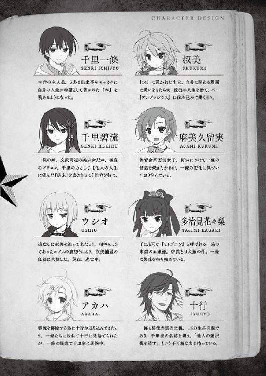
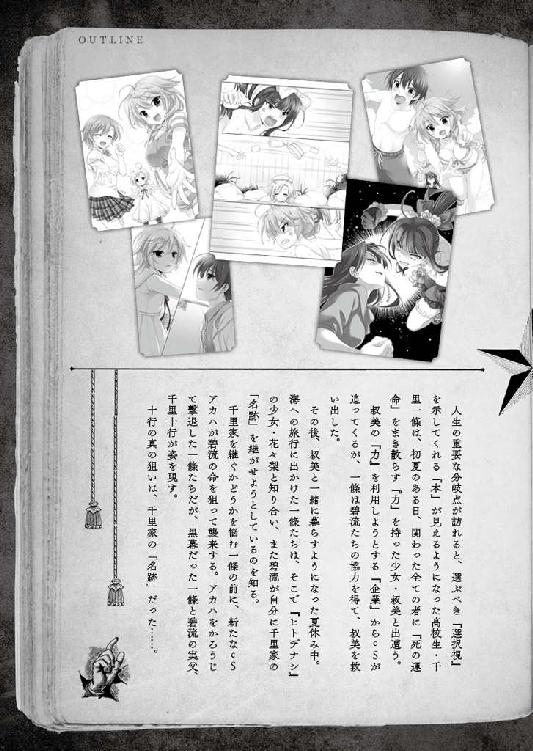
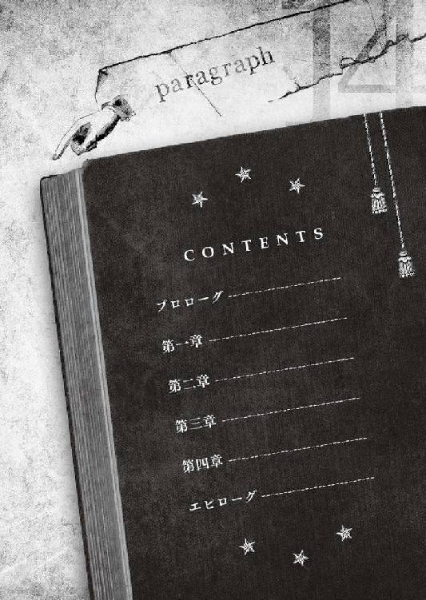
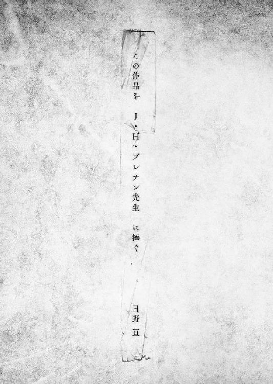
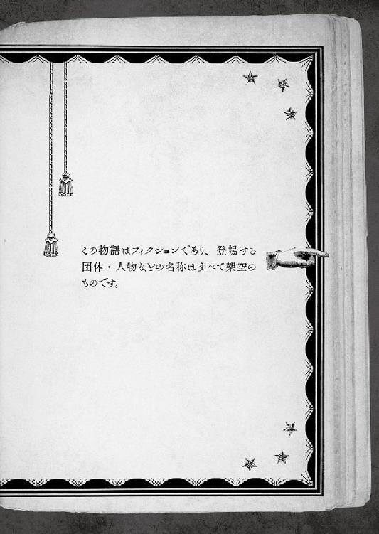
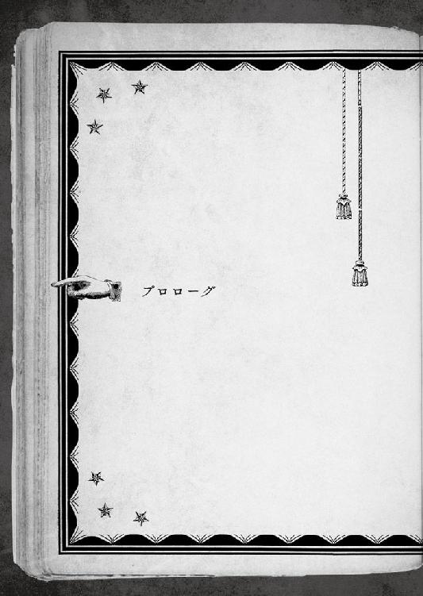
一〇月になると、夏が終わっても居座っていた腰の重い奥志麻の暑さにもようやく終わりがやってくる。
ここ、四国に位置するＴ県奥志麻市では、それが毎年の日常だと学んで早一年。
夏の瑞々しさや鮮やかさに取って替わるのは、しっとり落ち着いた秋の色合い。次第に色褪せていく山や森。水墨画のような風景に混じる一滴の荒涼は、来るべき冬への予感に違いない。
「おーい、朝飯だぞー」
目が覚めたのは、部屋の外から叔美に叫かれたおかげだった。
朝の早い一條にしては珍しく、その日は時間ギリギリまで養豚のような惰眠を貪っていた。といっても、豚がひたすら食っちゃ寝して体重と子供を増やすのは、そのような家畜として最適化されたからで、責任を問うのはお門が違う。野生の豚には牙がある。ご先祖様のイノシシ同様危険極まりない猛獣なのだ。
「そう、僕は豚だ、豚になるのだ！ 荒野を駆ける猛々しい豚に..................ダメだ、やっぱり僕は、養われた駄豚だったよ............」
そろそろ馴染んできた、千里家の二階にある自室。一條は目こそ見開いたものの、ベッドに突っ伏したままガス欠の車と化している。全力でギブアップを訴える身体は、ほんの一センチも持ち上がらない。
枕元の時計を確認し、食べきったアイスキャンディのバーを舐めるように、僅かに残った安らかな眠りの名残にだらしなくしがみつく。
「ダメな飛べない豚でいい。せめてあと三分、現実を忘れていたい......」
──千里の名跡を継ぐ。
姉の碧流に、自分の意志を伝えたのが三週間前。
何事も、決意しただけで成し遂げられるなら苦労はない。宣誓はスタート地点に過ぎず、ゴールテープを切るまでには、努力という歩みが不可欠だ。
その時を境に今日まで、ひたすらに過酷な日々が続いてた。
千里家───奥志麻の『ヒトデナシ』の一角、古くは地守の役を任じられた眷族。
名跡とは、そこに纏わる全ての権威と権限、権利と義務の一切合切である。
引き継ぐと言い出してしまったからには、一條が学ぶべきものは誇張抜きで山ほどあった。そうでなくても古い仕来りの寄席細工のような『ヒトデナシ』の在り方について、例の事故以来記憶を失ってしまった一條は、何も知らない。
例えるなら、小学生に上がったばかりなのに、何をとち狂ったのか大学を受験すると言い出したようなもの。おまけに、入試同様に、タイムリミット付きだった。
一〇月───つまり今月、『真知廻』という『ヒトデナシ』たちの集会がある。一條はその特別な場で、気むずかしくて仕来りに五月蠅い長老たちにお披露目されるのだ。その席で名跡を見事勤め上げられると証明できなければ、千里の沽券に関わる。
──『千里の沽券』にどのくらいの重みがあるのか、一條はまだよく理解できていなかったのだが。
「やる」と誓ったのは自分である。大概の物事には執着しないクセに、一度口に出したことを譲れないのは、一條自身にもどうにもならない性分だ。
しかし、「物事には限度があるんだぜ、旦那」と、肉体が半泣きで抗議している。
立派になった弟に感激して涙目になった姉から厳格な家庭教師に転職した碧流（用意のいいことに、教える時はどこからか度の入っていない眼鏡を持ってきて掛けていた。彼女はカタチから入るタイプなのだ）は、学校から帰ってきた後と店が終わった後で、一條に付きっきりの特訓を施した。
安らかな八時間睡眠は過去のもの。毎日四時間の睡眠時間を授業中に補填する日々。おまけに青色吐息の愛弟へ、碧流は「ナポレオンよりも一時間も多い。喜べ」と言い出す始末。
人権という言葉を残らず破棄処分にされた一條は、ことここに至ってようやく、叔美が姉のことをブラック企業の社長呼ばわりする真の理由を体感した。
これまでは、あれでも自分相手には相当手心を加えていたらしい、と理解できたところで後の祭り。
「......躰が鉛のように重い。このまま夜までこうしていられたら、どんなに幸せだろう。いっそ、ベッドの染みになってしまいたい」
いっそ、継ぐと言わなければよかったのか──などと思い煩ったりはしなかった。
千里一條は、振り向かないのが信条だ。
「反省」に意味はあっても、「後悔」に価値はない。決めたからには、ひたすら前を向いて、道半ばで倒れよう。他人に負けるならともかく、自分で言い出した約束を破るのはだらしなさ過ぎる。信義ではなく、意地の問題だ。
下の一階から叔美の声が届いて約三分が経過していた。
一條が起きてこないのに業を煮やして、我慢の利かない彼女がプライバシー無視で突っ込んでくるまで、猶予は僅か。またしても、恥ずかしい姿を目撃されて穴があったら入りたいぐらい落ち込まされてしまう。
仕方なく、布団の誘惑を振り切って、寝床から一気に立ち上がろうと───
「な、なにこれ!? 動かない!? 動け動け動け！ ちょっと待ってぇ!!」
したところで、上体を起こすことが出来ない自分を発見した。
焦って両腕をばたつかせたが、自由は遠い。
見えない手で胸を押さえつけられているような違和感。
手足が普通に動く金縛りなんて代物は、寡聞にして聞いたことがなかったが、そんなレア現象に遭遇できるとはある意味ツイている。
「ツイてないって！ なんだよ、この新種金縛り!? まさか、先月の事故の影響とか!? 頭を打ってその場で何事もなくて、一ヶ月後に突然死......」
ざわりと。
目まぐるしく回る思考を遮って、被っていた上布団の中程が音もなく盛り上がる。丁度一條の胸の辺り。布切れ一枚で隠された向こう側に、名状しがたい忌まわしいモノでもいるかのような蠕動。
起き抜けの上に金縛られて焦っていた一條が、戦慄に息を呑む。とあるホラー映画の、布団を捲ると見知らぬ女が笑っていて中に引き摺り込まれる、というトラウマ級に恐ろしいシーンがフラッシュバックした。
「うわあああああああああああああああああああああああ」
「───おはようございます、お兄さん。規則正しい生活は気持ちいいです」
シーツがはらりと床に落ちる。
一條の上にぺたりと跨がった格好の少女がいた。
まだ幼さを残しながら繊細で整った容姿は、人間よりも人形のようで、呼吸をしながら動いているという現実感に乏しい。胸にべたりと小さなお尻を下ろしているのに、ほとんど感じない体重が、いっそう夢見心地を強くする。
絹を思わせる銀の髪は寝癖だらけ。ブカブカな男物のパジャマが着崩れて、白く覗いた肩が意外なほど艶めかしくて、ようやく彼女が生きているのだと納得した。
彼女は、見知らぬ女ではなかったが、人間でもない。
どこからどう見ても人間であり、人間のように食事もすれば眠りもするが、どこまでいっても人間とは違う。
九月に一條が出遭ったとある事件以降、千里家の居候二号になった野良ｃＳ───
「あ、アカハ!?」
「はい、アカハです」
朝の日差しに負けない、屈託のないピュアな笑顔。
「そうか。君がしがみついてたから起きられなかったんだ......じゃなくて！ なんで、こんなトコに!? ここ、僕の部屋！」
「いつの間にか、お兄さんの部屋に来ていたんですね。夜中、お花を摘みに出て、間違ってこの部屋に入ってしまいました」
語尾に（棒）とかつきそうな、清々しく後付の理由である。
残念ながら、一條にはそれを問い詰める余裕はなかった。
早朝のけだるさを残らず掃除してしまうように、『本』が自動的に現れたのだ。
１６４─■■■■
窓から差し込むのは、眩い朝の日差し。洗ったばかりのシーツが心地よいベッドの上に、キミとアカハは寄り添っていると、いわゆる朝チュンの状況に相応しい乱暴極まる勢いで、扉が蹴破られた。比喩的表現というヤツだ。本当に蹴破られたワケじゃないぞ。
「おい、一條。呼ンでンだから、さっさと降りてこいよ。何を一人で騒いでンだよ。学校とかに遅れるンじゃ、」
起きてこないキミに苛立って、階段を駆け上がってきた叔美は、猛犬注意のシールがよく似合う形相で飛び込んできて、そして固まった。
「あ、おはようございます、叔美さん」
「あの、叔美さん!! その、こ、これはそうじゃなくて、実は───」
叔美は全くの無表情で、しかし爆走するローラー車みたいに回れ右すると、ほとんど落下するみたいに階段を駆け下りる。
「朝から何事だ、騒がしい」
「おい、トンカチどこだ、トンカチ！ 叩いて砕くから、よこせ!!」
すっかり取り乱した叔美の声が、キミの背筋を冷たくする。
ああ、何という悲劇。このまま悪辣な性犯罪者の烙印を受けるのか？
そんな人生の落日を望まないのであれば、やるべきことをやるしかない。何をやるかによっては、より最悪に落ちぶれるかもだが。
「もっと他の表現方法はないのか!?」
人生に選択は付き物だが、せめて朝くらい平穏に過ごしたいと願う一條だった。

「──という事があって。慌ててアカハをタンスに押し込んで隠して、飛び込んできた異端審問官には、朝だから寝ボケて見間違ったんじゃないっすかーＨＡＨＡＨＡって枕を投げつけて誤魔化したんだ」
「それは新手の惚気か？ それとも自慢か？ ぼくちんの環境は斯くの如く恵まれていますさあ平伏せ、なのか？」
事実を、有りの儘に日常会話程度に話しただけで、クラスメイトに白い目をされた。といっても、しらけた口ぶりがわかるだけで、今日に限って表情は読めない。
「どれも違う。強いていうなら......相談？」
お昼休み。
鷹崎南高校の校庭は、古き良き学校というイメージから抜けきれぬ時代遅れの遺物だ。これ見よがしな洒脱もなく、これといった特徴もなく、学校の校庭コンテストなる頓狂なものがあれば、おそらく丁度真ん中辺りの集団の上位グループの一角という、真に詰まらない位置付けをキープするだろう。
校庭の東側にあるベンチは、日当たりが良く、夏場は影がないので人も寄りつかないが、春や秋には意外な昼食スポットとして広く学生に知れ渡っている。
そこに、二人で陣取って昼食を取っている真っ最中。
アドレス帳の乏しい一條にとって、一緒に食事をするクラスメイトは貴重な存在といえる。気の置けない男同士というのが、重要だ。少し前まで、一條の家庭環境や交友範囲には、試しに他人の視点からの意見を聞いてみよう、と思わせる同性かつ同世代の相手がほとんど皆無だった。
......のだが、今日に限れば大層恥ずかしい。
昼休みを謳歌する場所取りに敗れたマケグミ学生たちが時折前を横切るが、彼らの眼差しは悔しさではなく驚きと同情。
要するに、関わり合いにならないでおこう、というヤツ。
「相談か。ふむ」
貴重なクラスメイトＡこと真田遍昭は、くぐもった声で頷きながら、手作りらしい弁当を頭を飾るアクセサリーの下部分へ掻き込む。
そこに覗き窓があるからだ。
一條は、器用だなあ、と見入っていた。
───こんな恰好で食事できるなんて。
一八二センチの長身は、今日に限っては二メートルある。細マッチョで黙っていれば二枚目の普段と違って、限りなく球体に近い。なのに、突き出ているのはリアル手足で、本体とのミスマッチで、より不気味さを醸し出している。
一條の横に器用に座したクラスメイトの真田は、真田であって真田はない。どこからどう見ても、奥志麻市が誇るゆるキャラ『コウジロウくん』、その人だった。
いわゆる、『中の人』というヤツだ。
「その前に確かめておきたいんだけど、真田は秋でも超厚着しないと生きていけない生物なのか？」
「この恰好のことか？ これなら、演劇部の有志と『マチ☆ダイスキ』のボランティア・イベントで使う予定のヤツだ。四時限目を使って調整してたんだが、ファスナーが壊れて脱げなくなった」
「なるほど、自習時間に姿が見えなかったのはそのせいか。腕を外してお箸持つくらいなら、頭も外に出した方が食べやすくない？」
「人目のあるところで頭は出せない。中の人はいないことになっているからだ」
この『コウジロウくん』は、頭頂部分の一部が外れて中身が顔を出せるようになっているが、機構の問題ではなく、矜持の問題らしい。一條にはよく理解できない。
「俺のことより、さっきの話だが、誤魔化し方の頭が悪い。一の字はどこかの間男か？ この場合、隠した側だから、浮気した嫁の方かな」
わははは、と影のない声で笑えない冗談を口にするコウジロウくん。
「そういう話をしているんじゃなくてだね、僕としては、こういう状況が一度ならず続いているから、どうしたらいいのかと......」
「そういう話だよ。ハーレムを如何に運営すべきか。気苦労が多くて結構結構。役得にはその程度の仏罰がなければ釣り合いが取れん。しかし、だ。一の字に誤魔化される方も、最近の若者にしては素直過ぎるな。住み込みで働いてる女の子がいるという話だったが、その子か？」
実家が寺で、いいトコのボンボンである真田の言動は、時々妙に年寄り臭い。
「......まあ」
叔美のことを訊ねられると、途端に歯切れが悪くなってしまう。
日常の悲喜交々で愚痴を零せる貴重なクラスメイト相手でも、おいそれとは話せない───それが、叔美の人物像だ。
彼女は素性も怪しげだが、そもそも真っ当な手段で入国すらしていない。存在が大っぴらになれば、極めて面倒臭い事態に陥ってしまう。彼女も、その関係者も。
「お姉様に、住み込み少女に、ニューカマーか。やはり自慢でしかないな。敢えて言おう───罪を背負って地獄へ堕ちろ」
「現実は、漫画やラノベみたいに甘ったるい代物じゃないよ。生活感があると夢なんて見られやしない。でも相手は女の子だから、ちょっとしたことでも気は遣うし。だいたいこの世の中......少数派は虐げられると決まってるんだ。女三人に男一人、家庭内で誰のヒエラルキーが最下位か、考えるまでもなく判るだろ？」
姉の碧流は、よほどの場合でなければ一條の味方をするが、それとこれとは話が別だ。
無言の空気による肩身の狭さを嘆くと、『コウジロウくん』が全身で笑う。丸い無表情のそのアクションが、無条件にムカついてしまう一條だった。
「夢を語られて現実は厳しいだとか、詰まらない返しだ。今日日、小学生でも斜に構えて苦界を嘆くぞ。夢を勝ち取る気概を見せろ」
「そもそも、ハーレムの夢なんて見てないし、欲しがった覚えもないし。それに......親戚の子を預かっているだけ......だよ」
───と、アカハについては説明してあった。
社会の枠組みを定めるのはルールだ。いわゆる法律とは限らない、言語や文化、価値観といった規定が共通する範囲を、『社会』と呼ぶ。
例えば、授業を終えて家に戻ったとしても、一條は『鷹崎南高校』の学生という社会の一部だし、コウジロウくんの皮を被った隣の愚か者も同様だ。
ルールは蜘蛛の巣のように張り巡らされているが、真っ当な『社会』である程、普段の生活では意識されないように仕組まれている。
但し───一度道を踏み外したなら、その限りではない。
叔美以上に説明できないアカハの素性は、不法入国どころかｃＳという化物的生物だ。
ｃＳとは、死すべき人間を基に違法に改竄することで創られる人外。外見も生命維持に必要な行為も、一〇〇パーセント人間だが、社会的には完膚なきまでにこの世に存在する筈のない元人間だった。
その筋に発覚すれば大問題になる。が、そこは昔の人が述べている。曰く、「蛇の道は蛇」。『ヒトデナシ』と何百年も付き合ってきた千里家にはそれなりのノウハウがあり、様々な不法を丸く収める有形無形の人脈やパイプには事欠かない......らしい。名跡預かりが手を回してくれたことなので、一條は詳しく知らないが。
「知らない......じゃ、この先は色々すまないんだろうな」
「何を謝る、一の字。己の幸せ指数を世間に申し訳なく思ったか？」
「ただの独り言だよ」
そうか、と気にした風もなく流す大らかな真田。
会話を一頻り終えた一條は、秋の空を見上げて、荒涼と澄み切った青色に目を細める。
どうにも気分が盛り上がらず、さりとて沈んでいる訳でもない。エンスト気味のエンジンを空吹かしするよう。
連日の特訓で疲れが溜まっているのか、それとも朝の名残か。
どちらでもないのを、一條自身がよく理解している。
幸福のカタチは様々だが、穏やかさであると解くなら、変化こそが大敵だろう。一條が、スローライフを愛しているように。
未知の闇を恐れるのは、人の本能に違いない。
それでも───全てが変わってしまうであろう道を進むと決心をした。
アンニュイなのも当然。生き方を変える期日が、もう直前に迫っている。
姉に頼っていればよかったこれまでとは何もかもが違う。後悔はしなくても、プレッシャーはあった。
この先、一條は諸々全てを引き受けていく。
上手く出来るかどうかは、また別として。
深呼吸を一つ。郷愁に似た重さを吐き出して、胸の奥に溜まった空気を入れ換える。
クラスメイトの言い様ではないが、先行きの困難を嘆くのは簡単だ。
名跡を引き継ぐのを選んだ時、そこには約束したという義務感や一族としての責任、不安や恐れだけではなくて、初めての土地へ旅立つような胸を打つ高揚が確かにあった。
諸々全てを引っくるめて、一條は選択した。
しかし、今になってみると、胸の奥はあやふやだ。古人言うところの、喉元過ぎればというヤツか。掌中にあったと感じた何かも、霧の向こう側のように輪郭が定まらない。
「たく、シャンとしろって」
自嘲気味に呟くものの、流石にこちらは相談する訳にもいかない。想いをやや持て余しながら、ふと校庭を挟んだ向かい校舎の一階に漂わせていた視線を止めた。
「あれ......姉さんと久留美？」
視点は彼方の夢想から、地に足のついた半径五〇メートル圏へ戻ってくる。珍しい取り合わせだった。極めて、とやや不吉を付け加えてもいい。
二人は元々知り合い同士だ。千里家と麻美家はご近所同士で、家族ぐるみでの付き合いがあったらしい。以前は足繁く通っていたという久留美も、一條の『事故』以降、滅多に千里家を訪れなくなった。姉の碧流との間にも、それとない一線が引かれていて、挨拶はしても会話をしているような場面は、憶えている限りほとんどない。
「......何の話をしてるんだろう？」
組み合わせが組み合わせだけに気に掛かる。よく見ようと身を乗り出すと、『コウジロウくん』が驚くほど近い距離で見下ろしていて、額をぶつけそうになった。
「果たせよ」
「何だよ、突然。今はちょっと......」
「今、いい機会だろ。お前のお姉様を紹介するという『約束』、忘れたとは言うまい」
「覚えているけど..................考え直す気はないのか」
言い逃れではなく、完膚なきまでの善意で、無駄と知りながら翻心を求めた。
真田遍昭は、自分の言動に責任を持つ男だと、短い付き合いでも理解している。本人が自分の行為を、ロープなしバンジーと理解しているかはまた別として。
真田に限らず、千里碧流の見目麗しさに惹かれる男子生徒は後を絶たない。飛んで火に入る夏の虫の如く告白し、総玉砕。鉄壁のガードに、ついた渾名が『アイアンメイデン』。
その恥ずかしい通り名を聞いて一條が思い浮かべたのは、鋼鉄の如くお堅い乙女のイメージではなく、欧州で魔女狩りに使われたという嬉し恥ずかしアイテム。内側がトゲだらけの棺桶で、魔女と疑わしき輩を突っ込んではある事ない事自白させたという拷問器具の方だった。姉の気性的に、わりと正解だろう。
校庭を挟んだ向こう側の姉本人と久留美はといえば、目を離している間に姿を消していた。二人の話は終わってしまったらしい。
「............まあ、いいか」
「ここへ来てのその煮え切らない態度。さては過剰なシスコンで、俺の姉ちゃんが可愛すぎるから結婚したいマジで、とかいうタイプか？」
「ない。絶対、地球が逆回転してもない」
碧流が立ち聞きしていたら、打ち拉がれて一週間は晩ご飯が生野菜しか出てこなくなるような切れの良い即答に、コウジロウくんは鷹揚に頷く。
「では、問題ないな。ああ、念の為に言っておくと、例の噂なら聞いている」
噂とは、言うまでもなく碧流に纏わるものだ。
碧流は、学校生活では天使の生皮を被り、品行方正文武両道の優等生で通っている。一度ならず生徒会からも誘いを受けたらしいが、家業の手伝いが忙しいからと部活共々断った。
しかし、どれだけ分厚い城壁を築こうと、本性は隙間から気づかぬ内に染み出てしまう。この噂もその一つ。
曰く、「彼女にしつこく言い寄った鷹北高のサッカー部員がどんな末路を辿ったか」。鷹南高生の心胆寒からしめ、まさか事実ではあるまいと笑い飛ばしながら、一抹の不安を掻き立てずにはおかなかった都市伝説である。
「............知ってるんだ、それで？」
恐る恐る、問い質す。
ちなみに一條は、噂が事実とは異なっており、話半分ほど大人しめに脚色されていると知っていた。叔美と一緒に現場へ居合わせてしまったのだから。
「───だから、どうした」
「真田は、姉さんの一体どこが気に入って、そんなにご執心なんだ？ 美人だから？ それとも、格好良いから？」
「お前のお姉様は、普通じゃない。誉めているんだぞ」
あっけらかんと答える。といっても、コウジロウくん越しで表情はわからないが。
「ごめん。とてもそうは聞こえなかった」
「人生は限られたリソースだ。時間、空間。俺は利害に五月蠅い男だからな。自分から普通に丸まりたがる相手と、恋だの愛だのしているほど暇じゃない」
「よくわからないけど、真田が変人なのはわかった」
丁度、澄んだ高音の鐘の音が鳴った。予鈴のチャイムが昼休み終了一〇分前を告げたのをキッカケに、会話を切り上げて一條はベンチから立ち上がる。
「まさか、コウジロウくんで授業に出るつもり？」
「脱ぎたくても脱げない。本番の練習には丁度良いが。......五限目は『数学』、吉本か。五月蠅いジジイだな。一の字は先に教室へ戻っていろ。俺は、もうしばらく脱衣にチャレンジしてみる」
それじゃあ、と校舎へ向かう背中に声が追いついてきた。
「ところで、今日は暇か？ 最近忙しそうにしているが、ストレスの溜まってる顔だ。事情はどうでもいいとして、たまには気晴らしも遊びに出掛けるのも悪くないぞ」
変人のクラスメイトの意外な目聡さに感心し、心遣いに感謝した時、待ってましたと言わんばかりに、目の前へ『本』が自動的に現れた。
２３３─■■■■
予鈴が鳴り響くと、学生の波は水槽の底を抜いたように、一斉に校舎へ呑み込まれていく。気苦労を増やしたくないなら、キミもそうすべきだろう。全力疾走とまでは言わなくても、授業開始に間に合わなければ、吉本教諭お馴染みの長い話を聞かされてしまう。
キミにとって数少ない友人に答えるぐらいの猶予はあった。とはいえ、今日のキミには遊びに行くような時間は与えられていない。
いや、全てを振り捨てさえすれば、自由の空へと飛び出すことは出来るだろう。
開かれたＰＧの最後まで目を通し、末尾に三つほど著かれていた選択視の内容まで素早く確認した。
悩むまでもなく、選ぶべき道は決まっているが。
「悪い。今日は大事な用事があるんだ。............親戚一同が大集会する」
「田舎名物だな。元が村の地主の土地で、区画丸ごと一族郎党なんてのもよく聞く話だ」
「そんなところだよ。真田が『コウジロウくん』になる何とかいうイベントが終わる頃には、暇も出来る」
「『マチ☆ダイスキ』だ。よかろう。遊びに行くのはその時に。ついでに、お姉様も誘っておいてくれ」
「真田って、胸を張ってスキップしながら地雷原に飛び込む生き方だね」
「俺の信条はハイリスク＆ハイリターン！ 地雷が怖くて、人生を楽しめるか」
本気らしい口ぶりに、ちょっぴり憧れる。そこまで自分を信じられる真田が眩しい。
「吉本教諭には上手く言っておくから、脱ぐのを頑張って」
今度こそ教室に帰ろうとして、途中で思い直した一條は、再度引き返してきた。
「あのさ......もしかして、最初に僕へ声を掛けてきたのも、変人枠だったから？」
「一の字、自分じゃわかってなくても、お前は相当変なヤツだよ」
クールに言い切られて、一條は極めて複雑に打ち拉がれたりした。
千里家の玄関は、『アンブロシウス』の店舗の裏側にある。住居と店舗が背中合わせにくっついている構造で、中で行き来も出来るようになっている。
一條が学校から戻ってくると、位置構造上、住居側よりも店側の入口が近い。ものの三〇秒と掛からない差だが、今日は大事な日で、気が急いていた。
店の前を横切りざま、入口のノブを掴むと、どうやら鍵が開いている。時間的に少し早いが、叔美が準備を始めているらしい。
「『本』のヤツは現れない......か」
どちらを選んでも人生の道筋に大差ないなら、数十秒でも早い方がいいだろう。古人は述べた。時は金なり、と。
迷わずショートカット。明かりの点いた店内にただいまと踏み込んで、一條は硬直した。
「....................................なんですか、この人外魔境は」

白、白、白。
扉一枚くぐると、見覚えのない鮮やかな白い色が目に飛び込んでくる。白い毛並みならぬ、胸元の白い肌が瑞々しいバニーガールだった。
──バニースーツとは、見た目はレオタードに似ているが、コルセットなどと同様の造りで、スタイルをよく見せる補正効果を持つのである。
一條の脳裏を、重厚なボイス付きのナレーションが流れ出す。どうしてそんなマニアックな知識を、ウブでネンネな草食系青少年が知っているかというと、先週お向かいのコア層向けスナックのママ、オカマダさんに、昔使っていたというバニー制服が倉庫から出てきたと見せびらかされながら、微に入り細に渡ってレクチャーされたからだ。
スーツの補正作用の賜物か、はたまた素材のグレードが高い故か、胸を張り、スラリとした手足を伸ばしたスタイルはまさに完璧で、ウサギ耳と蝶ネクタイと網タイツとピンヒールまで備えた、まさにバニーの化身だった。ここが『アンブロシウス』でなければ。
「どうして、バニー？」
あまりの衝撃で止まっていた脳が、幾らかまともに回り出す。
一條の祖母が開いた『アンブロシウス』は、シックな洋風バーであって、こんな目のやり場に困る生物はいなかった。
健全な青少年としては直視しがたいが目を逸らせない反則的ウサギさんをよく見ると、相手は他でもないウシオだ。
「......どうして、ここに？」
棒読みじみてしまったのは、予想外の相手がいる驚きのせいではなく、単にバニーの白さに脳をやられかけていたから。
「ここのオーナーに呼ばれた。『おい、骨を投げてやるからこい』と」
ウシオは相変わらず素っ気なく返した。整っているが、淡泊で表情を感じさせない容姿は、バニーらしい艶っぽさとは正反対の極地だ。オーナーの発音に含むモノがあったような気がしたのは、きっと気のせいだろう。
「姉さん、また......」
言い切る姉もある意味大したものだが、それでのこのこやってくる方も凄い。
ウシオは、アカハと同じ野良ｃＳだ。一條もまんざら知らぬ相手ではない......どころか、それなりの世話になっているが、元を正せば、叔美を連れ去ろうとした『企業』の走狗。任務に失敗し、紆余曲折の末、奥志麻に居残って潜伏する文字通りの野良ｃＳになった。落ちぶれたと言うべきか、自由の翼で飛び立ったと表現すべきかは、ともかくとして。
「......あれ？ でもウシオ、さん」
ウシオをなんと呼ぶのがいいのか、未だに頭を悩ませる。敵であったり、秘密兵器だったり、バニーだったり、距離感は顔を合わせる度に違う。結局、無難に「さん付け」にしたところで、本日の彼女に微妙な違和感を得た気がした。
（何だろう、以前と違っているような───）
それも一瞬、すぐに別の騒がしさに呑み込まれる。
「やっと帰ってきやがったな、遅いぞ一條」
「お帰りなさい、お兄さん」
なんと、『アンブロシウス』に迷い込んだ兎は一羽ではなかった。ちなみに、兎は一匹ではなく、一羽と数えるのが正しい。
次々と姿を現すウサギちゃんたち。
縦の長さが足りないのに「ボンッ」と「キュッ」がハッキリしているおかげで、独自の色っぽさが扇情的な叔美バニーと、縦とか横とか以前に絶望的にサイズが不足しているせいで衣装が余ってブカブカ脱げ掛けのアカハバニー。
おまけに。
「ど、どう、ですかね......」
照れながらポーズをつけているのは、
「く、久留美まで............どうして、ここに？」
「呼ばれたっす！ 面白いことをさせてやるって!!」
『させてやる』という上から目線が、如何にも碧流らしい。
「さては......今日の昼休みの」
あれは、碧流が久留美を誑している場面だったのか。
「姉さんは一体何の魂胆で......それにしたって、こんな日に久留美まで巻き込むなんて」
「それよりも、どうっすか！ どうっすか!?」
当の久留美は頭の後ろに手を当てて、腰を突き出して、クネクネとくねらせる。安物のグラビアに出てきそうなポーズ。
「どうって、言われても───」
反射的に喉を鳴らしてしまいそうになるのを、男子のプライドで踏み留まる。
──がっついているみたいで、みっともないではないか。
そんな一條のみみっちい矜持と悩みを一顧だにせぬ力が、久留美バニーにはあった。どちらかといえばスポーツマンタイプ。よく走り回るせいで自然に引き締まったスタイルはバランスが非常に良い。上よりも下がプリクリとした日本人的な安産型スタイルはバニー向きとは言えないが、なまじ普段が暴れ者なだけに、素肌面積の大きな恰好をされると、落差の持つパワーが半端ない。
（───ハーレムを如何に運営すべきか。気苦労が多くて結構結構）
昼間、真田が余計なことを吹き込んでくれたせいで、過剰に意識しそうになって困る。
ここに至って、一條もようやく理解した。
──これは、極めて不利な状況だ、と。
「ど、どうして、こんなことに」
「勿論バイトとして雇った。何が起きてもいいように」
入り待ちしていたバラエティ番組の司会みたいなタイミングで、碧流がカウンター横のバックヤードへ続く扉から店内に入ってきた。
「姉さんは、普通なんだ」
碧流はいつも通りの恰好だ。ホッとするやら癒やされるやら。
「ふむ、見たいのか？ こんな品のない恰好、私に似合う筈ないが、愛弟のたってのリクエストというのなら......考えなくもない」
「いや、その......別に見たいというワケでは......」
それにしても、本心ダダ漏れのヒドい告白をされてしまった。姉がヒドいのは今に始まったことではないが。品がないと思う恰好を、他の女の子にさせるというのはどういう了見なのだろう。
「何も言うな、一條。理由を知りたいのだろう。───説明しよう！ 『マチ☆ダイスキ』に備えて、我が店もアルバイトを増やすことにしたのだ」
「..................そんなに人手が足りてなかったの？」
「ないのは人手じゃない。金なのだよ」
キッパリとゲスいことを言い切られてしまった。言い切り過ぎだった。
「お金がないのにバイトを増やしたら、更に経営悪化するんじゃないの？」
少なくとも、この中では最も常識人のつもりの一條には、碧流の振り翳す新手の方程式が全く理解できない。
それよりも───
この姉が「金」を取り沙汰するほど、一條の知らないところで『アンブロシウス』は困窮を極めていたのだろうか。
経営は日々そこそこ。大繁盛とは言わないまでも遣り繰りできている。常連客が大半なのは、大通りに面した大店舗ではないからだ。それが、あくまでも薄皮一枚の、姉の優等生ごっこと同じ外面だけだとすれば。
「いかがわしいガールズバーにモデルチェンジするくらいに経営が苦しかったのなら、一言相談してくれれば......わかった。他にバイトを入れられないか考えてみる。早朝ならやれるだろうし」
「何の話をしているのだ、弟よ。『アンブロシウス』はそこまで逼迫してないし、お祖母様が拓いた大切な店を、そんな低俗にモデルチェンジするつもりは毛頭かつ金輪際有り得ない」
そうだったんだ、と素直には納得できない。
碧流は何事にも如才ない反面、ここぞというところで、大きなミスをしでかして進退窮まることがことがままあった。
ちなみに、そんな時は決まって、勢いと高スペックに任せて強引に荒野を踏破した挙げ句、周りが流れ弾を喰らう羽目になる、というオチが付く。
改めて肌色ましましな店内情景を注視......しようとしたが、どうにも照れくさくて明後日を向いてしまった。
「一〇月半ば。いよいよ本番が迫っている」
久留美も居る場だから、気を遣って直接言葉にはしなかったが、本番が『真知廻』のことなのは説明されるまでもない。
『ヒトデナシ』たちの大集会『真知廻』は、毎年一度行われる。本来的には、古式に則った儀礼を奉納する「会」だが、自分の土地に引き篭もりやすい現存する『ヒトデナシ』たちにとっては、遠方の同類と顔を合わせる貴重な機会だ。
「今年は、新規顧客の開拓と地域貢献の為に地元イベントともタイアップし、昼間も臨時営業を行っている。更に人手が必要になってしまうのは当然だろう。だがしかし───」
「......しかし？」
ごくりっ、とさっきとは違う意味で喉を鳴らす。
「これ以上、賃金を払いたくない」
一国の浮沈を左右する大物政治家の如く、重厚に背を向ける姉。
「払えよ、オニチク!!」
叔美の至極もっともな主張は、完全無視だった。
「私は考えた。お金を使わずに......仮に涙を呑んで払うとしても、出来る限り安上がりに従業員を増やす手立てはないものか。そして、閃いたのだ、悪魔的アイデアを!!」
碧流がおもむろに振り向く。回れ右して逃げ出したくなる、いい笑顔だった。
「それが（ババーンッ）！ このメンバーだ（ジャジャーンッ）!!」
「あの、姉さん。さっきから......すぎる台詞が続いているんだけど」
一條からの控えめな糾弾も、さらりと無視された。
元々住み込みで従業員をしている叔美や、幼馴染として付き合い自体は長い久留美、ギリで居候二号のアカハを舌先三寸で丸め込んだのはまだしも、散々世話になっているウシオまで巻き込むとは。
「バイト代が出るそうだから」
「聞いたか、一條。本人はこの通り大喜びだ。何の問題もない」
「ちゃんと払うんだ！ さっきの口ぶりだと、タダでこき使うのかと」
「時給九九円」
「いかにも」
淡く頷くウシオと、悪魔でしかない笑顔の姉。
「ええええええ────────マジで!? いや姉さん、それは、いくら何でも......」
「いいか、一條。グローバル経済を勝ち抜く為には、人件費を極力抑えて、安い賃金で労働させなければ、競争力を確保できないのだ。それに、ｃＳには労働基準法も最低賃金も労働時間制限もないからな、くくく」
「『アンブロシウス』は地域密着型自営業だから、グローバル関係ないよ!? ルール無用すぎる！」
事情を知らない久留美に聞こえないよう、後ろ半分は小さく呟きながら悪の女幹部のようにほくそ笑む姉に、同様に囁き声で抗議する。無力だが。
「ああ、血の繋がった弟として、この暴虐を見逃して良いのだろうか......」
一條は過酷な労役義務を強いられたバニーたちを見回して、
「..........................................」
直視するのが恥ずかしくて、また目を伏せてしまった。
躰のラインが見事に浮き出してしまうスーツ、胸元に覗く綺麗な肌色、脚線美をより綺麗に見せる網タイツ。そして、頭のウサギ耳とお尻を彩るキュートなふわふわ尻尾。
一〇代の青少年の本能を、鉄槌の勢いで直撃する。危険すぎだ。
「照れてやがンのか。おいこら、こっち見ろよ、一條」
叔美が、さっきまでとは明らかに違うニヤニヤ顔で絡んできた。
「別に......照れてないし」
「じゃあ、こっち見ろよ、ほらほらー、どうだ、オッパイだぞー」
抵抗すると構いたくなるのは人類目猫科の叔美には本能だ。タチが悪いことこの上ない。
「見たくないよ、見せるなよ」
「じゃあ、何で赤くなってやンがだよ、ほらほらー」
おまけに碧流までが。
「こっちを向かないか、一條。まだ話の最中だぞ」
「人間には出来る事と出来ない事があって」
「だから、何の話をしているのだ、弟よ......ん？ なんだ、叔美」
勢い込んだ碧流の袖口を、叔美が真顔になって引っ張っていた。
「一條のヤツがあンな顔してンだけど......もしかしてっていうか、やっぱっていうか、この服、エロッちーヤツなのか？」
文明や人間と隔絶してきた叔美の知識は、酷く偏っていた。それでも、一條の反応から、野生の本能で危険さを感じ取って、バニースタイルの胸元を無邪気かつ素直に抓んで引っ張る。
危うく中身のふわふわが溢れそうになって、一條は吐血し掛かった。
「それなりに、エロッちーかもしれない」
「以前、連れて行かれたカジノにも、こういう恰好の女の人がいました」
碧流は自分の都合で黙っていたが、ウシオとアカハには関係がない。
こと社会的な一般常識については、叔美よりも人間ではないｃＳ二人の方に分があるというのも、何やらおかしな話である。
「......ちっ」
「今、バレたか......みたいに舌打ちしやがったな！ やっぱ、エロっちーのかよ！」
「何を言う、叔美！ アカハも言ったろう、『カジノ』で見たことがあると。ここと同じ真っ当な職場で使われている、由緒正しき代物だ。エロっちーなどということはない。断じてない」
「お、おう......そういうもン......なのか？」
無駄に強力な眼力で、強引に押し切られそうになる少女。
「姉さん、いくら何でも今のはないんじゃないかな。叔美は根が素直なんだから、嘘を教えるのは良くない」
「い、一條───」
碧流は、目に入れても痛くない弟から人の道を説かれて、愕然としていた。
「騙しやがったのか、オニチク！ おい、何とか言え！」
「い、いかがわしいかどうかの問題ではない！ これはオーナー命令だ。今夜から制服は、これなの！ みんな、これを着るの!!」
風向きが悪くなってきたからか、面倒になったからか、碧流が逆ギレ気味に宣言する。
「でも、姉さん───」
言いかけたところで、ちょっと待ったというような気安さで、『本』が自動的に目の前へと現れた。
２９８─■■■■
ここは花の国か、あるいは伝説に謳われるアヴァロンなのか。
『アンブロシウス』の店内は、秋とは思えない白い花園と化し、見目麗しいウサギたちが飛び回る。注意を怠るな。昔話にも、楽園に招かれて鼻の下を伸ばしていると、外の世界ではあっという間に一〇〇年が過ぎ去ってしまった......なんて説話が残されている。
「みんな、これを着るの!!」
碧流が無茶を言い出すのは、今に始まったことではない。
叔美はともかく、久留美やｃＳの二人は事態を受け入れている。イヤという表情でもないようなので、敢えて口を挟むかについては一考すべきかもしれない。
叔美に納得させるだけで、この場は丸く収まりそうだぞ。
叔美を丸め込むのであれば／２２２─■■■■ へ行け
敢えて、碧流を追求する場合には／３６９─■■■■ へ行け
君子は危うきに近寄らない、と賢明さを発揮するのなら／１１４─■■■■ へ行け
毎度のことながら、著いてある内容よりも、この程度のことで左右されてしまう「人生」の羽の如き軽さに、一條は苦笑いしてしまう。
香港で蝶が羽ばたくと地球の裏側で嵐になるのだと、以前に真田から教わった。
始点での僅かな角度の違いが、やがては巨大な差になってしまうという喩え。「人生」も然りだ。ここでの選択視で、少女たちの一條への心証に小さな変化が起きれば、その後の成り行きがドミノ倒しのように変わっていくこともある。
───おお、人間なるものよ、その滑稽さよ。
以前の一條は、その軽さっぷりを突き付けられて、悩みもしたし、打ちのめされもした。
しかし、人間の適応力はずば抜けている。どんな非日常も繰り返せば、詰まらない日常へと色褪せてしまう。
人生が危険と隣り合わせなのは、特別ではない「当たり前」だ。
社会とは、不吉を遠ざけるのではなく、忘れさせる為にある。日常という薄氷一枚の下は奈落だと気づきながら、人生を謳歌するのは難しい。
人は、忘却を武器に、困難を乗り越えていく。......時々、過去全部忘れてしまう莫迦者もいたりするが。
「───」
一條はしばし文面を熟考する。といっても、時間にしてほんの一秒か二秒足らず。
口を挟むのは考えものとあるのに、注意を怠るなと記述されているのが不穏だし、「碧流を追求する／３６９」のＰＧだけ、他に比べて高めなのが気に掛かったが。
三つの選択視はどれも三番台以下。火急の危機は少ないとなると、大事なのは自分が何をしたいか、だ。
「この恰好に理由があるなら、教えて欲しいな。そうでなくても、姉さんは一人で突っ走るんだから。説明してくれないと解らないよ」
怯まない一條の追い打ちに、「ぐむむ」と檻の中の人食い熊みたいに唸る姉。
「理由あンのか？ 言えよ、オニチク」
叔美も、数ヶ月の付き合いで、こういう場合の碧流がロクでもない企みを誤魔化そうとしてるのだと学んでいた。
普段なら、それでも地位と経済を武器にやり込められる処だが、今日は援軍が優秀だ。
「ワタシも聞きたい」
「アカハもです」
「賛成、賛成っす！」
ウシオにアカハ。おまけに久瑠美まで加わる。要するに碧流以外の全員から証拠の提示を白い目で要求された被告人は、追い詰められて、敢えなくゲロった。
「......今夜、ジジイ共がやってくるのは、覚えているな？」
「忘れるわけないよ。おかげで、昨日もゲロ吐くまで特訓だったんだし」
昨日だけではなく、一條への特訓は三週間土日祝なしで行われた。
そして、本番の『真知廻』を来週に控えた今夜───『アンブロシウス』に、奥志麻に隠れ棲む『ヒトデナシ』の長老たちが集まってくる。『真知廻』は、奥志麻の『ヒトデナシ』が仕切るのがルール。その打ち合わせの会合だ。
但し、それは表向き。
今夜は、千里家の名跡としての、一條の華やかなりしデビューを兼ねていた。
真田に言った「親戚」の会合とは、他でもない、今夜の集まりのこと。
碧流が敢えて前倒しのデビューを善しとしたのは、『真知廻』にぶっつけ本番で挑むよりも、リハーサルがあった方がいいと判断したからだろう。万一、最悪の失敗をしでかしても、本番で失地回復を図れる。
一條としても、それは有り難い。
手順は何度も練習したとはいえ、完璧にはほど遠い。緊張でガチガチになったままでは、やり直しの利かないステージで、どんな無様を晒すか知れたモノではない。
実のところ、今夜を思えば胃が裏返りそうだったが、少しでも空気に馴れる場があるというのは、天から垂れてきた蜘蛛の糸にも似た、ささやかな救いである。
それに、一條にとっては見逃せない気掛かりがもう一つ───
『ヒトデナシ』の社会は、外側を寄せ付けない分、内側の結束は堅い。それが土地の者同士で、物理的な距離が近いなら尚のこと。
当然ながら、今夜の客人たちの多くは、以前から何らかの形で千里家と付き合いのあった者がほとんど。つまり───
〝千里一條〟とは、確実に面識がある。
一條が記憶を失ってしまったことは、身内以外には隠し通している。
かつての自分を知っている人間が一人どころか大勢集まってくるこの状況は、地平から迫る敵の大軍に剣一本で飛び込んでいく古代の英雄さながらの無謀。
至極当然だが、一條は英雄ではない。
三週間の特訓では、山ほどの仕来りや挨拶の手順の他に、如何に記憶の不備を誤魔化すかについて、前世紀に隆盛したスポコン漫画も真っ青な血の汗が流れたものだ。
「それとバニーに、どういう関係が？」
「あるのだよ、弟よ。いいか、枯れた性悪ジジイほど、身の程知らずに若い女に気を惹かれるもの。古くさい漬け物が。いつまでも春が去ったと認められず、現世にしがみついて───だが、そこが付け目なのだ」
どこから見ても完璧に悪魔な笑顔。
「脳の皺が少なくなったジジイ共を、ピチピチ（死語）のヤングパワーで悩殺（死語×２）して、注意を分散させ、かつ一條への心証を良くするのだ。これぞ、日本企業に古来より伝わる、伝統的なコミュニケーションメソッド、〝ゲイシャ・セッタイ〟!!」
「姉さん、悪辣すぎる......」
「どんな汚名も甘んじて受けよう。そうでなくても我々には、厄介なハードルが幾つもある。それを一括解決できる手段だ。今回に限り、私は弟の為ならば鬼となり、如何なる非道な真似も躊躇わない」
一條は「それって今回に限ってなくない!?」と思ったりもしたが、こと此処に至っては些細な問題なのでツッコまなかった。
「事情を説明したからには、もはや否はあるまいな、ウサギ共。一條の為に、（言葉通りの意味で）一肌脱いでもらうぞ」
「......よくわかんないっすけど、イチジョーの為なら、久留美がんばります!!」
無駄に元気の余っている久留美が両手を挙手して恭順する。
アカハも無言でコクコク頷いていた。ウシオに至っては、事情はどうでも良さそうだ。叔美も「しかたねぇなぁ」みたいな顔で、ウサギ耳の生えた頭を掻いていた。
「その......ありがとう」
予想もしない全会一致。自分の為に他人がこんな風に頑張ってくれるのがくすぐったくて、一條は照れくさそうに礼を述べた。
「ナニいってやがンだよ。別にオマエの為じゃないからな。アタシ、これでも従業員なンだから......仕方ないンだぞ」
叔美こそ、頬をほんのり染めながらボヤくフリをして、そしておもむろに、事の起こりを指差した。
「じゃあ、オマエもなれよ、ウサギに。一條のためなら何でもすンだろ」
「あん？」
全く予想外というように目を見開いてから、碧流はこれっぽっちも悪びれもせず、
「言った筈だ。あんな品のない恰好、私はイヤだ」
「ひどい、ヒドすぎるっす！ 着れば結構悪くないっす」
「テメーだけ逃げンのか、つか、ヒドーな真似されてンのはアタシらじゃねーか!?」
「オーナー、非道」
「アカハはどっちでも良いです」
碧流が、一通りの非難を鉄面皮で跳ね返すのを待ってから、
「でも、姉さん。さっき、『みんな、これを着るの』って言ってただろ。『みんな』なんだから、姉さんも着るつもりだと思ったのに、もしかして違うの？ いや、僕は姉さんが自分で言ったことを裏切るなんて思わないけどね」
一條は、人畜無害な顔で毒を盛った。人生とは、中々思い通りには行かないモノである。この姉にも、たまには薬を効かせた方がいいだろう。
「なん......だと......!?」
碧流にとって、かつてない窮地だった。
愛弟に「姉さんの格好良いトコ見てみたい」と言われてしまっては、あっさりと前言撤回するわけにもいかない。出来る出来ないではなく、矜持の問題だ。
愕然と店内を見回したが、暴君に救いの手を差し伸べる聖人君子の従業員は皆無だった。当然だが。
古人は述べた。因果は巡る糸車、だとか。
人間、普段の行いからくる負債は、一番辛い時に、たっぷりと利息を付けて返済を要求されるものである。
「むっ、くっ......当然だ、任せておけ!!」
碧流は、愛弟の差し出した杯を、死ぬと判っていても手に取った。
まさに姉の鏡、といえるかもしれないし、言えないかもしれない。
大船に乗った気でいろと胸を張るリーダーと、泥船に乗せられて白い目を送るギャラリーたちの間には、深くて広い川が流れていたが、それはそれ。
碧流将軍は戦装束に着替える為に、満身創痍の身体を涙目で引き摺りながら、奥へと引っ込んでいった。
「単純っていうか、意地っ張りだよな」
叔美が遠慮なく笑う。敵意はあっても悪意はないので、イヤな感じを受けないのが叔美らしい。
「ああいうところが、姉さんの良いところじゃないか」
「それぐらいないと、悪いとこだらけだろ。ところでさ、『みんな、これを着るの』ってことは、当然一條も着るンだよな？」
「なん......だと......!?」
悪意の欠片もない素直さで、叔美は一條を追い詰めた。
暴君を後ろから刺して平和が訪れたのに、流れ弾が飛んでくるとは。愕然と店内を見回したが、救いの手を差し伸べるウサギガールは皆無だった。
しかし、それこそが世の摂理であると、一條が世間知らずであっただけ。古人は述べた。狡兎死して走狗にらるる、だとか。強大な支配者を打ち倒した後に待っているものが、遺産の相続権を争う内輪揉めと口減らしであることは、数多の歴史が証明している。
「それ、いいっすね」
意を得たりとニンマリ笑った久留美が、後ろに回って退路を断つ。
ウシオとアカハが手を打ってからゆっくり近づいてくるのを、絶望で見る。
「い、いやああ、まってえええ────────────」
悲鳴はアンブロシウスの闇に吸い込まれ、誰にも届かずに消えた。
───笑うのも此処まで。
今夜から、新しいステージが始まる。
「今夜は、ようこそおいでくださいました。手前、このたび千里の名跡を引き継ぐことと相成りました千里家は長男、名は一條と申します。以後、何とぞお見知りおきくださいますよう」
舌の噛みそうな口上を、淀みなく述べる。
言い終えてから頭を下げる角度と頭を上げるタイミングに至るまで、細々と決まりがあって、何一つ狂ってはならない。
折り目のように筋の通った姿は、普段の空気みたいな少年とは別人のよう。
何も知らないクラスメイトたちが目撃すれば、一條は背中にゼンマイでも仕込まれたのか、姉君にご注進だと一騒動持ち上がること請け合いだった。
こともあろうに、その姉君が本日今夜の仕掛け人である。
『アンブロシウス』の夜。
仕事帰りの常連客が訪れだし、店内に人の気配と静かな賑わい、あるいは雰囲気台無しの馬鹿騒ぎが満ちる頃合いだが、今夜は普段とは違う顔ぶれが並んでいた。
ロココ調の流れを汲むデザインの古びた入口の扉には、「本日貸し切り」のプレート。
客には男も居れば女も居たが、皆年寄りばかり。
お仕着せで完全武装した一條とは反対に、肩肘張らない恰好で飲み食いしながら世間話に興じている姿は、町内会の寄り合いといった様子。
これが奥志麻に巣くう『ヒトデナシ』の長老会だ、と言われて一体誰が信じよう。
「タチの悪い冗談にしか思えないな」
苦笑というか、どこか呆気に取られた顔で一條がごちるのも当然のこと。
老人たちは、社会の影で異端の血統を現代に伝える者どもの「長老会」。さりながら、ご大層なネーミングとのイメージ落差は、実物の戦車とタ●ヤ３５分の１スケールモデルほどもある。
「ようこそおいでくださいました」
一條は新手の長老が到着する度、姉に付き添われながら、鹿威しのように頭を下げて、前近代の香り漂うカビの生えた口上で出迎える。
最初、碧流から教わった作法に反吐を吐きそうになったが、決まり事であるからには否も応もない。
今夜はマシだ。公式の場ではないので、短くお手軽化されている。『真知廻』の本番では、任侠映画でお馴染みの顔合わせシーン並の長々しい版で遣り取りしなければならない。考えただけで気が滅入りそうだった。
一條の今夜の恰好は、いわゆる紋付き袴の一張羅。
過去が全部失くなってしまった、あの「事故」以前。まだ存命だった祖母が、いずれ来る「今日」に備えて用意していたものを仕立て直したものだ。
顔も思い出せない祖母は、一條が千里家を継ぐのを必然の慶事と考えていたのか。それとも、逃げられない悲しい成り行きを、せめて華やかに見送ろうという心遣いだったのか。
ふと頭を過ぎった問いの解答を、今の一條は悲しいほどに推し量ることが出来ない。
──訪れたのは、夢見ていた何時かの明日とは、きっとまるで違う今日。
「おっと......余計なこと考えてる場合じゃない」
魔の差したような切なさを振り払い、己がやると決めたことに立ち返る。スイッチを切り替えて、シンバルを叩く猿の玩具さながらに碧流執筆の脚本の配役をこなす。
碧流との血で血を洗って肉まで削りそうだった地獄の特訓の甲斐あって、立ち居振る舞いは、まずまず上出来と自己評価した。ところどころ怪しいが、一見では判るまい。
所詮、人間、外見が全てだ。
中身は鍛えるのに時間と手間が掛かるし、分かり易いカタチとして目に映らない。人格や行動が人物の評価を左右するのは、互いに一歩を踏み込んでからの話。
まずは外見。服装を小綺麗に整えたり、仕草に気を遣うだけで、他人に与える心証はがらりと激変する。
要するに、世間の風は不細工に慈悲がない。
天使の着ぐるみを愛用する姉は、あれでも勢い任せの行き当たりばったりではなく、極めて現実的だ。短期集中特訓によるレベルアップという漫画じみた夢物語をさせるだけさせておいて、基の実端から放棄していた。
（───いいか、一條。それになるのではなく、それらしくなるのだ。今回は、名跡という名に実を追いつかせる必要はこれっぽっちもない）
特訓の開始にあたって、碧流はそう宣言し、一條はこの姉にしては存外低いハードル設定に安堵した。もちろん、碧流には、今夜を乗り切ってそれで良しとするつもりは毛頭なかった。
役者が不足しているならば中身を詰めて役が不足するようにしてみせる───という実の姉の誓いを、一條は知る由もない。
今はまだ、与えられた役割をそれらしくこなすだけで十分な───いい夜だ。
「疲れたか、一條」
脚本通り店内で挨拶を済ませ、実家と繋がる通路を兼ねたバックヤードへ粛々と戻ってくると、監督から労いの言葉を掛けられた。
「疲れてるのかどうかもよくわからない。お腹と肩がちょっと重い」
見た目は普通のお年寄りでも、相手はひと角の顔役たち。只でさえ見ず知らずかつお偉い相手に失敗してはならないという緊張で、一條は息すらロクに出来なかった。
「ここでは、力を抜いて大丈夫だぞ」
「そうしたいんだけど......顔、元に戻らない」
我ながら堅くなり過ぎだと苦笑いしようとしたが、表情は凛々しく口元を引き締めたまま固まってる。重傷だ。
「まだ序の口だぞ。長老が全員揃ったら、『真知廻』の打ち合わせをする。......まあ、決めるべきことは万事滞りなく終わっている。最終的な確認だけだ。私もいるし、打ち合わせ通りの返事をすればいい。教えていないことが出てくれば、こっちで処理をする」
弟とは裏腹にノリノリで瞳を輝かせている。追い詰められた鉄火場になると、妙に生き生きとする姉なのだ。本質的に、平和よりも乱世を好む資質なのだろう。幕末や戦乱の時代に生まれていれば、傍迷惑なほど名を成したかもしれない。
「もっとクソヤバい連中かとクソ思ってたのに、普通のクソジジイとクソババアじゃねーか、クソ!!」
タイミングよくバックヤードのドアを蹴っ飛ばして、口汚い叔美バニーが帰ってきた。
ここは両開きの頑健な作りだから、軽量級の叔美のキック程度では壊れないが、湯水のように消費されていく空ジョッキや空皿を一杯に抱えた少女は、どう見ても断末魔寸前の狂犬みたいな顔をしている。
「クソが付きすぎだよ。ちっとも普通じゃない......何かあったのか？」
「何か、あったか、だあぁぁぁ？」
いい笑顔での返答。一條は戦慄の予感にぐびりと喉を鳴らして、一号バニーが親の仇の如く睨み据える店内を、ドアの隙間から覗いてみる。
「ウサギちゃん、こっちおいでよ～」
ウシオバニーが、異様に盛り上がった店内を動き回っている。その白いふりふり尻尾が傍を通る度に、邪悪で忌まわしい存在めいた奇声を発しながら、鼻の下と手を伸ばすクソジジイ共。
「おっと、ジョッキと間違ってしまった！ すまぬのぉ～、ゲハハハ」
「故意だよ、今、完全に狙ってたよ！ ジョッキ持ってなかったし!!」
踊り子さんに触れてならないという不文律に、軽快なスルーっぷりを発揮する老人たちは、どこからどう見ても最悪だった。完全に出来上がっている。
当のセクハラ被害者はといえば、おいたの手にも見事なまでの無反応。むっちりとしたお尻を揺らしながら、混沌の店内を熱帯魚の華麗さで泳いでいく。言いつけられた仕事を完璧にこなす。まさにバニーの鏡そのもの。
その態度にむしろ闘志を掻き立てられたらしく、老人たち──の内のジジイ共の目がエロエロと光る。
「......姉さん、今夜は打ち合わせするっていう話じゃあ」
開いた口が塞がらない一條は、緊張のあまり、周りの状況がこれっぽっちも目に入っていなかったのだと思い知った。
「うむ。これぞ、老いらくの春......というヤツか」
「春じゃなくて、ぶっちゃけ地獄絵図だよ！ 本来の目的、完璧に忘れちゃってるよ！」
「年寄りは物忘れが激しいのだ」
他人事のような碧流の返事が清々しい。
「追加の料理持ってきましたよー。叔美ちゃんは、こっちの料理をお願いします！」
久留美バニーが、奥のキッチンから大皿やらジョッキやらを運んできた。一條からは過積載にしか見えないが、コツがあるのか大量のジョッキから雫一滴すら零さない。元々器用で敏捷なのだろう。
本来、一般人の久留美をこういう事に深入りさせるのは望ましくない。しかし、古人は述べた。背に腹は代えられない、と。
今夜は突っ込んだ話はないという判断で、碧流が人手不足解消を優先したのだ。
ちなみにウサギ四天王最後の一人──アカハは、こんな時間にバニーとして働かせているのが関係者以外の目に留まって拡散されでもしたら、ご時世的に色々以上に問題が多すぎな為、目立たぬよう奥で洗い物の手伝いなどを任せている。
「またクソジジイどもの相手すンのか。いっそヤっちまっちゃぁダメなのか？」
「今夜のお披露目が終わるまで待て。それが済めば、何が遭っても（私は）一向に構わん」
普段ほのぼのといがみ合っている二人なのに、こんな時だけ嫌なぐらい意見が一致する。
「二人とも目が本気過ぎて怖い......久留美、今夜は姉さんが巻き込んじゃってごめん。バイト代、出来るだけ出すように戦ってみるから」
「いいっすよ！ イチジョーの為なら、諸肌脱いでべらんめいっす！」
両手が塞がっていなければ、腕まくりして力瘤の一つでも作ってみせたかもしれない。
「ありがとう」
久留美の好意に、素直に感謝する。
「こーいう場合はですね、イチジョーらしくガシガシって───あ......」
パワフル少女の、自分の髪を優しく掻き回すような親しげなジェスチャーは、おそらく以前に何度もあったことなのだろう。
壊れた時計の逆回り。
久留美は不用意を悟って言葉を呑み込んだが、手遅れだ。
「────────」
季節外れの、冬の吐息に似た触れがたい空白が現れる。ドアの向こうの喧噪も、スクリーンに浮かんだ映像のように遠い。
一條も、久留美も、目撃してしまった碧流も、咄嗟に次の言葉を見失っていた。
その場の誰にとっても、とうに消えてしまったものの欠片が降り積もる。
───白く厳しい雪のような過去。
人の時間は、孤立してはいない。記憶とは、自分と世界の交点だから、一條が振り向かなくても、ふとした弾みに通り過ぎたものが顔を出してしまう。
自分が喪ってしまったのだと、否応なく突き付けられる瞬間。
「おらおら、いつまでもサボってンなよ！ テメーら、さっさと働け！」
無遠慮すぎる威勢の良い声が、固まった空気を叩き割った。
両手でジョッキを三つずつ運びながら、邪魔な一條を軽く蹴り飛ばし、突っ立っている久留美の背中を肩で店に押しやって、叔美は後ろも振り向かずに戦場へ飛び込んでいく。
「..................うっす！ 久留美も行ってきます！」
元気だけは売るほど余っているいつもの顔に戻った久留美が、後に続いて突撃する。
時計は、再び現在を刻み出す。失ってしまったものは還らなくても、今という時間はここにある。
一張羅の裾を直して、一條は集中力を巻き戻す。白い季節は去った。ここは再び、季節外れの春の園だ。
「気を遣うなんて、全然似合わない真似して......。店が捌けたらお礼を言わないと」
「その必要はない。あれは本心からの台詞に違いない。それに、この程度も役に立たないのでは、無駄飯を食わせている上に、バイト代まで払っている甲斐がないというものだ。むしろ、お礼を言うのなら今夜のお膳立てをしたこの私ではないのか......」
普段の調子を取り戻しなおかつ不機嫌そうにごちる碧流が、明朝にはパック詰めにされるとも知らずに飽食を続ける養豚を見るような冷淡さで、店内の様子を一瞥する。
「どいつもこいつも孫みたいな歳の娘に鼻の下を伸ばすとは......年々我慢が利かなくなるな。老い先短い人生の残高、皆皆巻き上げてやろうか」
「姉さんも恐ろしいけど、店内の状況も違う意味で恐ろしいよ......」
今も魔の手が腰のふわふわに伸びて、叔美は首を絞められた野良猫みたいな悲鳴を呑み込んだところ。意外なくらい乙女っぽい反応で途惑ってしまう。
「なにしやが......ンですか、このクソジジイ」
「すまんのう、年寄りは目が悪いんじゃ、フォッフォッフォッ」
宇宙忍者めいた怪笑をあげるジジイに、少女は火の点いた爆弾みたいな顔。
今すぐ大暴れしたいがこの場をぶち壊さないよう必死で耐えているがもう限界──なのが丸分かりの表情だ。
「......ああ、胃が痛い」
振り切れてグルグル目になった叔美がビールジョッキをジジイの脳天に突き刺してしまわないか、とても見ていられなかった。
「これで全員か？」
「口先男は来てないな。所詮、流れ着いた余所者か」
「丘の上の学校では、また一騒動起きたらしい。だから厄介の種だと儂は......」
「動物園の移転話の時にゃぁ、真っ先に手を挙げて、しこたま儲けておったクセに。欲呆けだけじゃなく、物覚えも呆けたか」
「知事選が近いが、どうなることやら。例の新都市計画の件もあるしな。開けて人が増えるなら万々歳だが」
「あたしゃ、反対だね。静かだけが取り柄の土地さ」
耳に入る遣り取りの大半は、叔美にとって意味をなさない。そもそも、理解が追いつかない。ただ、世界の何処にいっても、土地ごとの暮らしや事情があるのだと思いやる。
集まった老人たちの枯れ木じみた躰のどこにそんなエネルギーがあるのか。喧噪は既に数時間。勢いを増しこそすれ治まる気配はなく、本来主役である筈の一條は、碧流と一緒になって『アンブロシウス』の表と裏を行ったり来たりで休む暇もない。横目で見るからに死にそうだったが、他人事ではなかった。
「「ぐええええ、もうダメ..................」」
バックヤードに何十度目かの帰還を果たすなり、叔美と久瑠美は遂に力尽きて異口同音に突っ伏した。かつての野良生活で体力には自信のあった叔美や体育会系ガールの久留美にも、まじかる☆ジジババパワーの破天荒ぶりは予想外すぎた。
「......なんだよ、アレ、クソ化物ども」
「......うう、お年寄り怖いっす、ウチのママンよりスゲー」
「寝ている暇があるのなら仕事」
上から見下ろすのは、こちらも帰ってきたばかりのウシオだ。バニーの化身のようなスタイルは、今夜の開始時点から不思議なくらい色褪せていない。遊泳する魚を思う優雅な足運びで床に転がる叔美と久留美を避け、やってきたアカハから新手のジョッキを受け取るとクルリとターン。
「どうして、オマエだけ元気いいンだよ？」
「ウシオさん、もしかして超人ですか!? 久留美も超ピンチなのに」
「──人間、気合い」
見事なお尻に生えた白いふさふさが、ぴしりと振られる。
（つーかオマエ、人間じゃねーだろ）
久瑠美以外の居合わせた全員がそう思ったが、皆、口には出さなかった。
日々経済という過酷な現実に翻弄される叔美の身の上としては、無表情に精神論をぶちかまされても、全く納得いかない。根性だけでは一円だって儲からないのだ。そもそもｃＳであるウシオと人間では土台の性能が違い過ぎて、比べる意味がない。
「働かざる者食うべからず」
バニー・オブ・バニーが鮮やかに一言。
働かなければ飯を食わさん、という意味で碧流がよく口にするのと同じ台詞だが、ウシオにとっては違うらしい。
少し前まで野宿系野良ガールだったウシオは、碧流から受け取った報酬で食生活が随分と改善されてから、労働と賃金の関係には並々ならぬ拘りを持っているのだ。
「オマエ、そンなヤツだっけ？」
初めて出遭った頃のウシオは、謎の『企業』の手先として叔美を追い掛け回す猟犬で、機械みたいに空っぽの印象だった。
ついでに言えば、彼女の記憶にあるスーパー・バニーは、もっとウサギらしからぬ体型をしていた筈だ。やはり食生活が改善されると、人間じゃなくても育つのか、としみじみ感じ入ったりもした。
「そンなヤツって言えば───」
もう一人も、と視線を向ける。
ジョッキを手渡しに来たアカハは、奥へ引っ込まずにバックヤードの扉に張り付いて、隙間から店内の様子を窺っていた。こちらもｃＳだから表情が淡泊なのに、眠たそうな瞳が「ギラリ」と不似合いに光っているような気がする。
「オマエ......一條の何が、そンなに気に入ったンだよ？」
アカハがｃＳらしからぬ熱心さで追っているのは、クソ長老共の相手をしている一條の雄姿だった。この後輩居候は、普段からヤケに一條に入れ込んでいるのだ。
「そうですよ！ いつの間にか、こんなちっちゃいガールとお友達になってるイチジョーの明日が、久留美はとっても心配っす!!」
自分たちのことは五〇光年ほど棚の上に放り投げて、叔美と久留美は床に這いずったまままの少女に詰め寄った。
覗いている隙間から顔を上げようともせずアカハは一言、
「───お兄さんは、初めてのひとでした」
ば く だ ん は つ げ ん だ。
「えーーーーーーーーー」
久留美は こ ん ら ん した。
どういう意味なのか、叔美は即座に判断しかねて首を傾げた。
「えーっと..................」
「アカハ、プレジデント以外のひとは、初めてだったのです。もう、行くところまで行くかしありません」
「マジっすか───」
「ちょっと待て、初めてってそういう意味なのか？ アイツ、死なす！」
「はい、初めてプレゼントをもらいました」
「そ、そうですよね、プレゼント！ 初めて！ いやあ、そういうことはありますよねー、あはははは」
「......だ、だよな。うン」
挙動不審に何かを必死に誤魔化そうとする久留美とは反対に、叔美はどうして自分が不機嫌になっているのか、よくわからなかった。結局のところ思ってしまうのは───
「......やっぱり餌づけじゃねーか」
何か、余計にムカムカする。苦い飲み物......お茶ってヤツを初めて飲んだ時のように、胸にカタチのないものが蟠っている落ち着かない変な感じ。
叔美は奥志麻に来るまで、母親以外の他人と、触れ合った経験がほとんどなかった。だから、自分が何に、どうして苛ついているのか、よくわからない。
一條が無差別に救いの手を伸ばすのは、今に始まったワケではない。初めて出遭った路地裏からずっと、きっと一條自身も馬鹿みたいだと思っているクセに、見ていられない真似をやめられずに繰り返す。
───そうなのだ。
叔美にだって、わかっている。
あの少年は、際だって頭が悪いワケでも、聖人君子というワケでもない。ただ、手の届くものを諦める覚悟を持てない臆病者。
それが巡り巡って、叔美とアカハとウシオと、揃う筈のない顔ぶれを此処に集めたのだが。
当の一條はといえば───年寄りたちの周りをまめまめしく動き回っていた。
一人の爺婆と長く話し込まないのは、事前に碧流たちと企んだ予定通りの行動。
記憶がない一條に、以前の自分との齟齬を埋め隠すのは無理難題だ。そこで決まった方針は、都会での療養生活で垢抜けたという言い訳で誤魔化し、ボロが出ないよう会話の回数を可能な限り減らすこと。
───必死な顔で、頑張ってやがる。
アカハに倣って覗き込みながら、そんなことを想う。
本気で打ち込んでいる一條から、どうしてだろうか目を離せない。真剣な面持ちの少年の顔なら、今までにも何度か見た。何時だって命の懸かったロクでもない状況でだが。
「......オマエも最初に逢った時とイメージ違うよな」
アカハは食い入るように見つめている。感情が希薄なｃＳの少女のどこに、そんな熱量があったのか、不思議で仕方ない。
───こういうのは〝きゃらへん〟とか言うんだっけ。
お向かいのオカマダさんが日々叔美に刷り込んでいる、有り難い教えの一つだ。
叔美はとしみじみ感じ入る。人間......に限らないが、物事は変わっていく。山野が季節で色合いを変えるように、叔美自身も安楽な都会暮らしで胸や腰のお肉が増えたように。
「アカハは、お兄さんに本気です。蜂は縄張り意識が強くて肉食ですから。ガチガチ」
歯を噛み合わせて音を立てる。真面目なのか冗談なのか、判断の難しいところだ。ｃＳが冗談をいうとしてだが。
「うぉおお!? もしかして......もしかして、ライバル!? これは宿敵!? 久留美の立ち位置、超ピンチなのですか、叔美ちゃん!?」
「ンなこと、アタシに訊かれても......」
アカハに頭から囓られる一條を思い描いて、何となくさもありなんと思ってしまった。普段の一條は人畜無害で、こんな小さいヤツにも、やっぱり勝てそうにない。
「......時々は、そうでもないんだけど」
おかしなところが強情で、決めてしまったことはどうしたって動かさない。
莫迦だなあ、とホロリと笑いが零れた。
笑ってしまった理由も、叔美にはよくわからなかったけれど。
でも、そんな馬鹿さ加減に、自分は救われてしまったのだから。少しだけでも手を貸してやらないワケにはいかないだろう。
さっきまで根を上げそうなぐらいキツかったのに、ちょっぴりやる気が戻ってきた。
「おう!? いきなりなにやってるんですか、叔美ちゃん!?」
両頬に平手を入れる音がバックヤードに響く。
「巻き戻してンだ。しゃーねーから、もうひと頑張りしてやるか」
その時だった。店の扉のカウベルが涼しげに鳴って。
「───あ」
アカハにしては珍しく、驚きに似た声をあげた。
新しく到着した長老への挨拶を終え、作法通り一礼して、一條はその場を下がる。
こちらの声が喧噪に紛れて聞こえないよう少し離れてから、隣を歩く碧流に耳打ちした。
「今いる人たちで全員？」
「あと一人、いる」
「思ってたよりも多いんだね、『ヒトデナシ』に関わる人は」
呆れるというよりも、驚いた。
普段は町内会の会合で使われている、店内奥の円卓を囲む長老は既に一〇人。奥志麻のような小さな都市に、これだけの顔役がいるのは意外だ。
「『真知廻』の準備をする、奥志麻とその周辺の代表全て、だからな。といっても、奥志麻は特別に『ヒトデナシ』の多い土地だ。他の土地に行けば、また違う」
「そうなんだ。どっちにしても、あと一人か」
一分を丸一日と錯覚しそうな長い時間にも、終わりが見えた。もうすぐ一段落だと思えば、自然肩の荷も軽くなる。
「今夜は『本』も顔を見せないし、特訓の成果があったってことかな」
人生とは、喩えるなら列車だ。必然というレールの上を直走り、遅かれ早かれ一つの結果に収束するが、分岐点での『選択』如何で、他の必然へ乗り移る。
自分なりに、今夜はそこそこ及第点。成功という結果へ通じる『条件』を、碧流に仕込まれた特訓で揃えられたのだろう。
このまま『本』が現れなければ、そう考えて差し支えない。
「気を抜くのは早いぞ。他の老害共とは違って、最後の一人には隙を見せるな。ヤツは......今時珍しい〝本物〟だ」
安堵した一條とは正反対に、碧流の様子はここへ来て、罠を警戒する野生動物さながらに張り詰めていた。
「本物とか偽物とか、あるんだ？」
「現代では、『ヒトデナシ』といっても、まともに力を継いでいるのは一握り。それも、精々余計なものが見えたり、宴会で使える隠し芸程度だ。一條も逢ったあの雌犬の家系に至っては、完全に力を無くして久しいしな」
「それを言ったら、僕だって。『本』が見える以外───」
「あれはあれで有用だ。千里が『力』を引き継いでいるように、律儀に『力』を守ってきた連中もいる。いや、守る為に何でもやらかしてきた連中──というべきか」
碧流の言葉に、憎悪に近い毒気が含まれていた気がして、ほんの一瞬首を傾げる。
「『ヒトデナシ』にとって、血に宿る『力』を次に繋ぐことは、何にも勝る。最初の一から始まったモノを営々と伝える本物は、人の形をしていても、中身は化物だ。モノによっては、素手で熊を解体するくらいはやってのける。文字通りの『ヒトデナシ』なんだよ」
姉の言葉に込められた呪詛にも似た歴史に、冷たいものが背中を這った。
時代を経るほど、血は混じり合い、薄まっていくのは必然だ。だからそれは、決まり切った変化と結果を拒み続ける、徒労にも似た途方もない歩み。
多くの努力を無為に潰えさせながら、踏み固められた地面から生き残った強靱な種が芽吹くように、長き時代をくぐり抜けたモノがいる。
執念のような固執は、今の一條には到底理解しがたい。
そして───
カランカランとカウベルの硬質な音色。
同時に古い作りの扉が開く。
バックヤードから覗いていたアカハが小さく声をあげたのを、一條は知らない。
矩形に切り抜かれた戸口から吹き込んできたのは、地平線まで延々と続く荒れ野を渡るような空虚な風。鋏を入れたように、店内の騒ぎに空白が生まれた。入口に集まった老人たちの視線が、海を割ったという聖人の伝説を思うように引き下がる。
きっと目を合わせることを恐れていた。
「───遅かったな、鷹崎の」
長老たちの輪から、一つの声。
「申し訳ありません。少々、飾り付けが長引いてしまいまして」
カウベルよりも涼しげに、灯りの下に男が進み出た。
柔和な眼差し、筆で透いたような、見事に通った鼻梁、後ろで束ねた長い髪、落ち着いた物腰。優雅な美貌は人目を引く以上に、見るモノを安らがせる。ほんの数秒前まで満ちてた不吉な印象が、綺麗さっぱり跡形もない。
非の打ち所のない美男ぶりに、一條も息を呑む。咄嗟に反応できず、碧流に肘で小突かれて我に返った。
「惚けている場合か、シャンとしろ」
「あんな若い人もいるんだ。驚いた」
鷹崎と呼ばれた男は、外見では二十代後半から三十代。まさか、最後の長老がこんなに若い人物だとは、予想外にも程がある。
「あの人が、その......虎、じゃなくて熊殺し？」
「何を言っているのだ、弟よ。鷹崎は、特殊な人形を作る人形師の血統。殺し手ではなく創り手だ。奴らもそうだがその人形も、私は好かない」
「姉さん、どうしたの？ 人形に腹を立てなくても」
一條には答えず、碧流は必要な説明を続ける。
「何年か前にちょっとした事故があった。その時、鷹崎の先代も主立った係累も軒並み死んでしまったんだ。遠縁で若い陽春が『鷹崎』を継いだのは、そういう事情がある」
だから『鷹崎』という銘は消えてしまったのも同然なんだと、碧流は締め括った。
「じゃあ、あの人は......」
「何を迷ってか、実など残っていない『鷹崎』という銘だけをわざわざ引き継いだ男。その意味でヤツは偽物だが、ある意味で本物には違いない。一條、お前は危機感が足りていないからハッキリ言ってやるが、あの男にはくれぐれも気を許すな」
「えっと......」
念入りに警告されても、具体的にどう警戒すればいいものやら。
未だに右も左もよく解っていない一條は、取りあえず、やれることからやることにした。舌を噛まずにこの先の段取りをこなすのに集中しながら、進み出る。
「今夜は、ようこそおいでくださいました。手前、このたび千里の名跡を引き継ぐことと相成りました千里家は長男、名は一條と申します。以後、何とぞお見知りおきくださいますよう」
「お初にお目に掛かります。鷹崎陽春です。以後お見知りおきを」
出迎えの作法を行う一條に、男も作法通りの返礼を返す。
陽春、春の陽と名乗った男は、本当に、影一つない春先の長閑さのようだ。
───開幕のベルが鳴る。
「さて、到着するなり急な話なのですが......実は、ゲストを連れてきているのです」
「ゲスト......ですか？ 確かに急な話ですね」
段取りにない成り行きに、一條は途惑う。他の長老たちも聞かされていなかったのか、ざわりと波紋のように驚きが拡がる。
隣の碧流が、猟師を前にした狼みたいに身構えたのが気配で判った。
「私のペンパルなのですが、是非この席で一言御挨拶したいと懇願されてしまいまして。よろしいでしょうか？」
「それは───」
今時、文通相手はあるまい。せめてメル友ぐらい言って欲しかった。
残念ながらというべきか、問題はそこにはない。
不足の事態に碧流がフォローに入ろうとするまでの数秒を使って、一條が可能な限りの思考を巡らせたのは、おんぶに抱っこで終わりたくなかったからだ。
姉の手を借りてしか立てないのでは、この道を選んだ甲斐がない。
考えるべきは、現在の状況だ。
ここはとっくに狂騒のパーティ会場ではなく、一條の何倍も年を経た怪物たちの綱引きの渦中。
老人たちは、好好爺然とした笑みの下で、互いの力関係と利害を秤に掛けている。
眼前の美丈夫の意図はどこにあるのか。
おそらく、真っ当な選択はゲストを受け入れて器量をアピールすることだが、初対面かつ面識がないと限らない相手に何らかの含みがある場合、厄介な事態になってしまう。
回り続ける時間は残酷だ。
予想とは、裏切られる為にある。
一條の困惑や必死の計算を蹴り飛ばし、世界の真理を突き付けるように、自動的に現れた『本』が行く手を遮った。
「────────」
今出てくるのかよ、と文句の一つも言いたくなった。どうせ、必死に頭を使った労働を無駄骨にしてくれるのなら、もう少し早く出ればいいのに。
６６６─■■■■
キミの根城である『アンブロシウス』の店内が、ほ■の一瞬、先ほど吹き込んだ夜の風を想い出したかのように静まり返る。
陽春は、目にしただけで蟠りの溶けるよ■な温かな笑顔。この男はカウンセラーに■もなって、人の心の傷を癒やしてやるのが似合っている。そう、少なくとも見た目は。
何故だかキミは、見つめられているのを直感した。手を。足を。視線を。呼吸を。ありとあらゆるものを。
どう思う？ 感じるのは、畏れか？ 恐■■？ 恐れか？
「ペンパルには『真知廻』にも、ゲストとして加わってもらうつもりなのです。その許可も、できれば今、頂きたいのですがどうでしょう、千里殿」
陽春が場違いににこやかに、その表情とは裏腹に強めの言葉を続ける。
これは仕来り外の突発案件だ。長老■■の半分は、ハッキリと非難を顔に出していた。口に出さないのは、奥ゆかしさの表れか。いや、これはキミもよく知■、大人の関係というヤツに違いあるまい。
他人のことはさておいて、キ■■この場でどんな行動を取るべきだろう。
陽春の不作法を非難す■なら／５１１─■■■■ へ行け
ここは■の心で鷹揚に受け入れるべきと思うなら／４２２─■■■■ へ行け
文面のその内容よりも、ページを侵す虫食いじみた黒染に呼吸が止まる。
一條の『本』は、世界を余すところなく記述する。碧流のような、あるいは叔美のような異常の『力』さえ、書き記す。
仕組みが解き明かされていなくとも、それらは元より、この世界に存在するもの。既に在った枠組みの一部だ。
枠の内側にある限り、『本』は正しく記述する。しかし、有り得ないものには、そもそも表記する言葉が存在しない。有り得ないとしか記述できない。
故に、出版物が落丁を起こすように、『本』のパラグラフも異常を起こす。
つまり───
「────────文字化け」
返事をするよりも、陽春の無色透明な毒薬じみた笑顔よりも、店の入口を食い入るように睨む。
何事もなく閉ざされた入口の外に拡がる、怖気だつような夜の臭いを嗅いだ気がした。
再び鳴り響く、カウベルの調べ。
全く空気を読まず、乱暴に開かれる扉。
「やれやれ......。召喚する前に入ってきてしまったのですか。相変わらず、人の忠告を聞きやしませんね、貴方は」
陽春の呆れたような口ぶりに迎えられて、
「やっはー、久しぶりだＹＯ！ 『老人会』の皆さぁん!!」
これ以上なく陽気に現れたのは、一條と碧流の関係者だった。
「な────────」
古人は述べた。開いた口が塞がらない、と。そんなものをわざわざ体験したいとは思わないが、今の一條は極めつけにその有様だった。
忘れようとしても忘れられない相手が、授業参観に来て子供を大声で応援する空気の読めない父兄さながらの大げさなポージングで、店の敷居を跨ぐ。
千里十行───ミスターＰ。
ウシオやアカハたちｃＳの後ろで糸を引いていた黒幕。
千里家のあるべき跡取りだと自称する男。
そして、一條と碧流の父親。
「おやあ、さっきまで盛り上がってたのに、突然静まっちゃったＹＯ！ そいつは詰まらない。『マーリンの泉』へ、帰るべき者の久しぶりのご帰還だＹＯ！ もっとパーッといこうじゃないか、諸君！」
葬儀会場のように静まり返った店内に、事態の根源が無責任に発破を掛ける。
お前のせいだろ、とツッコまないだけの自制心は残っていた。
「どうして？ ここに？」
これが自分のものかと聞き惑う程の、掠れたように強張った声。
ミスターＰが、己が娘である碧流を排除しようとアカハを差し向けたのは、つい先月の出来事だった。目的は『千里』の名跡だと本人が告げた以上、いずれ再び近い将来に対峙しなければならないと、覚悟は決めていた。
しかし、まさか今夜のこの席に、かくも堂々と乗り込んでくるとは。
「......ああ、そうだね。貴方は、常識とか恥とかを求めちゃいけない人だった」
一條にとって、ミスターＰは明白な「敵」としてしか顔を合わせていない。その半端な邂逅だけでも、この相手の面の皮が核シェルター並と理解するには十分だ。
「んーん、何を言っているんだい。ここは千里の城で、僕は正統な後継だろう。帰ってくるのに問題があるのかい？ イヤ、ない！」
「───大ありだ」
「待って！ 姉さんっ......って、あれ？」
碧流なら、文句をつけるより先に、ガゼルパンチからのコンビネーションでミスターＰの息の根を止めてしまいかねない。
焦って制止しようとしたが、あにはからんや、姉は呪い殺しそうな目つきで歯を軋らせるばかりで、微動だにしてはなかった。
（───しまった、『本』が出てたのに）
予想もしなかった碧流の様子に脳をぶん殴られて、正気を取り戻した。
急いで『本』を再確認するが、とっくにタイムアップになってしまったのか、ページは次のＰＧ目指し、独りでに捲れた後だ。
ヒリついた空気が充ちる『アンブロシウス』。
その戸口が、三度開いた。
「十行様ぁん、いつまでもお立ちになっておられては、御御足が疲れてしまいますわ」
歓迎されない男の後ろにはもう一人、ゲストが従っていたのだ。
もう一人のことは、予想がついていた。『本』の文字化けは、陽春や十行のせいではないのだろうから。
二人目のゲストは、しなやかな革の鞭を思わせる、浅黒い肌と驚くほど長身の女。彫りの深い顔立ちは、息を呑むほど鮮やかで、威圧されるほど美しい。眼鏡で知的な印象を作っても、鋭すぎる値踏みするような眼差しは隠せなかった。ウエーブの掛かった長い髪と豊かな胸が、歩みに合わせてこれ見よがしに揺れている。パリッとした、一條から見ても高級そうなスーツは、やり手の秘書といった出で立ちなのに、見せつけるような深いスカートのスリットは青少年の目と教育に悪いことのこの上ない。
雌の艶を固めたような香りを漂わせながら、招かざる女性は、一條に向けて口の端を酷薄に吊り上げる。
「あらん、邪魔臭いのが生えてきたものねえ」
「アカハの台詞です。台所の隅から出てきましたか」
女が見下ろすのは、一條ではなく。
いつの間にか、アカハが盾のように割って入っている。
人の目では追いつかない速度は、戦闘用に切り替えたｃＳの性能だ。毒の蜜のような女は、それを最初から目で追っていた。
「お兄さん、こいつ、アカハと同じ生物です」
「うん、わかってる」
十行が『アンブロシウス』へやってくるつもりなら、新手の武器を同行させてくるのは、外出時には靴を履くぐらい当然だ。
「あらん、失敗作の旧世代機が小蠅のようにウロチョロと。やだわ、古すぎて口の利き方も知らないなんて」
「アカハは蠅ではなく蜂なのです。センパイへの口の利き方、教えましょうか？」
アカハと褐色の女の間に一触即発の空気が流れる。
傍目には、幼い少女と大人の、まさしく大人げない対峙にしか見えないが、その実、武装した装甲車同士が向き合っているに等しい。
ただならぬ気配を察するからか、あるいは老練に事態の推移を見守るつもりか、周りの老人たちも息を潜めて口を挟んでこない。
唐突に、一條の目の前の空気が弾けた。
風船が破裂したような派手な音。アカハが投げつけたテーブルのフォークを、褐色の女が空中で掴み取って投げ返し、それを再度アカハが叩き落とした音だ。
目にも留まらない、とはまさにこれ。
キミのような一般人の速度だと、この一連の攻防は、いきなり大きな金属音がしたとしか判らない。
一條の目に留まらなくても、目の前に開かれた『本』には記述される。
「......もしかして、今かなりヤバい場面だった!?」
「ちょっとだけです。当たってたら頭蓋を貫通して後ろの壁に根本まで刺さってたかもしれないですが、そのぐらいです」
「チョーヤバかったよ、それ!!」
当然ながら、記述されても反応できるわけではない。
「アカハが守ります」
アカハは敵から目を逸らさず、一條に背を向けたまま短く言い切った。
「お兄さんを狙いましたね」
「仕掛けてきたクセに態度悪いんじゃないかしら、アカハセェンパァイ？」
骨まで軋みそうな対峙───なのに、違和感が募る。
「アカハ。あの女の人、本当に君と同じ？」
「はい。間違いないです」
人間を問題外にする速度で機能した今の場面だけでも相手の正体は明らかなのに、褐色の女は一條の知っているｃＳたちのイメージとどうしても一致しない。
「......何だ、こいつ」
無言のモブと化した長老たちは、この騒動を叱責するつもりはないらしい。
あの爺婆共にそうさせる陽春という男は、この程度の横車を押し切れてしまうくらいには、一目置かれているのだろう。
先走って非難しなかったのは、今後、是と出るか、否と出るか。
キミは、この組織においては、デビューしたてどころか、今夜が初舞台の新入りだ。余計な波風を立てず、お年寄りの顔を立てておくのも、遣り方の一つには違いない。
問題は、キミよりも、キミの隣だ。
姉である碧流は、ハッキリと言ってミスターＰを憎んでいる。弟の晴れ舞台を台無しにされて、只で済ませる筈もない。
さっき選ばされたのは、４２２の方だったかと実感している暇もない。
一條の知っている碧流なら、問答無用でそうする筈が、そうなっていない現状が理解不能だった。
恐る恐る、隣の少女がどんな顔をしているのかを確かめて、やっと得心がいった。
───今夜の勝負はとっくに決着していたのだ、と。
血の気の引いたまま歯噛みする碧流を見たのは初めてだ。
打つ手皆無のどうにもなりそうもない死地であってさえ、彼女は根っこのところで、状況を受け入れて良しとしていた。
千里碧流は、きっと立ち向かう以外の生き方を知らないのだ。
後悔とも諦めとも縁遠い。自分の、あるいは一條の命が懸かっていても変わらないそれが、今は火が消えてしまったよう。
ミスターＰに正々堂々と不意を打たれた時点で、『アンブロシウス』に入ることを許した段階で、果たすべき責任を果たせなかったのだと、彼女自身がそう認めている。
「......よくも、おめおめとお祖母様の庵に顔を出せたな」
「そりゃあねえ、ママンはもう居ないじゃないか。娘よ、過去にばかり目を向けるのは関心しないＹＯ！ 人は、無限の未来に生きるべきなのさ！」
「お前は、とっくに勘当されているだろうが！」
見え見えの挑発に乗せられかけた碧流の腕を一條が引き留めた。
「姉さん、点は取り返せばいいんだ」
耳打ちするように、強い言葉で囁く。
「............ああ、そうだな。私だって道理は弁えている。取り乱さない。終わったことは仕方ない。この先で締めればいいんだ」
弟の言葉で幾らか冷静さを取り戻したらしい碧流は、仇敵とその同盟相手を真っ直ぐ睨む。相手は一旦鎮火し掛かった火薬庫にガソリンを撒くような真似をした。
「ところで、僕の席はあそこでいいのかな、碧流？」
「そこは、一條の座る上座だ！ 叩き出されたくなければ、隅で床に『ボクは馬鹿でちゅ』と百回清書して───」
罵り終わるよりも早く、アカハと対峙していた褐色の女が即座に反応する。
「十行様ぁんに何て口を！ 娘だと思って甘い顔をしていれば！」
「ええっ、いつ甘い顔を!?」
碧流もかくやの暴言に、一條は思わずツッコんでしまう。
褐色の女は唇を吊り上げる。鋭利な三日月を思う嗜虐的な笑みは、淫蕩極まりない濃密な赤。胸元のボタンをまとめて外し、スーツを強引に押し上げている豊満なかたまりが半ば露出する。
「お前の相手は、アカハです」
身を低くして、身体を弾き出したアカハは弾丸だ。
同じく、テーブルを飛び越えたウシオが、給料の元である碧流を守るようにその前に着地する。
状況は、二対一。次の一秒後の結末は、見るまでもなく決まっている。
それにも関わらず、褐色の女は最後まで笑みを絶やすことなく。
「───あはっ、全員まとめて片付けてあげるわん」
満腔の自信を込めて、有り得ない結末を謳った。
「やめなさい！」
ミスターＰらしからぬ短く厳しい制止に、女が凍り付いた。
「十行様ぁん。ですけれども..................」
「シャラップッ！ せっかくの家族水入らずなんだから。おっと、水は入りまくっているんだったね。こりゃ失敬！」
「イエッサー......御命令に従います」
褐色の女は酷薄な視線で口惜しさを表しながら、それ以上の異論はなく引き下がる。
「......恩には着ませんよ」
「おやー、マイサンも随分と捻くれて育ってしまったＹＯ！ 親は泣くとも子は育つとはまさにこのことだね」
大げさな身振り手振りは道化じみているが、決して侮るべき人物像ではないのだと思い知った。実際、ミスターＰが制止しなければ、碧流どころか、この場の全員が無事で済まなかったかもしれない。
「おい、一條!!」
「イチジョー、何事っすか！」
「あっちゃあ......叔美と久留美まで」
騒ぎを聞きつけたらしく、バックヤードから二人のバニーが飛び出してくる。
叔美バニーはミスターＰを見るなり、噛みつきそうな顔で急ブレーキを掛け、そのまま一條のところまで突っ込んでいこうとする久留美の腰を引っ捕まえた。そして、転んだ。
「ぎゃわっ!? 何をするんですか、叔美ちゃん！」
「待て、いいからちょっと待て！ 今オマエが行くのはマズい、とにかくヤバい！」
「むーん？」
よくわかっていない久留美と、それとなく事情を察した叔美が揉み合う。
騒ぐ二人に注目が集まっている内に、碧流が居住まいを正して前に出た。
「お騒がせして、申し訳ありませんでした」
「姉さん......」
「大丈夫。今夜は、一條の大事なお披露目だ。これ以上の騒ぎにはしないし、させない」
「姉さん......本当は、僕がもっとしっかり......」
「気にするな。私は、一條の姉だ」
感情をまとめて押し殺した顔の碧流が向かったのは、ミスターＰではなかった。
「どういうつもりだ、鷹崎陽春？ この男は───」
「千里家の事情はよく熟知していますよ、碧流。ですから、尚更とは思われませんか？ 一條君が立派になったこの席で、行き違った親子が再会したい......そうペンパルに懇願されてしまったもので。仕来りには些か障りますが、取り成すのが人の情でしょう」
「よくもまぁぬけぬけと、面の皮の厚い話をしてくれるな！」
「それで、ゲストの件ですが」
「残念だが、私が決めることじゃない。千里の名跡は、もう一條だ。彼に異論がないのなら、私の挟む口はない。ゲストとして、店の床にでも座らせてやろう」
「では、一條君。お二人のゲストの件、お認め頂けますか」
男の物腰は礼節を踏まえたものなのに、含み笑いを堪えるような妙な空気感がキミの警戒心をざわつかせる。
さて、この場をどう収めるべきか。
キミ危うきに近寄らず。見ざる言わざる聞かざるで／５４５─■■■■ へ行け
この場は碧流に任せるのなら／６２２─■■■■ へ行け
ゲストを承認し、自分で応対するのなら／７１２─■■■■ へ行け
ようやくだ。待ちかねすぎる選択視が、ようやく出た。
そう、取られた点は取り返せばいい。姉の分まで、だ。
最後まで読み終えて、思考に少し時間を割いた。
選択視は三つ。この三択なら、迷うことなど一つもない。
人生とは、自分の手で掴んでいくものだ。
だから、選ん───
「消え......た!?」
選ぼうとした選択視が、『本』の記述から消えていく。
陽春の影から、とびっきりの悪戯を仕掛けた悪ガキみたいにニヤニヤ笑うミスターＰが、指先をこちらに向けていた。
「あの時と同じ......ッ」
かつて、ミスターＰと対峙した時と同様に、だ。鉛筆書きに消しゴムをかけるように、選択視のその部分が徐々に薄くなり、最後には何も残さず綺麗に消え去る。
選択視一つが消えるまで、一呼吸ほども要しない。
一條が状況を呑み込んだ時には、既に二つ目が半ばまで消え掛かっている。
───運命の必然は、誰よりも迅い。
「させるか!!」
消される前に選択をした。
落ち着いた『アンブロシウス』の店内、その最奥にある大テーブル。
一條の祖母の持ち物だったらしいアンティーク様のテーブルは、騒がしい店内を飾るには似つかわしくない風格ある一品だ。この店に居を定めて十数年、今夜ようやくその価値に釣り合う空気が取り巻いていた。
円卓と呼ばれる、その円座の中央に、木の葉のような山が出来ている。テーブルの左右から交互に放り出されるのは、何の変哲もないプラスチック製のトランプ。
片や無表情を作ろうとして失敗し、苦渋が滴るような一條であり、もう一方は軽薄そのもののニヤニヤ笑いを浮かべたミスターＰ。
碧流たちや長老が、無言のギャラリーと化してテーブルを囲み、固唾を呑む。
「そっちの手番だよ、マイサン！ さ、引きたまえ！」
張り詰めた、というよりも凍り付いたような空気を、ミスターＰはまるで読まない。
何が給えか、と尊大な口調に苛ついてしまう一條だが、深呼吸して頭を冷やす。
───集中が途切れたら終わってしまう。途切れなくても終わりそうだが。
「......そんな呼び方をしないでもらえますか。悪酔いする」
「おやー、気に入らないのかね。なんてことだ、反抗期だよ！ パパは寂しいね！」
人の話をこれっぽっちも聞かない対面を、毒蛇でも見るように凝視しながら、残り僅かになったミスターＰの手札から一枚を選んで引く。
「──────」
目の前の男を思わせる道化の絵柄が笑っていた。
オールド・マインド───いわゆる「ババ抜き」として広く知られる、トランプでは定番の遊技だ。
全てのカードを手札としてプレイヤーに配り、同じ数字のカードがあればペアにして場へ捨てていく。残った手札から互いにカードを引き合い、全てをペアにして先に手札をなくした者が勝者。
ゲームと呼ぶには、単純すぎるルールである。駆け引きよりも運の要素が強い。競技やギャンブルではなく、正しく遊戯の範疇だろう。
だが、今一條がやっっているのは、親子が親睦を深めるそれではない。『アンブロシウス』の心臓にも似た円卓上のコロシアムに張り詰めた空気は、むしろ熾烈で死臭の漂う戦場に近い。
双方の手札は減りに減って、もはや終盤。
「ほーら、またキミの手番だよ！ マイサン！」
二人でやっているので、またもクソもない。
落ち着けと、自分に言い聞かせる。男の道化めいた態度は、盤外戦術で対戦相手を挑発しているというよりも、半分以上天然だ。
一條は、男の顔と別のものを並べて注視した。
それでは無駄だと思い知りながら。
「───これもダメか」
吐き捨てるように小さく呟いてから、開かれたままの『本』の記述とカードを見比べながら、新しい一枚を選択する。
ババ抜きは、本来三人以上で遊ぶものだ。この遊戯の醍醐味は、ジョーカーを誰が持っているのか判らないこと。二人だと、ババの所有者は一目瞭然だし、相手から引いたカードがジョーカー以外なら、必ず手札とペアになる。
作業と呼ぶのに相応しい進行を、この上なく真剣に続けている理由は。
これが、千里十行の言い出したデモンストレーションだからだ。
「......ッ」
引いてきたカードを確かめて、今度こそ絶句した。
派手な衣で歯を剥いて嗤うジョーカーは、さっきの手番で、一條の手札からミスターＰが引いていったものだ。
残りの手札は、ミスターＰが二枚、一條が三枚。二人ババ抜きでは、手札の枚数に差は出来ない。最後にジョーカーを持っていなければいいのだから、十分に挽回できる。
───ここまで、必ずジョーカーを引かされているのでなければ、だ。
「この......っ」
「どーかしたのかな、マイサン！ 切羽詰まっているのかい？ んー、そんなことではダメダメさあ！ もっと人生を喜び、謳歌しなくちゃ！」
底なしの泥沼に肩まで埋まった気分だった。
詰まらない遊戯である二人ババ抜きは、正解のないラビリンス。此処までの展開で、ジョーカーは幾度も両者の手札を行き来したが、千里十行の手にジョーカーが渡った次の手番に、一條は確実にジョーカーを引かされている。
引いた、ではなく、引かされた。
回数にして一〇回以上、確率にして一〇〇パーセント。最初から決まっている結末のように。他に選ぶ道がないように。相手の手札からジョーカーだけを一〇回以上続けて引くのが、天文学的に低い確率なのは計算するまでもない。
道化のような男が、カードと同じニヤニヤ嗤い。喉を鳴らして可笑しそうに。
「イチジョー、頑張れー！ やっちまえー！」
対戦する一條たちの間に漂う異様な緊迫感に当てられたのか、物怖じしない久留美の声援も、普段よりも強張っている。どちらにせよ、まともに耳へ入ってこなかったが。
一條が追い詰められている理由は、ギャラリーからは到底理解できない。他の誰であっても解る筈がない。
何もかもが、目の前の男が操るパペットショーだと一條だけが知っている。
選ぶ道がないのだから。
「おしーい！ また、ババを引いちゃったＹＯ！」
一巡前の焼き直し。今夜十数度目かに、ジョーカーの持ち主が変わる。
手札が残り二枚になって、一條の手番だ。
ミスターＰはジョーカーを持っていったが、落胆した様子もない。張り詰めた空気に臆さない心臓の強さだけは、尊敬すべきだろう。
さて、好機が来たぞ。キミは残り二枚。ここを落とさなければ、リーチが掛かる。
三枚のカードからキミが引くべきなのは？
狙い澄まして引く／３２９─■■■■ へ行け
運を天に任せて引く／５６５─■■■■ へ行け
パパお勧めの一枚を引く／７１２─■■■■ へ行け
それは、かつてアカハの事件で目の当たりにしたミスターＰの『力』。勘当されていようと、度し難かろうと、男が千里の血に連なるという、動かしがたい徴。
一條は好き勝手にされてはなかった。ここまでに様々な選び方を試みてきた。
結果として、否応なく理解させられたのだ。
三枚のカードからキミが引くべきなのは？
運を天に任
パパお勧めの一枚を引く／７１２─■■■■ へ行け
素早く選ぼうと、考え抜いて選ぼうと、全ては同じ。
選ぼうとした瞬間に、選択視が消えてしまう。一つ目が消え、やむなく二つ目を選ぼうとしたが、やはり同じ有様。
──運命は、誰よりも速く、強く、逃れられない。
「またか......っ」
残されたモノを選ぶしかない。
結果は、当然そうなってしまう。一條の手の中に来るのは、「嗤う道化」。
ミスターＰは最初から、今夜の会合をデモンストレーションにする計画だったのだ。
本人か、それとも共犯であろう陽春が考えたのか。引き継ぐ予定の一條がお披露目されるその場所を、誰が相応しい『力』を有しているのかと、これ以上ない程分かり易く、長老たちに演じてみせる舞台にする。この上なく最高のプレゼンテーション。
──残念だけど、マイサンは千里の名跡に相応しくないんだＹＯ！
先刻。
空気を読まない道化の男は、飛び入りのゲスト参加を済し崩しに認めさせた後も、空気を読まない発言で長老たちを大いに退かせた。
今夜の主題である千里一條の名跡継承に、堂々と異を唱える。その面の皮の厚さだけを取り上げても、まさにギネス級。いきなり割り込んで、更に何を言い出すつもりなのか。横紙破りにも程がある。その場の全員が、相手の正気を疑いながら呆気に取られた。
碧流は烈火の如く怒ったが、決まっている結末は動かせない。
（十行！ 貴様、どういうつもりだ！）
（だからさ、止めに来たんだＹＯ！ 一條が......可愛いマイサンが名跡を引き継ぐって聞いて慌ててね。ああ、何たる悲劇か！ いやいや、無理無理むーり!! やめた方がいい。彼には......一條の『力』如きじゃ、とても無理）
そして、十行は分かり切った目的を口にした。
（やっぱり、物事は正しい処に収めないと！）
（今すぐ鼻から脳を引き摺り出されたいらしいな!!）
（姉さん、落ち着いて!!）
一條は冷静な自分がミスターＰの相手をしようとしたが、失敗した。逸る姉を止められなかった。碧流は挑発に乗ってはならないと百も承知で、怒りを抑えきれなかった。
選択視を消されたからだ。
一條の選択視と同様、碧流の「選択視」も消されたのだろう。他人の『本』が見えない以上、確かめる術はないが、まず間違いない。
台詞の順序が定まった演じ物の筋立てのように、ミスターＰはゲストとして長老たちに認められ、物言いを受ける形で一條との対戦が成立した。
姉の碧流の『力』が「他者の人生に望むゴールを作り、そこへ辿り着ける可能性を拓く」ものなら、十行のは「他者の人生から、十行が望むゴールへ進む以外の選択視を消してしまう」『力』。
千里十行は、進むべき〝道〟を塞ぐ。
男が指差すところ、物事は上手く運ばなくなる。偶然、思いも寄らぬ判断ミス、天災じみたアクシデント......見えざる手が様々な姿で忍び寄る。一條がどんな行動を取ったとしても、結末は定められた必然へと収束してしまう。
運命を操る───他者の人生を支配しているに等しい、『力』。
「いよいよ顔色も分も悪くなったかな、マイサン！ 僕の番だが、引いていいかね！ それとも、もう降参しちゃうのかな！」
「寝ボケてるなら、すぐそこにあるホテルを紹介しましょうか」
一條は、残る手札を差し出す。打つ手はないも同然だが、負けたくなかった。
ミスターＰの手札は二枚。ジョーカー以外を引けば、勝利に王手が掛かる。
「それじゃあ、引くＹＯ！」
最後へ向かう、秒読みが聞こえてくる。
（せめて、一発ぐらい横っ面を───）
静かに、足掻くように、歯を食い縛る。
「どっかが......塞がってンのか？」
対峙する二人以外で真っ先に察知したのは、野良猫的な直感の持ち主の叔美だった。野生の生き物が息を殺して近づく人間を鋭敏に感じ取るように、間近に蟠っている違和感に彼女の肌が沫だつ。
こんな筈ではないのに、と。
トランプのルールもロクに知らない叔美には、テーブル上の遣り取りで何が起こっているのかは蚊帳の外だが、一條が酷く追い詰められているのはわかる。
一條の言葉を借りるなら、運命を『１４』へとねじ曲げる『力』とずっと傍にあった叔美だからこそ、目の前で繰り広げられている異常を読み取った。
「これが......一條の言ってた『選択視を消す』ってヤツか？」
ある面で、叔美と十行はよく似ている。
人の手で川の流れを変えてしまうように、あるべき他者の人生の筋道を歪めてしまう。
叔美は『１４』をもたらし、十行は其処にある選択肢を消す。力の向きは正反対だが、手を加えるという点では同じだ。
「だいたい、最初からおかしかったンだ、あのクソ野郎は」
このゲームの始まりからして、あからさま異常な成り行きだった。
（──マイサンに資格がないのを証明しようじゃないか！）
一條が対戦する羽目に陥ったのは、十行の挑発に碧流が乗ってしまったからだ。
碧流には、受けて立つ理由なんて一つもなかった。飛び入りゲストの非難を、仕来りを盾に無視してしまうのは、ルールに五月蠅い年寄りたちにとっては願ったりだったろう。
しかし、そうはならなかった。
素肌を無数の虫に這い回られるような、表現しがたい感覚がして、叔美は身を震わせた。
あるべき流れを強引にねじ曲げられたような不自然さで、誰もが落ちるべきところへと落ちていく。
その不自然さに、叔美以外の誰も───
「そっか、もう一匹いたな」
「何か臭うのか、無駄飯ぐらい」
「一條に迷惑かけてねーだけ、テメーよりマシだろ」
隣で応援している久留美や周囲の長老たちに気づかれないよう小声で囁き合う相手は、怒りを押し殺してゲームの成り行きを見つめている碧流だ。
「それが尚更腹立たしい。手の内はわかっていたのに、あの肥溜め男の手管に掛かって、一條を追い詰める羽目になるとは」
「......言い返してこねーのかよ。気持ち悪いな」
普段なら噛みついてきた叔美に倍ほど悪態をつく碧流が黙っているのは、彼女にしては珍しく本心から落ち込んでいるのだろう。
「つーか、ヤラレっぱなしとか、らしくねーぞ。ケンカは先に、徹底的に、だろ」
「このまま捨て置くと誰が言った」
いつも通り自信過剰のオーナーの顔で言われて、叔美は正直驚いた。
「マジで!? アイツ、選択視を消しちまうンだろ？ そんなの、どうにか出来ンのか!? もしかして、オニチクの『力』で」
「ダメだな。私と十行の相性は最悪だ。一條の『本』に勝ち目を『書き込んで』も、消されてしまう。意味がない」
あっさり否定されて、叔美の方が肩を落とした。
「せっかく、一條を助けられるかもと思ったのに......」
「だが、付け入る隙はある。同じ千里の『力』だからな。弱味も同じだ」
曇りのち晴れ。小さな可能性に、すぐさま表情が明るくなる。
「いいな、それ！ で、弱みっつーと......人間的にチョー最悪とか？」
「なるほど、確かに十行は最悪の一歩先だが、私は最良の半歩手前だぞ。だいたい、それの何処が弱味だ」
「自覚ねーのが一番最悪だ！ ンじゃあ、何があンだよ」
「待て待て待て。これは、無駄飯ぐらいに、麗しい私の弱点を教えてしまうことになるのか？」
「オイオイ、今そンな場合じゃねーだろ！ 一條がヤバいンだぞ！」
返事は即座。
「端的に言えば、『メモリの割り当て』だ」
「？？？......全然端的じゃねー」
「私の『力』もそうだが、『世界』の流れへ人為的に手を加えるのは、本来神業だ。人の生きる筋道というのは様々なモノと結びついている。改変する事象が些細でも、影響は甚大。その重さに釣り合う対価を支払わねばならない」
「えっと......値段がお高くてすぐに財布が空になる、みたいなもンか？」
「俗すぎる喩えだが、お前のボキャブラリーではそれが限界だろう。私にしろ十行にしろ、『力』の行使にはリソースが必要だ。思考の割り当て、躰への負荷、カロリーの損失......諸々、大きな改変ほど大きくなる。その点に関して、ヤツは腹立たしい程上手くやっていやがる。手札からジョーカーを引かせる程度なら、改変は最小で済む。そんな詰まらないことに『力』を使う性根の方は、どうにもならないがな」
捲し立てられた難しい言い回しの半分以上も解らなくて、叔美は只でさえ不機嫌そうな口元を更に歪めた。
「ごたくはいいから、邪魔できねーのか？」
「だから、リソースだ。投入できなくすればいい。思考の割り当て......集中を乱してやるのが一番簡単だろう」
「そっか。確かに本とかも、集中しないと読めねーしな」
即座に幾つかアイデアを練る叔美の様子は、台所のお魚を狙う泥棒猫のよう。
「跳び蹴り喰らわせる......とか、どうだ？」
「だから、お前は無駄飯ぐらいなのだ！ 露骨すぎるのは却下だ。一條の立場と評価に関わる」
「とにかく気が散ればいいンだな......よし、わかった！ やってやる」
長老たちの壁で十行から見えない位置で、不敵というよりも痛めつけてくれた狩人に反撃する人食い虎みたいな顔で、叔美と碧流は軽く拳を打ち合った。
「ぶっコロせ、叔美」
「ぶっコロ。あ、待て......待て待て、アイツに気づかれて選択視を消されたら、どの道アウトじゃねえのか？」
「それも『集中』だ。一條の『選択視を消す』のに集中している今なら、ヤツの隙を突ける筈だ」
「そっか......それと、今気づいたンだけど、オニチクは『力』を使った後、いつもヘロヘロの役立たずだよな？ でも、あのヤロー、もう二〇回ぐらいは『消し』て......」
率直な感想を述べようとした叔美の顔面に、アイアンクローが決まった。もの凄く本気で痛いヤツが。
「指！ 刺さる、頭に刺さる！」
「次に余計な追求をしたら、お前はここで死ぬのだ」
「ば、バカオニチク！ 一條を助けるのが先だろ!!」
極めて口惜しそうに舌打ちされてから、解放された。
「マジで痛い、頭蓋骨凹む......」
「二度目はない。狙うのは確実に、殺れるタイミングだ。最後の大詰め───一條が残り一枚になって、十行からカードを引く直前。ヤツが一條の選択視を消そうとする、その時だ」
「......その前にゲームが終わったら？」
言うまでもなく、聞くまでもない。一條が勝負を覆せる条件を揃えられなければ、予定調和で為す術のない敗北が訪れる。
そして動きがあった。いよいよラストに差し掛かる。叔美は、テーブル上の遣り取りに食い入るように見入り、呼吸さえ止めた。
「──出来るに決まっている。私の弟だぞ」
遣り取りされるカード。男の神経を逆なでするような甲高い笑い。
一條の手札は残り一枚。ジョーカーは十行が引いていった。
「よし！」
「わかりました。アカハも、お兄さんの敵をコロコロします」
どこから話を聞いていたのか、いつの間にかアカハが加わっていた。ウシオはといえば、これ以上は関わり合いになりたくないのか、隠れるように壁際まで下がっている。
ウシオを駆り出す時間はないと判断し、碧流は二人に目で「行け」と指図する。碧流はいつでも「命令」なのだ。
後のないところまで追い込まれていた。
「おっと！ また、ババを引いちゃったＹＯ！」
「さすが、十行様ぁん！ ここへ来て勝負をじらしてギャラリーを沸かせるなんて！」
褐色の女の言う通り、こちらを舐めているのかどうかに意味はない。
一條は、残された手札を睨む。♥のエース。
針穴のように小さいが、まだ機会は与えられている。ミスターＰは圧倒的に有利なのに、一條の手札が二枚になってから五〇パーセントの確率を詰め切れないでいる。
他人に望み通りを選ばせることは出来ても、自分が選ぶことは出来ない。
おそらくは、それが千里十行の持つ『力』の仕組み。
完璧ではないのだと───
それを支えに、一條は『本』に残された選択視を自分で選んだ。
繰り返し、繰り返し、ジョーカーを引き続けて、ここまで来た。
残りのカードは三枚。一條の持つ♥のエースと相手の♠のエースとジョーカー。手番は一條。相手の手札からエースを引けば、この喜劇は一転して一條の勝利で幕引きとなる。
だが、十行が掴めない五〇パーセントの確率は、一條にはゼロと同じだ。
「さてマイサン。最後の前に、だ。僕はね、愛する家族に勝ち目のないゲームで恥をかかせたくないんだ。だから、言いなさい。パパに『身の程知らずなことしようとしてごめんなさい』ってね！ そうしたら、このゲームを終わりにするＹＯ！」
繰り返し引かされたジョーカーと同じニヤニヤ笑いで、諦めを突き付けてくる。
実際、一條に為す術はほとんどなかった。選択視を消されると判っても、阻止できない。
残った選択視を選び続けても、物語のオチは覆らない。
相手に五〇パーセントの確率を選び取られればゲームは終わる。二分の一の死刑宣告は、すぐそこだ。
だから。
「───身の程知らずなことを言ってる暇があるなら、続けてください」
返事なんて、最初から決まっていた。
「結末は..................最後まで判らないですよ」
「未だに反抗期なんて、パパ困っちゃうよ！」
勝利に嗤う、男。
魔法の呪文でも唱えるように、ミスターＰが右手の人差し指をこれ見よがしに立てる。
確かに、それは魔法に違いない。目に見えず、気づくことさえ出来ない、人生の改竄。神の手に等しい『力』に、一條は諦めず立ち向かう。探し続ける。十行の『力』は千里のものだ。原理的に碧流のそれと同じなら、条件がある筈だ、と。
しかし───
運命は閉じていた。幸運は、一條には答えなかった。男が全てを磨り潰した。
ゲームを続けても、勝ち目なんて巡ってくるのか。
根拠はなかった。自信もなかった。それでも、このまま終わってたまるかという意地が踏み留まらせた。
途中で投げ出すのがイヤだっただけ。
だから、消されても消されても選んできた。
始めたのなら、最後までやりきらなければならない。
運命は閉じていた。幸運は一條には答えなかった。応えたのは、意志だ。
アレは叔美だ。反対側にはアカハがいる。彼女たちは、長老たちの背後に人目を忍ぶようにして、抜き足差し足で十行の背後に回ろうとしている。
ちらりとキミは確かめる。運のいいことに───といっていいのだろうか？ 二人の存在に十行は気づいていない様子だ。実は心臓が弱く、和やかに笑っているように見えても、キミとの勝負にビビっていて余裕がない......なんてことはあるだろうか。
蜘の糸のような一条の光明、あるいは最後の悪足掻きか。
選択を手放さないという選択だけが、運命の速度に立ち向かうべく残された唯一の術だ。
一條と同じく、最後まで諦めようとしなかった叔美とアカハが、テーブルを囲む人壁の後ろを通ってミスターＰの背後に近づいているのを、ゲームが始まって以来ずっと開きっぱなしの『本』が捉えた。
記述されなければ一條も見落としていた程の身のこなしで、『アンブロシウス』のキャットバニーとキラービーが駆け抜ける。
テーブルの上に置かれたままの大量の空き皿を抱える叔美。手の中で危なっかしく揺れている。アカハは何も持たないまま姿勢を低くして。
何をするつもりかはわからないが、二人はきっと何かをしでかす。
多分......碧流が、この「行き止まり」をひっくり返す手を考えたに違いない。
──姉はやられっぱなしでは終わらない。
そう信じた。
だからなのか───
開いたままの『本』に、好機を告げるように選択視が現れた。
も、キミとの勝負にビビっていて余裕がない......なんてことはあるだろうか。
最後の勝負だ。ここまでいい様にいたぶってくれた相手だが、ここでジョーカー以外を引けば、勝者と敗者が確定する。
キミが選ぶのは、
お好みのカードを引く／３３３─■■■■ へ行け
パパのお薦めのカードを引く／７１９─■■■■ へ行け
この最後の局面で、一條は選ばなかった。
カードに手を伸ばしたまま、待った。
「おや？ 引かないのかな、マイサン」
「考えてるんです。それと、僕は『まい』さんじゃありません」
無駄口を叩いたのは、自分に注意を惹き付ける為だ。
ここまでのゲームでわかったことがある。
選択視を選ぼうとした瞬間、それは元々なかったかの如く消えてしまう。
ならば、選ぼうとしなければ───時間切れにならない限り消えることはない。
事実、消える様子のない選択視に、推測の正しさを確信する。幸いにもこの二人ババ抜きは、一條が諦めない限り、時間切れは有り得ない。
選ばない限り、状況は確定しない。立ち止まる限り、道は残されている。
抜け道はそこに在り続ける。
ギャラリーの注視。早く引けとミスターＰがせせら笑う。一條は動かず、その瞬間を、選ぶべき決定的な刻の訪れを、待ち───
叔美が、人壁から飛び出した。
「おおおーっと!!」
取って付けたような棒読みの悲鳴をあげながら、抱えた皿の束を十行の真後ろで力任せに床へ叩き付ける。
視線が交わされたほんの一瞬で、彼女の意図は一條に伝わった。
ミスターＰは最後まで気づかない。『力』を行使されない空白の時間を作り出す。陳腐で単純だが致命的な、狙い澄まされたカウンター。
しかし、好機はごく短い。遅くても速くても、ミスターＰは道を閉ざす。
精密なタイミングで、一條が手を伸ばす。カードに触れる。叔美の動きに呼吸を合わせ、針穴に糸を通すように消され続けてきた選択視を選び取───
陶器の砕ける雷めいた音は..................しなかった。
落ちる寸前の皿の束を、一枚残さず片手で受け止める褐色の女。
「小賢しいわ、よ」
あざ笑うかのような憫笑。
それは一條の、あるいは碧流の誤算。敵もまた独りでは戦場に臨んでいない。一條を支える者がいるように、道化じみた男を守る女の影。
「お仕置きが必要ね」
驚いて固まった叔美の前で、残る左手を振りかぶる。撫でるような一撃でも、人間の首程度なら容易く落としてしまう。人外の、ｃＳの一撃は、速度も鋭さも人の避けられる領域にはない。
人目も状況も構わず、容赦も知らない女の躰が疾風の如く翻り、素手の一刀は十行の間近へ突っ込もうとしたアカハの小さな躰を迎撃した。
アカハはｃＳの速度で、十行の間近の壁か床かに衝突するつもりだった。突然の衝撃と音で掻き乱すそれを、そのまま迎え撃たれた。
叔美を阻止した褐色の女は返す刀で、速度に勝っている筈のアカハを苦もなく蹴り返した。ボールのように跳ね飛ばされたアカハは、身を捻って足から着地する。
「───おイタは止めろっつってんでしょう、センパァイ！」
ほんの瞬きほどの時間の遣り取り。
一條は絶句したまま、何事が起きたのかわからずざわめくギャラリーと、注視を浴びてそれ以上は動けなくなった叔美とアカハと、棒立ちの碧流の姿を見た。
そして。
「さあ、最後のカードを引くといい。マイサン！」
一條は見る。一つになった選択視と、勝ち誇るミスターＰの笑みを。
「はい、終わりだＹＯ！」
見事に空になった両手を嬉しそうに打ち鳴らす十行。
一條の手中には、独りぼっちとなったジョーカーが。
ギャラリーからは縺れに縺れた接戦に見えたかもしれないが、一方的な対戦だった。十行の掌の上から出ることなく、与えられた猿回しの猿を演じさせられた。
それを思い知っているからか、積み上がったカードの山を見つめたまま動かない一條を、叔美が案じる。
「一條......」
敗者には目もくれず、十行は軽薄に一八〇度回転し、長老たちへ向き直る。
「さあ長老がた、これでわかったかな！ マイサンには資格が足りない。千里の名跡は、あるべきところへ帰るべきだ。諸君ら『ヒトデナシ』は、血を継ぐ者に名を与えてきたんだろう？ 何百年経っても変わらぬ、諸君らの義務を果たしたまえ！」
長老の一人が、苦い顔で横紙破りの結果を見つめる。
「なるほど......強い血を引き継ぎし者、千里十行。しかし、お前は先代に放逐された上、長く奥志麻にはいなかった」
「昔話に意味なんてあるのかね？ ママンは先代の預かりだ。彼女は本物だったが、『千里』ではなかった。悲しい話だ。外の者は所詮部外者。僕らの話をしようＹＯ！」
舞台の上で、主役とそれ以外は分かたれた。
全ては脚本通り。最初から最後まで、何一つ予定と異なる筋立てはない。
「───今の手品じゃあ、納得できないですよ」
静かな、落ち着いた少年の声が異を唱えなければ。
完敗したばかりだというのに、一條の声は震えていなかった。
少なくとも、聞き流していればわからない程度には平静を装えた。
「なんだって」
聞き間違いかと、顔だけを捻って向ける男は、底の抜けたような明るい笑顔。
テーブルについたまま、声だけで詰め寄るように、一條はゲストを見返す。
本当は、退いてしまいたかった。
勝ち目を見出せない。他人の運命を操るような『力』を前にしては、人間の知恵も、力も、意志さえも、蟷螂の斧よりも役立たずだ。
それでも、投げ出せはしなかった。
千里一條は、自分で決めたことを、道の半ばでは捨てられない。
諦めるのは、最後の行き止まりに辿り着く選択が終わってからだ。
何よりも、碧流や叔美やアカハが、信じてくれた。
彼女たちは、一條が諦めないと信じて、細い糸のような勝機を作ろうとしてくれた。
失敗したのは結果でしかない。
その信頼に応えよう。
千里一條は諦めない。振り向かない。
敗北に怯えて、踏み出すことを止めたりしない。
だから、ゲームが終わっても、『本』は消えずに次の選択視を示したのだ。
「僕の聞き間違いだと思うんだが......マイサン、僕の『力』を手品、と言ったのかい？」
「さっきのババ抜き───あんなのは、只の隠し芸でしょう」
ミスターＰはにこやかに笑っているが、目つきはハッキリとご機嫌斜めだ。圧倒的に有利でありながら、子供じみた虚勢に本気になっている。本当に、子供のように。自分の演説を遮られ、完璧なものに泥を付けられたことで苛立っている。
「いけないなあ、パパと呼ばなくちゃ！ イヤほどわかったんじゃないのかね。キミだと役者が不足だＹＯ！」
「手品のタネは割れてますから......えっと、ミスター。だから、日を改めて貰えれば、ちゃんと証明してみせますよ」
「証明......何のことだね？ パパにもわかるように説明してくれないかね！」
「だから───貴方如きだと、千里の名跡に相応しくないっていう証明をしてみせます」
空気が冷たく凍り付く。碧流と叔美も、さっきまでとは違う意味で固まっていた。元来草食系の一條が、自分に完勝したばかりの相手に一歩も退かないどころか、真正面から喧嘩を吹っ掛けるとは、全く予想の外すぎたのだ。
「一條、お前......」
誰よりも碧流が、弟の突然の行動に目を疑った。これは、十行の存在を気に病むあまり見ている悪い夢の類ではないのか、と。
碧流はこそこそと人目を避けて、固まっている叔美のところまで行くと、無造作に彼女のホッペタを抓った。
「いてえーーーっ!! ナニしやがンだ、オニチク!!」
「そうか、やはり現実なのか。残念だ......」
この場で飛び掛からないだけの理性は叔美にもあったらしいが、「今すぐ殺す」「面白いやってみろ」と視線の火花を散らす二人。
一條は、十行から、そして『本』から目を逸らさない。
ミスターＰは露骨に顔に出るタイプらしい。癇癪を起こした子供のような顔つきで、尖らせてへの字に歪めた唇をキミへと突き出している。単にアピールタイムの邪魔をされたから、というには些か過ぎている。
───油断して、『力』を使い損ねたからだろ。
ミスターＰは、他者の人生を操る。『既にある選択視』を消して、相手の行動を誘導する。だが、それだけだ。
碧流のように、新たに書き足したり、内容の一部を改竄したりは出来ない。
今の選択視も消すのは容易かったのに、ゲームが終わったという『結果』に満足し、長老たちにアピールするのに夢中になって、一條から目を離した。
だから、反撃の選択視を選ぶのを許してしまった。
この男の『力』は、決して無敵というわけじゃない。古人は述べた。零したミルクを嘆いても意味がない、と。千里の『力』も終わったことはやり直せない。既に選ばれてしまった選択視は、触れるには遅すぎる。
「何だよ、キミってヤツは。実に面倒だな......」
「それなら、僕が楯突くのを止めさせてみたら、いいんじゃないですか？ 手遅れでしょうけれど」
図星を突いたのか、十行が笑いの表情のまま中身が変わる。ニヤけた軽薄さではなく、庭木についた醜い害虫を見るような敵意が浮かび上がる。
「───な・ん・だ・と」
「やってみろ、と言ったんですよ、ミスター」
「パパと呼びたまえ!!」
癇癪を爆発させたミスターＰが、刃のように右手の指を立ててみせる。
だが、一條が選んだ「十行に噛みつくＰＧ」はまだ続いている。一條も、この程度では到底言い足りない。選択視の出番がまだ先である以上、ミスターＰにターンは回らない。
「虚仮威しなら、無駄ですよ」
今度こそ、十行は黙り込んだ。
瞬間的に暴発したクセに、すぐさま火が消える。出掛けに道路に転がる猫の糞でも踏んづけたような顔のまま、小さく舌打ちした。無駄な事はしない主義らしい。
「彼にも、機会を与えるのが公平というものじゃな......」
長老の輪のどこからか、皺の刻まれた声が割って入る。
「何だって!? どうしてそういう話にな───」
「───承知しました」
駄菓子を買って貰えなかった駄駄っ子のように吠える十行を、透き通った陽春の声が遮った。
「おいおい、マイフレンド！ 何を言っているんだＹＯ！」
「落ち着きなさい、十行。皆様の仰ることももっともです。本来この場には同席できないゲストである君の言い分を入れておいて、一條君の懇願を無視するのは、確かに片手落ちというもの。二人のどちらが相応しいかを見極めろというのであれば、千里一條にも与えるべき......と、いうことですね」
陽春に、先ほどとは別の声が応える。老人たちの誰か、ではなく長老の輪そのものが喋っているようだ、と一條は思う。
「我らは『ヒトデナシ』だ。血の為に人がましい心など火にくべて、幾百年の長きに渡って流離ってきた。我らにとって重要なのは仕来りであり、力だ。より相応しい力の持ち主が名跡を継ぐのは、理に適う。千里一條、千里十行、両名とも......そして鷹崎の、そちらも異論はないな」
「無論です」
異論だらけだと、食って掛かりかけた十行を片手で制止した陽春は、長老たちの輪へ頷きを返してから、舞台の上のもう一方の役者へと向き直る。
「碧流、そして一條君。君たちも、それでよろしいでしょう？」
ぞっとするほど悠揚とした微笑に、一條の背中が総毛立った。
野外ステージに、碧流は耳を澄ませる。
大型スピーカーから溢れる大音量は、観客席最後方でも意外なほど腹の底に響く。
すっかり日も暮れた美山山頂では、一〇月頭という時期以上に気温が落ちるせいで、ジャケットは必須だ。
「それにしても......夏場の蚊か、まったく」
眉間に皺を寄せ、同行する一條にも非難じみたジト目を振りまくのは、碧流にしては実に珍しい。というより、確実に八つ当たりだった。
時刻は二〇時過ぎ。
忙しく東に西に飛び回っていて落ち着かない相手に併せたのでなければ、こんな時刻に山頂公園ステージまで登ってきたりはしない。
そう、ステージ。名前の通り、美山の山頂を利用して作られた公園中央の駐車場スペースは、その広さを利用して、講演会や上映会、あるいはミニライブの開放的な野外会場としても使われる施設だ。
「前日だけあって慌ただしくて喧しいな。この世から五月蠅いものは全部消えてしまえばいいのに」
明日から始まるイベントに備えた設営作業は、そこかしこで最後の追い込みに掛かっていた。広場の一番奥にはステージが急増され、鉄製の骨組みが組み立てられて大型ディスプレイがセットされる。碧流が耳を欹てているのは、壇上の大型スピーカーから流れ出る音合わせのテスト音。
今回の使用目的は、全てである。講演会、上映会、ミニライブ、その他諸々。
年二回、春と秋の地域密着型イベント『マチ☆ダイスキ』。「アニメの街」を旗印にし、奥志麻市協賛で行われるようになってもう七年。地方のイベントとしては破格の規模である『マチ☆ダイスキ』は、今では奥志麻のちょっとした観光の目玉の一つとなっていた。
「また新しい曲になった」
一條も耳を傾けていたテスト用の音楽が、別の曲に切り替わる。
「フン、コアなイベントだけに、コアな曲を使ってテストをする」
「そうなんだ？」
「そうなのだ。『何とかのプリズム』......だったか......歌い手は何年前、人気が出始めてこの曲をリリースし、直後に姿を消した。引退したとか失踪したとか......ハッキリしない噂が多くてな、ちょっとした伝説になった」
アレ以前では、一條にわからなくても当然だった。
「地域が一丸となって取り組む......と言えば聞こえはいいが......ふん、所詮世の中を動かすのは義理や人情以外のものなのだ」
「姉さん、そうやって拗ねてても、現実は変わらないからね」
断罪する裁判長の如き彼女に、後ろから痛いところに突き刺さる言葉の暴力。いや、弟のものだから耳に痛いが有り難い指摘と言うべきか。
「私は拗ねてなどいない!! いないぞ！ いないからな！ 絶対に、だ!!」
くるっと踵でターンして、碧流は精一杯強がる。ムスッとしながら下から睨め付けるような目つきのせいで台無しだが。
「ただちょっと......そう、私は過敏症気味だから、こういう埃やら花粉やらの多そうな所には近づきたくないだけだ！ だいたい、こんな面倒臭い時間に呼びつける捻くれた性根に腹が立つ。どう考えても、帰りのバスの便がないぞ」
半分は無駄な抵抗だが、半分は事実だ。山頂公園への交通機関は、マイカーか、駅前からのバスか、麓にある天川おどり会館と往復するロープウェイしかない。山道を徒歩か自転車で登りつめるという方法もあるにはあるが。
「仕方ないよ。時期的に忙しい真っ最中だし。この時間、ここに居るって教えて貰うのも苦労したんだ。会ってくれるだけでも感謝しないと」
往路はバスだったが、一條は最悪、帰路は徒歩と覚悟していた。世の中には背に腹の変えられない選択も往々に巡ってくる。
例えば───今だ。
「感謝するくらいなら、ゴミをまき散らすカラス共と愛でも語っていた方がマシだ。だいたい、こんなところで何をしている？ 意味不明だ。そんな胡乱な手合いに期待するより、もっと別の手段を考えればよかった......」
「もう何度も話し合ったろ」
昨夜のお披露目の席は、ミスターＰの乱入という散々な結果に終わった。
おかげで、危惧していた一條の記憶に意識を向ける者など皆無だったのは不幸中の幸いだが、状況の悪さは丙丁つけがたい。
一條とミスターＰ、千里の名跡を継ぐのはどちらか？
勝負は持ち越しとなった。最後の一手を焦った相手の油断につけ込んで、最後の最後でテーブルをひっくり返してやった。
とはいえ、あくまでも持ち越しである。決着は三日後───『真知廻』の最終日に長老たちが集まる席でつけるべし、と決定は下されたのだ。
碧流がまだ何か文句をつけかけたところで、タイミングよく叔美とアカハが戻ってきた。
「聞いてきたぞ。あっちの仮設テントにいるンじゃねーかって」
「お兄さん、行きましょう」
「ちょ、ちょっとアカハ、そんなに引っ張らないで」
テコテコと一條の手を引いて歩き出すアカハと、こちらは腹でも痛いのか難しい顔をした叔美を、碧流が後ろから見比べる。
「しかし一條、アカハは護衛役として判るが、無駄飯ぐらいは連れてなぞ来ずに店番でもさせておけばよかったものを」
本来なら、今頃『アンブロシウス』で仕事帰りの会社員を狙っている時間。実際、ウシオと久留美は、マスター共々に店番に勤しんでいる。
「連れてこられたンじゃなくて、自分から着いて来たンだよ、アタシは」
「フン、尚更無駄飯ぐらいだ！ 身の程を弁えていろ。十行との件は、私と一條の姉弟とあのクソとの問題だ」
意地でも「家族」という言葉は使わない。十行との血の繋がりは、碧流にとって人生のキャンバスに大きく拡がる黒い染みだ。
「あ・た・しを追い掛けてたクソが、あの野郎なンだよ！ アタシだって、あの野郎には、山ほど借りがありやがるンだ！」
「そんなこと、あったかな？ どうでもいいことは忘れる主義だ」
「やっぱ、テメーとはそのうち決着つけねーとな！」
「今すぐでも一向に構わんぞ、何がいい？ かくれんぼか、長距離走か、『アンブロシウス』までどちらが先に着くか、試すとしようか？ よし今すぐ───」
勢い任せで回れ右して空の果てへとダッシュしようとした碧流の肩を、一條がガッキッと捕まえた。
「ど・こ・へ───逃げるつもりなのかな、姉さん」
「......どうでもいいことは忘れる主義なんだ」
今晩のオカズの魚をくすねたのを見つかって叱られたシャム猫よろしく、碧流は珍しく両肩を落とし半泣きになる。
それほどまでに悲劇的だった。惨劇だった。陵辱的だった。全てを投げ捨てて自由の空へ飛び立てれば、どれほど幸福だろうか。
「本当に......本当に、他に方法はないのか？」
「オーナーが涙目で仰っていますが、ないんですか、お兄さん？」
同情している素振りではなく、気になったからという風情で小さく首を傾げたアカハに、一條は駄駄っ子を嘆くように肩を竦める。
「ないんだよ。今のところ他の名案は。昨夜の成り行き、やっぱり根回しはされてたんじゃないかな」
「〝根回し〟ってなンだ？」
叔美が首を傾げるのに、碧流が無駄に大きな顔をする。
「日本の伝統的ディスカッション・メソッドだ。議論を尽くす前に内々で話を通しておく。対立よりも和を重視する方法論」
「......よくわかンねー」
奥志麻に来るまで、他人と議論するという経験がまともになかった叔美には、説明されたところでニュアンスが難しすぎた。四則演算を教わらずに因数分解を聞かされるようなものである。
「つまりね、長老の中にミスターＰの味方しているヤツが何人かいそうだってこと」
「タカサキとかいうヤツ以外にもか？」
一條は頷きながら、昨夜の成り行きを思い起こす。あれだけの段取りを仕掛けたミスターＰたちが、ゲスト参加を拒絶された場合を考えていなかったとは思えない。一條たちが拒否しても、いずれかの長老が仲裁を名目にゲスト参加を認めさせたのではないか。
「憶測だけど、僕は間違いないと思ってる」
「プレジデントは、細かいことに拘らない人です」
「あのクソにそんな器用な真似が出来るとは思わないが、もう片割れ、鷹崎陽春はその程度のことならする男だ」
アカハと碧流は、どちらも相手をよく知っている。見立ては正しいだろう。
「そうだとしたら............次の勝負で僕が勝つだけじゃダメなんだ」
まず、十行の『力』を打ち破らなければならない。
それだけでも至難の業だが、負ければ悩むまでもなくなってしまう。だから勝ってみせて、みせたとして、その先だ。
「えーっと......オニチクは同じことできねーのか？」
「無駄飯ぐらいにしては実に素晴らしい発想だが、今回は後手に回りすぎてしまった。当日までに情勢を五分にするのは無理だろう。老害共の評決......要するに多数決に持ち込まれたら結果は見えている。......言っておくが、別に私が年寄り共に嫌われているから、というだけではないぞ」
「やっぱり嫌われてンのかよ」
実弟が憐れみから口に出せなかった指摘を、悪意なくツッコんでしまう叔美。
「年寄りは、若くてデキる娘は生意気だと嫌うに決まっている！ それに、やり手の鷹崎がアッチ側だ。ジジイ共も下手に首を突っ込んでトバッチリを喰らうより、勝った方からお零れだけ貰うハゲタカ的生き方を選ぶだろう！」
下手に不興を買わない選択は、しぶとく生き抜いてきた『ヒトデナシ』らしい老獪さだ。
「ンじゃあ、勝っても負けてもダメじゃ......」
「正直厳しい。でも、まだ三日ある」
最後まで、一條は勝負のテーブルからは立ち上がらない。
残された時間の全てで、逆転の可能性を追い続けてやる。
許してしまったリードを取り戻し、劣勢をひっくり返す一手を。
「そんな都合のいいのがあンのか？ どこもかしこも行き止まりにしか思えないけど」
「だから、ここへ来たんだ。評決まで行かせないで、押し切る為に」
アカハに手を引かれながら、一條はステージから離れた仮設テントの傍らに捜していた人物を見つけた。
軽く会釈。相手も気づいたのか、現場責任者との会話を切り上げ、一條たちのところへやってきて出迎える。
「『真知廻』の前日にわざわざこんな場所に足を運ばれるなんて、千里のご長男にしては随分とお暇なんですね、一條さん」
高貴な花が綻ぶように、多地見花々梨が微笑した。
蛙の轢死体のように不景気オーラ全開な碧流に、爛漫と花咲く春のような花々梨。
光と影。水と油。氷炭相容れず。碧流と花々梨は常日頃から、そうあることが宿命のように反発したが、今夜は明暗が分かれすぎだった。
「まあまあ、遠いところをようこそ。いえ、奥志麻は一條さんが地元でしたね」
勝者の余裕で花々梨が取ろうとした一條の手を、碧流がさっと持ち上げて退けた。
「............」
空振りの手とシベリアのように冷たい空気にもめげず、花々梨は咳払い一つ。改めて残りの二人の姿に形いい眉を曇らせる。
「この間のおチビさん......たちですか。叔美さんはともかく、そちらの彼女......アカハちゃんまで居るのが意味不明ですが」
「その、色々ありまして───」
アカハの事情を説明すると面倒事が増えそうなので、笑って誤魔化す。
以前に出会った少女が実はｃＳで、花々梨も死にかけたタタリ事件で襲ってきた犯人で、現在は『アンブロシウス』の居候をしている、と本当のことを正直に告白したら信じてくれるだろうか。限りなく無理っぽい。
「お兄さんの......アカハです」
寝起きのように見えるのに微妙に鋭い目つきで、アカハが無表情に頭を下げる。
「ナニその不穏な自己紹介!?」
一條はツッコみかけたが、石みたいに強張った空気に声が出ない。何か言ったらそのまま死んでしまいそうな気がする。危険だった。
しかし『本』は出ていない。救いだ。いきなり、『１４』んだりはしない。
コホンと今度は一條が咳払いして、話の先を促す。
「そ......それにしても、花々梨さんがいてくれて、本当に助かりました」
「前に『真知廻』でお会いしましょう、と約束しましたよ。わたし、多地見家を代表してきていますから」
「代表はいいが、こんな場所で何をしてるんだ、貴様は。『マチ☆ダイスキ』に招待される有名ゲスト目当ての場所取りか？」
あからさまに挑発じみた碧流の物言いを、花々梨は丹念にスルーした。
スルーしている割には、二人の間に不可視の火花が散っているのが見えるようで、一條は恐怖のあまり息を呑んだ。これはいけない。このままでは、話が進む前に取り返しがつかなくなる。無理矢理にでも先へ進めなくては。
「......お、覚えてたので、捜しました。こんなところにいるとは思わなかったですけど」
「『完全環境都市計画』というのを聞いたことは？ 我が家は少なからずその事業に関わっていますので、現在の奥志麻の実情をこの目で見ておきたくて、各地を回っています。ここも、その一環で......まあ、視察のようなものです」
耳に挟んだことはある。奥志麻新聞の紙面を飾ったこともある。
完全環境都市構想───四国一帯への大規模な再開発計画を行い、最新の材料工学や電子工学による、完全な都市環境のモデルを建設、経済特区化する構想なのだとか。
専門的なことはともかく、規模が大きいというよりも空想的だ。門外漢の一條は来世紀のＳＦ都市と同レベルの絵空事だと高を括っていたのだが、実際に動いているとすれば、大した壮挙になるのだろう。
「それで、一條さん。今夜はどんな用向きですか？」
「待て。私への挨拶がまだだぞ、雌犬」
「空耳がしますが、気のせいですね。良いところのお嬢さんのわたしには、人間の言葉しか耳に入らないもの──でっ!?」
死人みたいな顔色でも口だけは出す碧流を、華麗にスルーした花々梨の首がぐぎぎっと不気味な音。碧流が横から両手で挟んで、強引に自分の方に向かせたのだ。
「成金──の間違いじゃないのか、あぁん？ お嬢様のクセに節操なく、弟に、色目を、使うな、まな板」
「あなたこそ、名にしおう八席の一にしては、随分と育ちがアレじゃないですか！ お願いがあって来たのならそれなりの......猿みたいにキィキィ言わずに、そう、土下座でもしなさい！」
「そうか、『真知廻』前の成功祈願に、捧げ物も面白いかもしれんな！ 処女じゃなくて雌犬だが、たまにはいいだろう！」
「わたしは紛れもなく正真正銘に処女です！ あなたみたいなＢＭと違って!!」
上っ面はにこやかだった雰囲気が、いよいよ針のむしろにトランスフォームしたが、言い争い合う二人のアレな発言のせいで、健全な年頃の学生である一條としては、恥ずかしくて声も掛けにくい。
「中古のＢＢＡよりも、ＰＰＹの方がいいですよね、お兄さん」
何事もなかったかのようにアカハに訊かれても、応えようがなくて困る。
そこに───
５２０─■■■■
ステージの片隅にある仮設テントでキミを歓迎しながら、花々梨は優雅に宿敵を袖にしてみせる。勝者の余裕というヤツか。キミとしては、もう少し穏便な展開を期待していたか？ 残念だったな。世の中は敗者に厳しいものだ。
「そうか、これ以上口も利けなくしてやろう」
「それはそれは。今の台詞、熨斗を付けて返してやります」
キミの姉と花々梨が額を付き合わせて睨み合い、飛び散る火花で目の前が明るい。
叔美とアカハは、完膚なきまでに観戦モードだ。古人は述べた。夫婦喧嘩は犬も食わぬ、と。あの二人が夫婦のように分かり合っているかはともかく。
さて問題は、どうするか。
その為に来たんだからな。キミらしくこの場を収めるべきか、別の遣り方をすべきなのか、思案の為所だろう。
姉を諫めて、花々梨と正面から交渉するのであれば／４５６─■■■■ へ行け
家族の絆を大切にするのであれば／６３１─■■■■ へ行け
兵とは奇道也。二人の間に割ってはいるのではなく、観察して花々梨の弱点を見出そうとするのなら／５７０─■■■■
雲間から垂らされる蜘蛛の糸のように『本』が自動的に現れた。
慌てて速読し一言。
（......今夜は随分と素直だな）
物言わぬ『本』の態度はいつも通り。短めの文面と三択の選択視。
今日、『本』が出たのは、まだ二度目。分岐点で選択できる機会は多くなかった。
──リードを許しているということなのか。
選択視が消されなくても、道は行き詰まる。ミスターＰと鷹崎陽春の下ごしらえで、千里一條が取り得る人生の余地は相当に狭められている。
ここから勝負をひっくり返すには、慎重かつ大胆な手が必要だ。
一つの有利は、一條に『本』があること。分岐すべき人生の分かれ目を、『本』は読み取る。選択のタイミングは見逃さない。
だから、問題があるとすれば───
何を選択すべきか。
選択視は三択。『本』はそれ以上を語らない。語らずに著き記す。選択視に記された以上、言うまでもなくここは人生を大きく左右する分岐点。
追い詰められた戦況で、有益な道はどれなのか？
「やはり、こいつとの選択はないな。発情期の雌犬はおいて帰るぞ、一條」
「姉さん！」
「あらあら、碧流の使いそうな移動手段の稼働時間はとうに終わっていますが？ どうやってここから帰りますか？ らしく、トボトボと歩いて？」
「五月蠅い!! これ以上ここに居るぐらいなら、さっさと歩いて───」
「姉さん!!」
一條の二度目は、無視できない強い意志と力が篭もっていて、碧流をしてしどろもどろにしてしまった。今夜に限った話ではないが、弟に甘い碧流は叱られるといつもパニックを起こす。
「でも、一條......」
「話し合っただろ。大人しくしていて、姉さん。僕は、勝ちに行くんだから」
この選択が、自分らしくかどうか。
判断はつかないが、他に選ぶべきと信じられるものはなかった。夏の海で、花々梨には助けられた。少なくとも一條はそう思っている。騙し討ちじみた小細工は使いたくない。使ったところで、自分のスキルが通用するとも思えないが。
「ううう............」
涙目で負け犬ムード満載の碧流と威風堂々の花々梨。勝負の帰趨が如実すぎて、他人事として見ている叔美としても気の毒になるほどだった。
「ま、いいけど......」
「力を貸して欲しいんです」
ほんの少し迷ってから、一條は花々梨の瞳を見つめた。小細工のない徴に、真っ直ぐ正面から。
「......バカみたいに単純で、直裁で、おまけに突然ですね。交渉事をするなら、もう少し言葉を選んだ方がよくありませんか？ わたしが不作法な輩とは話もしたくない、と返事をしちゃったら、どうするんです？」
真正面からを選んだ一條の答えは決まっている。
「その時は......仕方ないので大人しく帰ります」
「帰るといっても、何か頼み事に来られたんでしょう？」
「正直困ってます。他に当てがないんです」
「ぷ、くく......そういうこと言うと、足下を見ちゃいますよ」
少女が堪えきれずに吹き出した。
「そんなバカ正直に言う人、わたし、初めてですから」
「それじゃあ───」
一條の鼻先に、花々梨の指先がピタリと突き付けられた。
「この後、父と会う予定があります。ですから、三〇分。一條さんに割ける時間はそれだけです。それで、何とか出来ますか？」
また三〇分。不思議と縁のある制限時間。
そんな場違いなことを考えながら、『本』を閉じた。
一條たちは外へ出て、人気のない場所へ移動した。仮設テントでは、無関係の人目もあって密談には向かない。
密談───これから遣らなければならないことを思えば、胃の辺りが重くなる。失敗が許されないというプレッシャーに潰されそうになった。迷っている時間はない。
山頂公園はステージの周りを除けば灯りになるものも疎らで、ロケーションには事欠かなかった。スピーカーのテストは終了したのか、ステージの作業音も静かになっている。
「ミスターＰ......千里十行をぶちのめすのに、手を貸してください」
正面から切り込んだ。愚直に過ぎるかもしれないが、言葉巧みに交渉を有利に運ぶような器用な真似は無理だから、これが一條の考える最善だ。
「お披露目の席にゲストで加わったそうですね。顛末は聞いています」
「フン、相変わらず耳だけは早いな」
横槍を入れた碧流に、花々梨は咎めるような一瞥を向ける。
「それよりも、千里十行といえば、先代が放逐した筈。今頃舞い戻るとは、どういうことです？ 碧流、あなたの不始末では？」
「......お祖母様が居なくなったのをいいことに戻ってきた。あのクソの辞書に、『恥』という文字はない」
碧流は、見ていた一條が驚く程素直に花々梨の指摘を肯定した。碧流を与し易いと考えなければ、十行は帰ってこなかった。
「正直で結構です」
「既に結論は出ている。取り繕っても、何の足しにもならないからな」
「花々梨さんも、あの男を知ってるんだ？」
「『真知廻』のような式典で、何度か顔を合わせたことはあります。わたし、良いところのお嬢さんなので。それにしても一條さん。相手は仮にも父親ですのに、冷めた物言いをされるんですね」
目聡い花々梨は、言葉尻を見逃さなかった。一條はどうしてもあの男を父親と呼びたくない。実感も湧かない。
「出て行った......人ですから」
思案するように見つめ返してから、花々梨がふうと呆れたような溜息を漏らす。
「本当に......もう少し取り繕わないと、世間を渡っていけませんよ」
「あ、はい、すみません」
本気で案じている様子に何故か申し訳なくなって、一條は反射的に頭を下げてしまう。
「時間もないので、本題に入りましょう───それで、わたしに何の利がありますか？」
花々梨なりの気遣いなのだろう。捉え所のない言葉で遣り取りすることも出来るのに、分かり易く、建前をすっ飛ばして本題を噛み砕いてみせる。
世間とは秤のようなものだ。花々梨は、同業者で『ヒトデナシ』の、多地見家の代表として奥志麻の『真知廻』を訪れている。そんな相手に力を貸してくれと頼むなら、釣り合うだけのものを差し出さなければならない。
「今は表だって動く者は居ませんが、まだ一條さんが名跡を継ぐのに反対している者は少なくありません。十行......ミスターＰの一件は、彼らに『それみたことか』と再起させる種にはなります」
「老害共が......つまみ食いを狙っているだけだろう」
「そうですね。一つ席が空くわけですから」
『ヒトデナシ』とは、連綿と伝わる血筋であり、その筋においての既得利権の塊だ。権力のピラミッド構造における上の席は、幾代も重ねる「名門」でとっくに埋められて蟻の立ち入る隙間もない。誰かがそこから滑り落ちない限り。
先代から続く「千里」のゴタゴタは、下流で甘んじている者たちの、格好の標的だった。
「長老の何人かは、あのクズに札束で頬を張られているぞ」
「弱者の道理ですね」
根と葉もある碧流の断言を、花々梨は冷淡に切って捨てる。
「ほほう、格式に五月蠅い『ヒトデナシ』らしからぬ発言だな」
「多地見は世間に混じって生き延びてきましたから。人を動かすのも、持てる力。詰まる処は、碧流や一條さんに力が足りなかった、ということじゃないですか。名跡は、所詮肩書き。力がなければ、名に実を与えることは出来ません」
「......それで？」
「それで、とは？ 何が言いたいんですか、碧流」
「一條には、なんて返事をするんだ？ ここへ来て、貴様の力を借りようと言い出したのは、一條だ。私は願い下げだったが」
ニヤリと碧流が笑った。
「海の事件で貸しが一つあったな、花々梨」
「......むう」
困った顔で唇を尖らせて、花々梨は少年に向き直る。
「それはそれ、これはこれです。タダより怖いものはない、とか。多地見から対価もなしに借りを得ればどれほど高くつくか」
「一條、無駄足だ。この雌犬も待ち組の一人。私たちに味方する道理がない」
「味方する理由がない───ですよ、碧流。言葉は正確にお願いします」
もはや見慣れた犬と猿の喧々囂々を尻目に、一條は迷っていた。
───彼女は、どちら側の人間だろう？
厳かに、助言を囁く老いた賢者のように、先ほど閉じた『本』が再び現れる。
４４６─■■■■
遠く音色が囁く。夜は音もなく舞い降りる。山頂公園の穏やかな森の如き緑は、今は眠るように静けさに充ちていた。
花々梨はクルリと振り向いてから、困った顔風な顔をほんの一瞬で怜悧な表情に引き締める。利害を秤に乗せる、交渉者の顔。多地見として、差し出されたモノを精査する顔。
キミは同じ顔が出来ているか？ 彼女の教えによると、気迫が足りていないのかもしれない。
「味方する理由がない───ですよ、碧流。言葉は正確にお願いします」
碧流の言葉を、敢えて花々梨は訂正した。日本語というのは難しい。些細な言葉の違いで意味がすり替わる。今は国語の時間ではないから、キミがすべきは勉学ではない。
偉業を成すのは、信義ではなく狡知ある者だ。彼女は警戒すべきだ。取引を打ち切ろう／３２０─■■■■ へ行け
火中の栗を拾うように、花々梨を信じてみよう／６６１─■■■■ へ行け
三人寄れば文殊の知恵という。他人の意見も聞いてみて、熟慮しなければならない／４７４─■■■■ へ行け
高めのＰＧが引っ掛かったが、記述に何度か目を通して納得した。
やはり、花々梨はさりげない気遣いを、拙い一條にしてくれている。何故かは判らないが、貴重で大事な教訓を与えてくれている。わざわざ訂正した彼女の言葉が教えなら、今のままでは理由がないから協力できない、ということだ。
一條の読み違いで、これが単なる拒絶なら。花々梨が、最後まで多地見としての立場を通すなら、勝ち馬に乗る選択をする。取引を続けて手の内を明かせば、大火傷を負いかねない。いよいよ追い詰められて、立ち直る力さえ根こそぎにされてるかもしれない。
（───この人は信じられる）
出逢ってからの時間は多くないが、そう感じられる。
（だけど───）
叔美と並んで、黙って状況を見守っているアカハに寸時目をやった。
花々梨を動かせるかもしれない対価───
手の中にはまだ一枚だけ、最後の手札が残っている。
しかし、それは切れない札だ。如何に場をひっくり返す僅かな可能性だとしても、自分ではなく彼女らの立場を追い込むかもしれないのに、手を付けるのは許されない。
手の震えにも似た逡巡。何度も経験してきた「選択」に迷うのは、決まってこんな時だ。
危険が降り懸かるなら、勇気を絞り出せばいい。一か八の確率に挑むのなら敗北も覚悟しよう。自分のことなら耐えられる。だが、選択の結果は、時に一線を飛び越えていく。
いいのか、と耳元で囁く残酷な声を聞いた気がした。
「......少し時間を貰えますか」
「わかりました。でも、評決の場は三日後です。時間は、残り少ないですよ」
そこは、小さなプラットフォームだ。
乗り場と待合室がガラス一枚で仕切られた簡素な作り。山頂から短く折れた階段を下りた先、山頂と麓の天河おどり会館を繋ぐ、ロープウェイ乗り場である。
時間の貴重な一條たちが歩いてでも下山しようとしたところ、花々梨はここへ案内した。
「どうして、ここへ？」
「ご心配なく。すぐにわかります」
花々梨との交渉に『成果』はなかった。可能性は潰えていない。保留され、宙に浮いている。交渉をまとめられれば、依然、情勢を取り返す芽はある。一條は、此処までの道程ずっと考え込んでいたが、絡まった結び目を解く見事な名案は思いつかない。
「うわー、なンかすごくないか！ 動いてる動いてる！」
叔美が、子供みたいにはしゃぐ。シーズン外なのもあるが、何よりも深夜。運行時間はとうに終わっている......筈なのに、ワイヤーに吊された円筒型の小さなゴンドラが、思いの外粛々と入ってきた。
「アカハ知ってます。ロープウェイですね」
「アカハは乗ったことあンのか？」
「ないです」
テンション限界突破の叔美に、アカハは大人びたアンバランスな余裕で首を横に。もっとも、小さな少女はｃＳらしく表情こそ少ないが、足下はウキウキと落ち着きがない。どちらも、人生初体験のロープウェイに浮かれているらしい。
「姉さん、こんな時間に運行してたっけ？」
「まさか。とっくに時間外だ」
「地元民はよくご存じですね。そう、わたしがお願いして特別に動かして貰いました。どうぞお使いください。そちらのおチビさんたちも、物珍しくて喜んでいるみたいですし」
叔美やアカハの事情をある程度は承知しているらしい口ぶりにドキリとする。思わず碧流を見やると、案の定の全面拒否顔だ。姉の気持ちもわかるが、移動手段と喜ぶ二人の様子とでは秤に掛けるまでもなかった。
「せっかくだから、乗せてもらおうか」
「せっかくだとっ！ 一條、とうとうおかしくなったのか!? それともナニか？ ナニがナニしてしまったのか？ こんなのに乗るぐらいなら、やっぱり、歩いて帰ろう!!」
碧流の錯乱を尻目に、既にスタンバイされているロープウェイに、アカハ、叔美の順に乗り込んでいく。
「やったー！ カカシ......だっけ？ オマエ、見た目の割にいいヤツだな！」
「......花々梨です。他にも色々とツッコみたいところはありますが、あなたは言っても無駄な人っぽいので、まあいいでしょう」
「姉さん、駄々を捏ねてないで。時間は貴重なんだから、花々梨さんの好意に甘えよう」
「い、いちじょう......」
「あはっ、いい気味ですね、碧流！ 物覚えの悪いあなたにも、今の自分の立場というものが理解できてきたんじゃないですか、ふへへへ」
普段の品の良さも投げ捨て気味に、ここぞとばかりに勝ち誇る花々梨の顔に、丸めたジャケットがぶっつけられた。
「ふ、負け犬の遠吠えは醜いですね」
「ぐぐぐ............だから、私はこの雌犬に頼むのはイヤだったんだっ」
碧流は涙目でゴンドラに乗り込む。
「碧流、ジャケット、忘れてますよ」
「くれてやる！ 貴様の顔に当たったので、それはもう腐った！」
言い分が、完全に敗者のそれだ。
「それでは一條さん、その気になったら連絡をくださいね」
「はい」
一條が別れに作った笑顔は、やや硬かった。
美山ロープウェイは、ノンストップで片道約六分の道行き。駅前から広がる奥志麻市の中心部を一望できる景観は、観光名所としても知られている。
優雅に手を振る花々梨に見送られて、一條たちは短い空の旅へ出た。
定員一〇人程度のゴンドラは、動き出す瞬間に大きく揺れただけで、道程は思いの外静かで快適。鈍いモーター音だけが、天板一枚向こう側でワイヤーを軋ませている。
叔美はともかく、アカハまではしゃいで、二人で窓に引っ付いているのが珍しい。
「スゲーな。空の星みたい」
叔美が見下ろす奥志麻は、深い闇に人の灯りが目映く点在する。縦横に流れる幾つもの河川も、この時刻では黒く塗り潰されて他と区別はつかない。
それは天上の星とは違う、営みの光だ。光の数だけ人生があり、道の端々で選択が成されている。時には幸福へ、時にはそうではないところへ。無数の道が交差する光景。
叔美たちが浮かれ気味なのも無理はない。『１４』という死神に憑かれている叔美は、自ら進んで歩く以外にまともな交通機関を使った経験さえ限りなくない。ｃＳであるアカハも、経験の少なさでは似たり寄ったりだろう。
一條にとっても他人事ではなく初体験だ。見知らぬ景色に胸が高鳴る。残念なのは、浮かれている余裕のないことだ。
他人を傷つける「選択」がある。
普通の、といっても普通でない経験を多くしてきたが、些細な点を除けばありふれた高校生の一條にとって、それとわかって選ぶ決断は簡単にはいかない。
相手が敵なら、五分の条件だと納得も出来る。自分にとって大切な何かを守る為に、相手から奪う選択をすることもある。
今は、違った。
悩んでいる間にも、刻々と時間的猶予は揮発していく。ミスターＰの思惑を阻むには、三日後の対決で一條自身が勝利するのと同じくらい、花々梨の助けが是が非でも必要だ。
「ほんとに動いてンだなあ！ カカシのヤツにちょっぴり感謝だな」
「無用だ。不要だ。必要ない」
「......そこまで言うんだ、姉さん」
美山の斜面に沿って、なだらかに降下していく。夜景に見入っていたアカハが、ピタッと一條に寄り添ってきた。
「どうかした？」
突然で、少し驚いて物思いから醒める。
「お兄さん、『アンブロシウス』はどこですか？」
「えーっと......あの辺かな」
夜なのでわからないが、付近にある有名ホテルを目印に、大雑把に近くを指差す。
「不思議な気分だね。いつもはあんなに距離のある場所が、凄く小さくて」
不意に、ピピピッと時報を告げるように『本』が自動的に現れた。
２６６─■■■■
狭いゴンドラはスルスルと滑るように高度を下げる。すぐに下界に到着だ。
とはいえ、油断は禁物。渡る世間には予想だにつかないことが平然と起きたりもするし、悲しいかな、キミはそれをよく熟知している。
ギィィと微かな軋み。風に揺れたのか、ゴンドラが軽く波打ち、すぐに収まった。観光客気取りで優雅に突っ立っているキミは、足腰には自信があるのか？ レディたちの前で無様に蹌踉めくと、カッコワルイぞ。
幸いにも夜景がムードを醸し出し、キミは自然に行動できる！
窓にべたっとへばり付いてる叔美の肩をそっと抱くなら／５３２─■■■■
浮かれ気分らしいアカハの手をそっと握るなら／３３０─■■■■
家族サービスも兼ねて、碧流にそっと寄り添うなら／５１９─■■■■
草食系代表らしく、敢えて手摺りをぐっと掴むのであれば／３９１─■■■■
「..................おい」
今の心境お構いなしどころか、明後日方向の記述をして寄越す『本』に、応えないと判っていてもツッコまざるを得ない。毎度のことながら。
好機だと言いたいのか？ 言われても困るが。
こんな選択に頭を使っている時間も余裕も惜しいのに、時と場合に関わらず、選ばないという選択は一條にはなかった。
問題は、どの選択視も「好感度が上がる代わりに他の酷い目に遭います」というパターンが待ち受けていそうな点だ。こんな選択視で、人生が大きく左右されるのは切なすぎる。それもまた今に始まったことではないが。
悠久のような一瞬の長考を経て、手摺りをガッシリと掴んで『本』を閉じる。
向こうからしがみつかれて思案の邪魔をされる可能性も考慮して、ついでに一声掛けておくことにした。
「アカハ、揺れるかもしれないから、掴まってた方が......」
返事もせず、少女は前触れもなく真上を見た。
ほとんど同時に、視線を追うような激しい音が真上から。
ぶつかるというよりも、突き刺さるような炸裂音。衝撃で、波に浚われる木の葉のようにゴンドラが踊る。
席から投げ出された叔美が碧流とぶつかって、二人で縺れながら悲鳴をあげる。
一條は、意図せず、より強めに手摺りに掴まっていたのが幸いした。
「───落ちてきた!? 何が!? 一体!?」
否。何かと問うまでもなく───
「お兄さん、壁際へ下がって!!」
とうに少女ではなく武器だった。命令を遂行する為に作られた血と肉の戦闘機械───アカハはとっくに、ｃＳとしての戦闘モードに切り替わっている。
「まさか......」
閉じた筈の『本』が、再び開かれる。
３９１─■■■■
「落ち■■た!? 何が!? いったい!?」
「お兄さん、壁際へ■がって!!」
落ちてきた物体の衝撃で、ロープ■■イのゴンドラが小舟の■■に揺れ動いた。
狭い車■■悪酔いしたように波打ち、命綱とも言えるワイヤーが悲鳴をあげる。この程度ではワイヤーが切れることは■■だだろうが、心臓に悪い音だ。
手摺りをぐっと掴んでいたキミはともかく、床にへばり付いている叔美と碧流には、この状況で身動きするの■難しい。
「やっ■■、日頃の行いってヤツかしらん。十行様ぁんの邪魔をする悪者共め」
窓の外、もっと正確にいう■■ドラの上から届く声は、毒蜜のよ■■甘く絡んで、熟柿のように熱っぽ■熟れている。
これは、どうやらヤバ■■況じゃないのか？
衝撃の正体は、敵だった。
「この声、ミスターＰの......ッ！」
「コダマ様と呼びなさぁい。ちゃあんと『様』をつけるのよ」
姿は見えなくても聞き間違えるわけがない。ミスターＰに「コダマ」と呼ばれていた、あの褐色の秘書のカタチをしたｃＳだ。
頭の上を取られた。相手には行動の自由があるが、自分たちは狭いゴンドラの中。窮地に立たされているのだと、『本』に著かれるまでもなく理解できる。
「姉さん、叔美、動かないで！」
立ち上がろうとする床の二人を、咄嗟に制止した。相手の腹づもりが判らない以上、下手に動いてコダマが暴発すれば、何が起こるか判らない。
「あららん、大人しいのね。素直なボウヤは嫌いじゃないわ。十行様ぁん程じゃないけれど」
判らなかったが、迷わなかった。
──次の選択視が現れたからだ。
速やかに熟読する。そこから数秒を確認と思案に当てて、一條は選択した。
「......何のつもりだ、アイツとの再戦は三日後だろ」
「アイツだなんて！ 本当に口の減らないボウヤだこと。ちょーーーと血が繋がってるからって、ゴミ箱の丸めた紙より価値のないお前たちみたいなのが、十行様ぁんをアイツ呼ばわりだなんて、許されると思っているのかしら!!」
火に油を注ぐよりも簡単で過激な発火。コダマはほとんど逆上している。
「いいわ。まあ、いい。よくはないけど、いいでしょう。フフン。何のつもり？ いいえ、何のつもりもなかったんだけど、此処まで来て、お前たちを見つけた偶然に感謝して、ついでのつもりになってあげる。十行様ぁんの余計なお手間を省くのは、私にだけ許された役目なんだから！」
それは、圧倒的優位な立場の者にだけ許される傲慢だ。狩猟者と獲物の関係と同じ。ｃＳと人間には、決して覆らない性能差がある。
「そうね、いいコトを思いついたわ。───ボウヤ、辞退しなさい」
「なんのこ───」
「何のこともへったくれも。この前は、せっかくイイ感じだったのに、ボウヤのおかげで台無し。再戦？ おかしすぎて笑いが止まらない。もう一度やり合っても十行様ぁんには敵わないって、骨身に染みているでしょう？ だからね、さっさと貴方が辞退すれば、私の十行様ぁんは手間が省けて大喜び。......でしょう？」
「ざけンな!!」
叫んだのは、一條でも碧流でもなく、床に蹲ったままの叔美だ。
「まだ勝負はついてねーし、一條は投げてねー！ やってみるまで、わかンないだろ！ この前だって、ひっくり返されたクセに!!」
「よくぞ言った、無駄飯喰らい」
隣で仰向けのまま、碧流が頷く。
外からの声は収まったが、酷く気分を害した、ささくれた気配が伝わってくる。
それどころではないこの状況下なのに、一條は、初めて遭った夜に抱いたのと同じ疑問を、もう一度訝しんだ。
───こいつは本当にｃＳなのか？
一條の知っているｃＳと比べても、あまりに人間的過ぎる。十行に入れ込み過ぎている、と言ってもいい。あんな○○男のどこが気に入っているのかは、ともかく。
叔美が更にガソリンをぶちまけたおかげで、地雷を踏み抜く覚悟が必要だったが、選択は既に終わっている。「大人しくしている」のでも「逃げる」のでもなく、一度大きく深呼吸してから、頭上の敵を真っ向から挑発する。
「お断りだ!!」
「じゃあ、死にな」
熟慮の返事に、即断が応える。同時に、スチール製の天板を貫く爪の槍。
獲物に怒りを掻き立てられた女は、最も単純で手早く相手を黙らせる方法を選択した。鉄板さえ紙のように引き裂く爪は、人間の頭部を熟柿のように掬い取る。
一條が選択した、「真っ向から挑発する」では避けられない。
指が一條の額の皮に触れる寸前、ＤＶＤの逆回しのように女の腕が天井の穴から引き抜かれた。非常レバーを使い、ゴンドラのドアを開けて外へと飛び出したアカハが、上部に飛び乗りざまの一撃を見舞ったからだ。
「───アカハ！」
コダマは、最初からアカハの存在を察知していた。ｃＳに対抗しうるのはｃＳだけ。
故に、相手の持つ唯一の手札を抑えておけば、勝負の帰趨は覆らない。
警戒は絶やさない。迎撃は過たない。
一條がいなければ、奇襲を許しなどしなかったろう。見え見えの挑発にコダマは沸騰し、アカハへの注意をほんの一瞬絶やしてしまった。
時間にして、コンマ五秒に充たない間隙。鉄壁の鎧に空いた、隙ともいえない一穴を、戦闘に長けた蜂の一針は見逃さない。
「ハハッ！」
しかし、嗤う女。狙い澄ましたアカハの奇襲は避けられていた。コダマは僅かに早く意識を立て直して身を引いている。腕を浅く抉ったが、致命傷には遠い。
狭いゴンドラの屋根の両端に、二体の人外は着地する。距離にして、ほんの三メートルとない、お互いにとって必死の間合い。コダマは傲慢に、目が覚めるほど朱い唇を歪める。
「センパァイ、どうしたんですかしら？ 直接戦闘タイプでは最新式って伺ってたんですけど、大したことないんじゃありません？」
「お兄さんは、アカハがやらせません」
「おいおい、私が話しかけてやってんだからよ、ちょっとはまともに受け答えしやがれ......って、所詮は使えなくて破棄された旧式機。フフン、下のヤツもろとも片付けてあげますわん。そうしたら、きっと十行様ぁんもお喜びになって、よしよしされちゃいます!!」
「......グロいです」
身悶えするコダマを、身も蓋もなく一刀両断するアカハ。
「チッ、これだから不良品は。ｃＳのクセに十行様ぁんの元から飛び出しただけじゃなく、臭いボウヤのところで飼われてるようなヤツは、モノの価値がわからないのね！」
「アカハの気持ちは、デキの悪いコウハイには一生わかりません」
「気持ち？ き・も・ち？ 旧式機のクセに『気持ち』だなんて！ ぶっ壊れたｃＳ風情が人様になったつもりなの？ 気持ち悪い！」
「───そうですね。アカハはｃＳです。嬉しかったなんて『気持ち』も、本当はないのかもしれない。でも、テメーをぶちのめす理由はあります」
「口の減らないセンパァイだこと。もういいわ───今すぐ死ね」
やってみろ、と言葉ではなく挙動で語る。
麓へ向けて降下し続けるゴンドラの上。足場というのも烏滸がましい狭所で、魔人たちは夜鳥の如く軽やかに跳んだ。側壁を、天井を、ローラーを、ワイヤーを、時には山腹に生い茂る樹木を足場に飛び回り、互いの武器を閃かせる。高速移動の着地の度に、衝撃でゴンドラは大きく揺れる。中の一條たちはまともに動くことも出来ない。
それは、一呼吸の隙を見せれば命を失う、死の円舞。
少女の形をした蜂は、白い肌、淡い髪、深紅の瞳で敵を狙う。
女の蜜を固めたような刺客、千里十行の盾であり、最強の切り札は、褐色の肌を闇夜に溶け込ませながら、朱い目の蜂を受けて立つ。
どちらも、この相手を生かしておけない。
アカハは足下にいる一條を守る為に。
コダマは十行の障害を取り除く為に。
戦況は一方的に推移した。攻めるアカハに受けるコダマ。出力、瞬発力、持久力、ほとんどの直接な戦闘力ではアカハが勝る。稼働時間の限界さえ考えなければ、アカハの速度は、この新型のｃＳを敵に回して、一つの反撃さえ許さない。
その圧倒的な優勢の中で、アカハは疑念を抱き続けていた。
───何故、この女はまだ無傷なのか。
最初の不意打ちを除けば、攻め手がまともに決まらない。爪、蹴り、拳、背後に回っての強襲。明らかに速度で上回っている自分の攻撃全てを、褐色女は回避し続ける。
卓越ではなく、異常の域だ。
とっくに決している勝負で勝ち切れない。
───昨夜も同じだった。
女は速度で勝るアカハの前に出て、追いつけないタイミングで迎え撃った。
不用意には仕掛けられない。だが、これ以上勝負を長引かせれば、自分の欠陥である稼働限界よりも先に「限界」がくる。戦闘機械であるｃＳとしての本能が、迫る敗北の影を教えている。
あと十数秒で来てしまう。
まだアカハ自身にも理解できない敗北が。逃れられない終わりが。
「関係ないです」
勝つか負けるかではない。一條を守る。
それだけが、アカハのやるべきことだ。
それがｃＳとして、命令を必要とする本能だとしても構わなかった。
造りものの心でも、嬉しいと感じたのだから。
その為に、他の全てを引き替えてもいい。
生まれて初めて手にした、命令ではない任務を果たす。
「アカハ───」
一條の悲鳴じみた声が届いたのは、その時だ。
嵐に遭った船も同然のゴンドラ。流れる街の灯火。夜の向こうから届く、激しい衝撃音と時折、悪夢のように窓の外を横切る少女の姿。人間の届かない領域で、趨勢の天秤は動き続ける。右へ左へ。傾いて落ちれば、自分の人生が終わってしまうとわかる。
───外の戦いは、続いていた。
一條は、選んだＰＧのまま開かれている『本』を食い入るように読み進めた。
生身でｃＳに立ち向かっても、かえってアカハの足手まといになってしまう。一條には一條にしか出来ない戦い方がある。戦況を左右できる手掛かりはないか？
「何か、きっとある筈だ......！」
目の前に、『本』は開かれている。選択視はまだ先だが、分岐点は近い。
訪れる選択の刻に最善を見抜けるよう、必死で記述から手掛かりを見出そうとする。
嫌な臭いが鼻腔を腐らせる。背筋を幾千の虫に這い回られるような、首筋に冷たく光る刃を押しつけられているような。
もう幾度も、これまでに散々味わった、『１４』の跫音だ。
この先の選択視で足を滑らせれば、落ちる先には『１４』が待っているとわかる。
出し抜く術を見抜かなければならない。猟師に追われる獣のように、罠をやり過ごし、運命の喉元に逆襲の一撃をくれてやる方法へ目を凝らす。それこそ血眼で。
「この性悪......っ」
記述を追っても、一向にそれらしいものは見当たらなかった。
必要でない時は親切じみた語り口で恩を売るように囁きかけてくるのに、一刻を争う段になると、故意かと思うほど役に立つ助言を寄越さない。
「へっくちん!!」
気が抜けそうなくしゃみ。碧流だ。
外の戦いは続いている。耳を欹てて、変化に気を配らなければならないだろう。
「この忙しい時にのン気だな、テメー！」
「やかましい。無駄飯ぐらいのクセに雇用主に文句をいうな！ ジャケットをくれてやったのは失敗だったか？ それにしても目と鼻がむず痒いな」
他の二人は、もがきながら立ち上がろうとしている。
「カカシのヤツにやり込められたからって、いちいち八つ当たりしてンじゃねーぞ！」
「き、貴様、口は災いの元という古人の教えを体感させてやる!!」
おやおや、何とも空気が悪い。気をつけた方が良いだろう。もっとも、キミのスペックでは、どうすることも出来ないだろうが......。
さて、如何にするべきか。このままジッとしているのは得策ではない。いずれ............
記述の奇妙な言い回しに、意識が引っ掛かった。
ここには何かあるのだと直感する。
姉の台詞。分岐点の近さ。這い寄ってくる決定的な気配。
（それだ───）
一條だって、揉み合っている二人を止めるコトぐらいは出来る。一條のスペックでどうにもならない空気は、もっと別の空気だ。
伝えなければならない。理屈による結論ではなかった。そうしなければ、アカハは勝てないという直感を信じる。一條に他の誰にもないものがあるとすれば、二度も『１４』に触れたからこそ、死から遠ざかろうとする選択を見抜く本能だ。
「アカハ───」
最後の一瞬で思考を整理する。この「変化」の正体を理解する。
「大気に何かが混じってるっ!!」
一條の叫びが脳内で意味を作る前に、アカハは反射的に目を閉じて呼吸を止めた。
思考は遅れてやってくる。一條は『本』から何かを見出した。それは、何を？
「のろまな亀なんじゃありませんかしらぁ、センパァイ!!」
コダマが鋭い蹴りを放つ。足場の悪い状況下で、蹴りという攻撃方法は不適切だ。目を閉じても、音が聞こえれば攻撃の方向も種類も判断できる。速度に勝るアカハは苦もなく回避しようとして───
失敗した。突き上げるような前蹴りに、空中へ吹き飛ばされた。
「これは、躰が」
動かない。正確には、動きが適切に制御できない。神経信号が攪乱されたように、十全だった筈の手足が稼働を狂わせている。
「ガス？ 細菌？ ......違う、これは花粉！」
「遅かったつってんだよ、雑魚が!!」
今度は頭上。跳躍したコダマにゴンドラの上へ叩き落とされながら、理解した。
「浸食攻撃用の花粉......テスト段階だった植物型ｃＳ.........実戦投入されていた」
「気がつくのが遅すぎましたねー、セェンパァイ!! もう少し早かったら、ちょっとは違ってたかもしれませんけーどー!!」
地に伏したまま動けないアカハは、勝ち誇っていたぶるように一歩一歩み寄ってくるコダマの跫音を聞いた。
植物型ｃＳ。従来までの生物をベースにしたｃＳとは、明らかに系統の異なる新型機。動物型や昆虫型がことごとく作動不良を起こしたので、千里十行が新たに選択したのが、植物型なのだ。
コダマは特殊な花粉を散布する。元々、大気中に大量に含まれているそれを危険物と区別するのは、ｃＳにも困難だ。呪詛のように音もなく忍び寄るコダマの花粉は、通常の花粉に見せかけて生物の神経系にハッキングする。ｃＳの機能を低下させるのも容易い。
昨夜も、『アンブロシウス』の店内に、コダマの花粉が振りまかれていたのだ。気づかない内に機能を低下させられていたアカハは、彼女自身の認識よりもずっと遅い速度で稼働し、コダマにとって迎撃は簡単だった。
「じゃあ、そういうワケなので───死にな！」
鋼の爪がアカハの脳を貫く。ｃＳの生命力は、ことに生物型はトカゲの尻尾よりも遙かにしぶとく厄介だ。確実に仕留めるには、心臓よりも脳を破壊するのが最適。
コダマは、セオリーに忠実に従った。この期に及んで遊びはなく、一撃は鉄槌に等しい。ゴンドラの外装に手首まで容易く食い込む。
狙いを定めた動けないアカハの頭が、すぐ横に無傷のまま横たわっている。
「え、なに......」
外れたのだ。
絶対に狙いを逸れる筈のない、赤子の手を捻るようなトドメが。
アカハの頭ではなくゴンドラだけを破壊していた。
「どうせなら、最初から本気の方が良かったですよ」
「いや、アンタ......ちょっと、どうして立てるのよ」
「立てますよ。お兄さんが教えてくれましたから」
どうかしている、とコダマは目を疑った。
こちらの攻撃の正体を察して、目を閉じて呼吸を止めたのが、なんだと言うのか。とうに全身の神経をハッキングされているアカハは、もはや指一本まともに動かせない。なのに、糸の切れた人形が無理矢理立つように、錯乱した神経の一つ一つをデタラメのまま酷使して起き上がる。
おかしい。どう考えても、おかしい。
もっとおかしいのは───
「どうして、躰が動かないの......まさか......」
「だから、最初から本気になってろって言ったんです、コウハイ」
アカハの攻撃でまともに命中したのは、最初の一発だけ。
それで十分だ。蜂の毒はヒト掠りでも心臓まで届く。爪が抉った際に、アカハは体内で分泌する毒物を投入していた。
回りが遅いのと、予定よりも効果が薄いのは、コダマが植物型だったからである。従来の動物型なら、とうに勝負はついていた。
「この、チビ......ッッ」
こんな声がどこから出せるのかと思うほど、怨嗟と屈辱に染まる。
アカハが前屈みになって、ミサイルのようにダッシュした。走ったのではなく、跳躍に近い。腕はまともに動かない。歩くのさえ至難の業。
そんな躰で、まだ向かってくること自体、コダマにはこの期に及んで信じられない。
人間どころか、ｃＳでさえ考えられない。
───負けてたまるものか。
命中までのコンマ以下の数秒。コダマの脳裏を過ぎった感情は、それだ。
理由もわからず、ただ、そう思う。
こんなチビに、自分がこの場で負けることは認められない。プレジデントである十行の勝利の凱歌には、一粒の泥さえ許せない。
コダマは立ち上がろうとした。アカハと同じように。死力以外のもので己を奮い立たせようとした。
躰は、動かなかった。
「が────────────ッッッ」
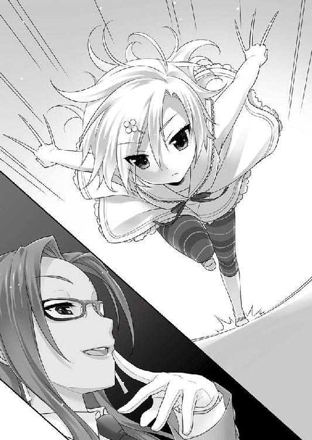
アカハが突き刺さる。
手も足も動かない少女は、頭からコダマの胴に突撃した。
鋭利さはなくとも砲弾じみた一発。その衝撃は背中まで抜ける。
コダマはゴンドラから吹き飛ばされる。身動きできない彼女が致命傷を負わなかったのは、アカハの機能そのものが大きく低下していた幸運によるものだ。
「ああ、」
肉の傷みよりも、刻みつけられた敗北の屈辱に身悶えしながら落ちていく。
「ああああああああああ」
それは、コダマにとって初めての官能だった。
絶望。憎悪。怨嗟......複雑に入り交じった感情が、ｃＳの造られた躰を駆け巡り、絶頂にも似た衝動となって突き抜ける。
「ゆる、さない......わよ、センパァイ───必ず思い知らせてやる」
アカハは、美山の斜面へ消えるコダマを静かに見送る。
限界だ。ゴンドラの屋根にしがみつきながら、身動き一つ出来ない。神経制御で無理をしすぎたせいか、アカハの意識が白く明滅する。
ｃＳとしては、初めての体験だ。少し前、墜落した時も、意識を失ったりしなかった。
「これって、失神......というヤツでしょうか、お兄さん」
ゴンドラの下から誰かが自分を呼んでいるような気がしたが、もうわからない。
深夜。『アンブロシウス』の店舗から、いつも通りの賑やかさが、裏にある実家にも遠い祭り囃子のように聞こえてくる。
閉店時間にはまだ早いが、奥の和風座敷には一條と碧流と叔美が顔を揃えていた。切り盛りはマスターとウシオに任せてあった。
こんな時でも正座を崩さない姉はともかく、叔美は畳の上で猫みたいに丸くなっている。
身体よりも精神が疲弊していた。今夜は一條も疲れを理由に倒れてしまいたかったが、今は僅かな休息に当てられる時間の余裕もない。
無事な帰還───とは言いがたかった。コダマを退けたアカハは深い傷を負った。ｃＳとしてもよほどの消耗なのか、今は奥の部屋で死んだように眠っている。
「二、三日すれば起き上がる。人間とは違うからな」
様態を看た碧流の言い様は冷淡過ぎたが、命には別状ないのだと思えばホッとした。
「あのクソ女、くたばったのかな」
丸くなったまま、叔美がそんなことを言う。
「あの手のクソはゴキブリよりしぶといと相場が決まっている。キチンと頭を潰しておかなかった以上、遅かれ早かれ姿を見せるだろう」
「次に遭ったら、アタシが直々にブチのめす！」
「やめておけ。ｃＳに並の人間が相手になるか。無駄飯ぐらいが減るなら喜ばしいが、怪我人が増えると手間だけ増える」
「......ヨケーなお世話だつーの」
アカハの負傷がよほど腹に据えかねていたらしい。碧流に窘められた叔美は、ｃＳの恐ろしさをよく知っている筈なのに、納得いかない顔でごろりと身体ごとそっぽを向く。
「結局、アカハに迷惑を掛けてしまった」
一條は、壁に疲労の溜まった身体をもたせかける。
そうさせたくなくて、花々梨との取引を躊躇ったのに、これでは同じことだ。
「アレは、自分で遣りたいからやった。お前が気に病む必要はない」
「気にするよ。僕が最初に勝ってれば、アカハは怪我しなくて済んだんだ」
「あの時勝っていたとして、本当に、十行や鷹崎が諦めたと思うか？」
「それは......」
そんな幸福な結末は有り得なかったろう。
一條が「名跡」として認められてしまえばともかく、それまでは付け入る隙がある。ミスターＰは別の手管で新たな罠を仕掛けたに違いない。
大回りしても選択の結果が収束するように、明確なピリオドを打つまでは続く。
敵にもｃＳがいる以上、どこかでアカハが傷ついた可能性は高かった。彼女だけの問題ではない。一條がここへ辿り着く為に、碧流も叔美も危険に身を投じてきた。
そうなるべく選択をしたのは───彼女たち自身だ。
「そうか、僕らしくなかったな」
変わりようのない過去を悔いて、他人の選択を背負えるような気分でいた。そんな自分自身の奢りを恥じた。
千里一條は、振り向かない。
何もかも失って、幾度も堂々巡りのような迷い道と諦観と自棄に囚われかけながら、無意味な後悔をする暇があるなら、前を向いて進むと決めた。
叔美も、碧流も、アカハも、一條が選んだ道を支えようと、彼女たち自身の選択を使ってくれた。
───一條の為にそうしたのだろうか？
そうではないのだ、と思う。
「どこへ行く？」
「やらなくちゃいけないことを、やってくる」
さっきまでの悩影を振り切って、一條は立ち上がった。
別れの際に手渡された番号に、スマホから掛ける。コール三つで相手は出た。
『思ったよりも早かったですね、一條さん』
「力を貸して欲しいんです」
意外そうなのに、不思議と楽しそうに思える声の主は、花々梨だった。『ヒトデナシ』たちの世界で、経験値不足の一條は取り繕ってもド素人だ。少女は、こちらの逡巡ぐらいお見通しだろう。
それがどうした、と思う。勝負とは、持てる手札でやるしかない。むしろ、猶予を与えてくれた、彼女なりの優しさに感謝する。
『その台詞は、もういただきました。それで、一條さんは代わりに何を？』
一度、深呼吸を入れる。
使いたくなかった唯一の手札。アカハや、あるいはウシオに迷惑が掛かってしまう。
「......千里十行は『ヒトデナシ』の仕来りを裏切っている。部外者に秘密を売り渡している」
『ありそうな話ですが、一條さんの言葉だけでは長老たちは動きませんよ』
「あの男は、名跡が欲しくて姉さんの命までも狙いました。それを......犯人に証言してもらえます」
『それが、一條さんの差し出す対価ですか』
ｃＳには千里の『ノウハウ』も関わっている。死すべき運命を覆すことで造られた彼女たちは、存在そのもので裏切りを立証できる。
それは、アカハやウシオを審議の場に引き摺り出して、衆目に晒すという意味でもあった。無数の視線を、企てと野心を、悪意と差別と区別とを磁石のように吸い寄せる。地雷を踏みに行くのと同じ決断を、それでも一條は選び取った。
誰もが自分の人生を選択する。
一條も、碧流も、叔美も、アカハも、ウシオも、花々梨もまた。
選択は、時には誰かを傷つけることさえある。『みんな』が懸けてくれた、千里一條の価値に、どうすれば報えるだろう。
せめて、彼女たちが、これまでの選択を正しかったと胸を張れる自分になろう。
何が起ころうとも、己の、この手で食い止める。悪意も、行き止まりも、臨まぬ結末も、見抜いて、選んで、くぐり抜けて守ってみせられるぐらいには。
決めてしまえば、詰まっていた胸は、風が吹き抜けたように軽かった。
『一利はありますね。それが事実なら、長老たちにとっては虫酸が走るものでしょう。暴いてみせるのは、なるほど痛快です』
弾んだ声に、唇に指先を当ててニンマリと笑う花々梨が思い浮かんだ。
『勘違いしないでください。千里十行が裏切りを働いているのか否かを見極めるのには、手を貸してもいい、ということです』
「ありがとうございます。花々梨さん」
ミスターＰの裏の動きや長老たちとの接点を探るのは、渦中の一條や碧流には難しい。部外者であり、立場も名前もある花々梨の協力が得られなければ手詰まりだった。
これで、相手の優位をひっくり返せる。許したリードを取り戻せる。
あるいは、再戦の前に勝負を決められるかもしれない。願望よりの希望的観測だが。
一條の述べた礼が素直すぎたからか、ぷいとそっぽを向くような気配。
『馴れ合わないでください。証言だけでは不十分。何も出てこなければ、割が合いませんからわたしは手を引きます。その時は───一條さんの敵です』
それでも、やはり嬉しかった。これまでやってきた......何もかもが先に繋がる、『道』が拓けた。
『千里十行を調べる件、多地見花々梨が確かに請け負いました。しかし、時間は掛かります。少なくとも三日か、四日』
十行との再戦は三日後。首尾良くいっても、期限ギリギリだ。
「お願いします。僕もやれるだけやってみますから」
『一條さん、海で命を助けて貰った借り......これで、チャラですよ』
「いや、あれは別に借りとかじゃなくて......」
一條が言いかけたところで、通話は素っ気なく切られてしまった。花々梨にしては、乱暴な切り方が、不思議と耳に残る。
「あとは、僕が何処まで出来るか、だ」
零時ジャストを告げたスマホをしまい込みながら、夜景の星を見上げて思う。
勝とう、今度こそ。
───残された時間は、あと三日。
季節外れな、煌びやかなビーチパラソルと肌も露わなグラマラスなビキニの女たち。
ここは、奥志麻市内では最高級のホテル・グランツが誇る室内プール。
サングラスにハイレグビキニショーツの挑戦的スタイルで、道行く女たちの腰つきを目の保養と眺めている千里十行には、陰謀の首魁に付き物の緊張感の欠片もなかった。
「だから、なーにが問題なのかね？ なーんにも心配はいらないＹＯ！」
「貴方には、喋る前に頭を使うクセを付けるのをお勧めします」
プールサイドの十行と並んで、鷹崎陽春が身を横たえていた。必要十分に鍛えられ、贅肉一つないスマートな四肢は、本来の彼の職ではなくアスリートを連想させる。
「反抗期の子供には何も出来ないＹＯ！ アチラと話はつけたし、準備は万端、ノープロブレムだ！ 古人の言葉を知らないかい？ 『トレジャーは寝て待て』って」
低温で落ち着き払った陽春とは対照的に、十行は軽薄で一々締まりがない。
ひゃひゃひゃっと奇声を発する十行に、プールサイドを行く他の客たちが一瞬ぎょっとして、すぐに目を合わせないようにそそくさと立ち去っていく。あっという間に、二人の周りには人気がなくなったが、「悪事」を語らうには好都合だ。
「私が籠絡をした件はいいとして......十行、御子息に手を出したと聞きましたが？ よくない、極めて。再戦の場を用意した長老たちの面子を潰すことになる。それが、どれほどのリスクになるか、理解していますか」
「判ってるＹＯ！ でもさ、零したミルクはお家に帰らないって言うだろ？」
「貴方という男は............」
つくづくだ───と、陽春にしては珍しく露骨に内心を表して、頭痛が......と言わんばかりにこめかみを指で揉みし抱く。
「とにかく、これ以上騒ぎ立てれば、一転不利になりかねない。御子息は、思ったよりも骨がある。このまま負け犬ではいないでしょうし」
「──マイサンが何だって？」
ウォッチングに夢中な、空っぽの道化じみた男の様子に変化はない。
しかし、一体何が彼の癇に障ったのだろう。陽春は共謀者のニヤけ笑いに、この男らしからぬ感情を見出した。
自分勝手に捨ててきた家族への感傷だろうか。それも否。滲み出るようなこのドス黒い負の感情は、子供のような苛立ちと表現するのが最も適切だ。
陽春は、自分の持ち駒の性質をよく知っていた。
持てる『力』の程とは全く正反対の、酷く未熟で歪な人格の持ち主。だからこそ、御しやすいと考えた。荷担すべく近づいた。
「アレは、ただの反抗期の子供だよ。面白い素材ではあるがね。役に立ててやってもいいさ。アレがあれば、最初の一......いや、その先に届くかもしれないんだ。素敵だろ？」
「思いつきやノリで動いていると、足下を掬われますよ？」
「足下？ マイフレンドは知ってるかい。世の中で勝者になる条件って奴を」
「いえ、物知らずなものでして。宜しければ後生の為に御教授願えますか」
「どんな人間だろうと、運命には逆らえない。本当の勝利というのはね、運ばれてくるものなのさ！ 貴重な果実を手に出来るのは、それ自体が特別な人間。凡人は、どんなに足掻いたところで、本当の勝利に一歩も近づけないんだＹＯ！」
「............御高説、感謝します」
またしても、他人の神経を逆なでするように哄笑する相手へ、陽春はそれ以上の無駄話を続けるのを止めた。
「......ともかく、十行。貴方の大事な愛玩動物......植物でしたっけ？ これ以上余計なことをしでかさないよう、よく躾けておいてください」
「だってさ、コダマ」
プールサイドに似合わないスーツ姿で傍に控えていたコダマは、泣き崩れながら十行の足にすがりついた。
「そんな、十行様ぁん！ 私は、何もかも全部、十行様ぁんの為に......身の程知らずのアイツらに思い知らせてやろうとしただけで───」
「ああ、もう！ 余計なことは、しなくていいんだＹＯ！ そんなことしなくても、勝つべき者が勝つべくして勝つんだから」
マイ主は、それ以上はコダマに目もくれず、鑑賞会を再開した。
「あのボウヤ、千里一條......よくも、私の愛を邪魔しやがって......っ」
離席する協力者の男を、己の主と同様に一瞥もせず、コダマは涙目を拭っていたハンカチをヒステリックに噛み締めて引き裂く。
型遅れの不良品に受けた肉体の痛手より、よほど深く熱く正気を失いそうな程に彼女を苦しめるのは、己の愛を汚された心の屈辱だ。
ｃＳのそれを『心』と呼ぶべきか。
十行が聞けば、腹を抱えて大笑いするかもしれないが、コダマにとっては、どちらでも良いことだ。心であろうと、彼女の霊芯に刻印された命令であろうと。
「思い知らさなければならないっ」
我が身を焦がす情熱を、恋慕を、執着を、愛を、愛と愛と愛を、必ず理解させてやる。
「ボウヤ、愉しみにしていなさい......」
己を焦がす痛みに魘されるように、熱い舌が朱い唇を舐めた。
───あなたは、四国四県の名前とその配置を正確に知っているだろうか？
Ｔ県は、四国における関西方面への窓口であり、県内人口は七〇万余。
古くから、狸が人を化かすという伝承が多く、現在も奥志麻市のそこここに狸を奉る祠がある。嘘か真か、かの「大蛇伝説」でお馴染みの盾山をはじめ、県内には不可思議なスポットも数多い。
一方で、日本三大祭りの一つ、「天河踊り」の土地として知られているものの、例えば遠野のような、あるいは東北の一地方のような、古くからの伝承色濃い風土が人口に膾炙することは多くなかった。
息を殺すように。潜んでいるように。見られることを拒むように。
したがって観光客の集まる八月の一頃を除けば、ごく静かな地方である。
......のだが、ここ数年ばかりでは、奇妙な出で立ちの者たちが、古町川沿いの公園を中心にした一帯に集まる期間があった。
ある者は、煌びやかな原色に輝く西洋風の鎧に身を固め、祖国の自由を願う聖女。
ある者は、漆黒のボディスーツと深紅のゴーグルで肌を見せぬ、凶猛なりし国家の猟犬。
またある者は、純白と蒼白のフリルで着飾った、花の如き可憐な魔法少女。
「なンだ、こっちでもやってンのか？」
叔美は興味津々という顔で、古町川沿いの公園に集まっている、古代の剣士やゲームのヒーローやアニメの登場人物たちを見やっていた。
「『マチ☆ダイスキ』だね。普通のイベントだよ。いや、普通......なのか？」
一條は、自分の言葉にちょっぴり首を傾げたりした。
そもそも一條は、「普通」というものがイマイチよくわからないのだし。
奥志麻では、近年五月や十月の連休になると、駅前を中心とした特定のイベントエリアに、「アニメのマチ」「マチ☆ダイスキへようこそ」といった幟が目立つようになる。この祭りの開催期間中は、各所で様々なイベントが催され、全国からのべ数万人が奥志麻市に訪れるという。
一時的に人口密度が急増した奥志麻駅周辺は、歩道も人通りで混雑している。
奥志麻に戻ってからこの光景とかち合うのが二度目な一條は、叔美よりも幾らかは場慣れしており、人混みにぶつかって迷惑にならないよう、自転車を降りて押して歩く。
「で、何であンな恰好してンだ？」
「あれは『コスプレ』といって......って、僕も詳しくはないんだけど......」
コスプレという文化があるのは知っているが、何故と訊ねられても、少なくとも今の一條にはよくわからなかった。登山家に山に挑む理由を問うようなものかもしれない。
異世界かアニメに迷い込んでしまったような小世界。畏れを知らない愛戦士・真田も、あの混沌の中に混じっているのだろうか。
叔美はというと、お祭りらしい賑やかな空気に当てられたのか、落ち着きなく走り回っていた。一抱えもある大きな銃を抱えた未来忍者のところへ行って、ジロジロとぶしつけに見回す。人見知りする猫のように、ちょっぴり距離を取っているのが微笑ましい。
見られるのに馴れているのか、未来忍者が叔美に向かってポーズを取ると、回れ右で走って戻ってきた。
「あー、ビックリした！ いきなり武器構えたぞ、アイツ！ やる気か？」
お祭りの空気を身近で嗅げるのが嬉しいのか、追い返されたのに叔美は笑っている。
ついでに、並んでいる屋台でアイスクリームを買ってきて、片方を一條に差し出した。
「オゴリだから、食えよ」
「叔美の!? 珍しいね」
「アタシは、これでも一人前の働くウーメンだからな」
叔美の行動に途惑いながら、しゃくりと一口。爽やかな柑橘系──スダチだ。
奥志麻では、スダチ味の商品開発に余念がない。十月のアイスは些か季節外れだが、オーバーヒート気味の頭を冷やす役には立ってくれる。
食べ終えて、遅まきながら思い至って、一條は真顔で訊ねた。
「どうしてわざわざ、着いてきたんだ？」
「護衛だよ、ご・え・い。決まってンだろ？」
さも当然という返事をされた。
閑静な奥志麻の都心を賑わせる『マチ☆ダイスキ』が絶賛開催中の裏側で、もう一つの、一條にとってはより重大な祭りが執り行われる。
『真知廻』───
開催期間はどちらも三日間。幸か不幸か、偶然の一致で、表と裏で祭りの日取りは重なった。単純に暦の上での都合なのだろうが。
この三日間、『アンブロシウス』は昼間も営業している。だが、働き手筆頭で男手である一條は、昼も夜も「かっぱぎシフト（碧流命名）」から外されていた。本来、猫の手も借りたい状況下。まだ回復していないアカハと計二人分が欠けてしまった労働力分、ブラックオーナーたる碧流は、久留美やウシオや叔美ら哀しき兎スレイブたちを馬車馬のように酷使して埋め合わせている。
あの碧流が一條をフリーにしたのは、十行との対決に備えさせる為だ。
───他人の選択視を消す『力』。
人生を操るに等しい『力』を打倒する方法に、先日の敗北からずっと頭を悩ませていたが、突破口は未だ拓けていない。
タイム・リミットはもう目の前。自転車でぶらりと外へ出たのも、一人で考えたかったからだ。叔美が付いてきてしまったのだが。
「また、あのクソ女が襲ってこないとも限らないだろ。一條だけだと心配だからな」
心遣いは嬉しい。嬉しいのだが、実際にコダマに襲撃されたら、叔美が一緒でも結果は大差ないだろう。アカハが身を張って頑張ってくれたおかげで、手傷を負ったコダマはしばらくは動けないだろう。
「ンで、クソの大本をぶちのめす算段はついたのかよ」
「..................ある」
「おおっ、あるのか。じゃあ！」
「いや..................」
「どっちなンだよ!!」
「..................手掛かりというか......引っ掛かりというか............」
煮え切らないのは自分でも腹立たしいが、一條としては偽りない現状だ。
十行の『力』にも付け入る隙はある、と証明できた。成し得た事実は、一握りの名も知らぬ種だ。自分の中に蒔かれて、あと少しで勝利へ続く選択として芽吹こうとしていると、漠然と感じる。
問題は、その「少し」が、星と星の距離のように無限遠に感じられること。
見えるモノと見えないモノの差は、ほんの僅かなのに越えがたい。それをこそ「特別」と呼ぶのだとすれば、『本』が見えるのを除けば、至って平凡な高校生の自分に残りの距離を踏破できるか、途端に不安になってしまう。
「頼りねーな。アタシがオゴってやったンだぞ。しっかりしろよ。一條が負けたら、全部オジャンなンだろ？」
「───負けないよ」
そこだけは、キッパリと言い切った。
勝ち目が見えなくても、懸けてくれた少女たちが胸を張れる自分になろうと決めたのだ。
だから、やるべきことはわかっている。
「よーし、約束だぞ。ぶちのめせ」
「うん、約束だ」
言葉にしたせいか、息の詰まりそうだった気分も幾らか晴れた。
「これは......もうちょっと、なのか？」
「なンか言ったか？」
「......ありがとう、ってことだよ」
「え、あー、まあな。アタシ、護衛だからな！」
照れくさいのか、クネクネしていた。
正直、護衛としてはどうなのかだが、一條はやっぱり感謝する。
ついさっきまで星のように遠かったまだ見ぬ何かを、不思議と近くに思う。
それは、隣で屈託なく伸びをしている猫のような少女のおかげだ。
辺りの町並みはとっくに静かになっていた。『マチ☆ダイスキ』の開催スペースがある通りから、一筋でも外れると、そこは全くの別世界。いやあちらこそ異世界なのだから、人通りの疎らな普段の奥志麻である。
「じゃあ、急いで帰ろう」
「突然、なンだよ。気まぐれなヤツ」
「叔美のが移ったのかもね」
じわりとした熱量が溢れる。一つ、思いついたことがあった。一刻も早く帰って、思いつきが本当に通用するものかどうか、確かめてみたい。
「よーし！ 何だかよくわかンないけど、飛ばしてけ！」
───陽が落ちる。闇が落ちる。眠りに落ちる。
───夜とは、人目を憚る者たちが闊歩する時間。
夜歩く者たちの目も届かぬ場所で、甲高い電子音が鳴る。
『ご機嫌よう。先日はわざわざどうも。......ふむ、何かありましたか？』
「べっつにー。ま、神経の細いお友達を持つと苦労しちゃうってだけだＹＯ！ 脳細胞の無駄遣いだね。人生なんて、もっと気楽に遊べばいいのに！」
『......ところで、彼が当日の勝負の方法について、申し入れをしてきたそうですが、そちらの耳には？』
「まだ！ しかし、マイサンも神経が細いなあ！ いいとも、王者としてはその程度は受けて立ってやらないとね！ どっちにしたって───」
『こちらは、ほぼ予定通りです。手回しに問題はなく』
「当日を愉しみにさせてもらうＹＯ！」
『くれぐれも、鷹崎さんにはよろしく』
「伝えておくとも、マイフレンドだからね！」
その祭事は、古くから『真知廻』と呼ばれていた。
普段から人目を憚って生きる『ヒトデナシ』たちが、人目を避けて夜に行う祭り。
祭司として選ばれた者が、二夜を掛けて土地の長たちを訪ねて歩く。遠方から来た者たちは、これらの長の元に客人として遇されており、共に出迎える。一廻りを終えた三夜目に、今度は廻られた長たちが集まって『交衣』と呼ばれる会合を開き、帰ってくる祭司を迎え入れて、三夜続いた祭りも終わる。
廻るから『真知廻』なのか、『真知廻』だから廻るのか。
廻ることで幸を分けていく、とも伝えられている。訪ねる順序や訪ねた際の作法には厳しい仕来りがあり、襟の長さが一センチ違っても老人たちが口うるさい。今時徒歩で行うのも、由緒正しい仕来りの一つだ。
もっとも、古来の仕来りでほぼ間違いなく受け継がれていると断言できるのは半分程度。残りは、失伝したものを取り繕ったり、時代の某かで変容してしまったりしているのだが。
今年の祭司役は千里家であり、一條である。
予定では、名跡を継いだ一條のデビュー戦を兼ねており、最後の「交衣」で長老たちから承認を受ける手はずになっていた。今となっては先行き全く不透明だが。
「腹立たしい、とにかく腹立たしい！」
碧流は終始不機嫌だったものの、鉄壁の外面は維持してみせた。一條も驚きを通り越して開いた口が塞がらない、見事な猫かぶりだ。
もっとも、姉に気を回している余裕は、実のところなかった。台無しになったお披露目の夜よりも輪を掛けて小難しい仕来りの群れとの対決で、緊張に胃が裏返っている。
碧流は休んでいろと言ったものの、昼の部の『アンブロシウス』を手伝い、夜に廻るという二足の草鞋を半ば強引に履くことにしたのは、自分一人で何もせずに惚けているのが、かえって落ち着かないからだ。
一夜目は、肩どころか身体中強張っていたが、かろうじて乗り越えた。
二夜目は、幾らか馴れたからか気も楽になったが、油断したのか最後の最後に詰まらないことでトチりかけて、碧流を大いに慌てさせた。大事に至らず誤魔化しきったのは、気まぐれな同居人である『本』のおかげだ。
問題は、一夜目に市街地から外れた山中にある鷹崎家を苦労して廻った時。陽春の姿こそあったものの、客として同席している筈のミスターＰが見当たらなかったこと。結局、二日続けて全く姿を見せない。不気味だった。
そして、運命の最終日───
昼の部を終え、客足の絶えた『アンブロシウス』の店内で、一條は準備を終えていた。
『真知廻』の最後を飾る三夜目の『交衣』では、例年なら小難しい話はしない。要するに元気の余った老人たちが羽目を外すただの宴会なのだが、今回は違う。
一條と十行、どちらが千里の「名跡」を引き継ぐに相応しいかの評決が行われる。
お披露目と同じ正装で、準備万端整えた一條は、碧流が頼んだハイヤーが来るのを待っていた。念には念を入れて、一足早く会場に入っておくつもりなのだ。
「一條、キメキメですね！」
二度目である恰好に、久瑠美は大はしゃぎする。今日日、和服の正装など大きな冠婚葬祭でもなければほとんど見かけないので、珍しい。
「こういう一條も格好良いです！ 久留美、意外な発見」
「意外、かな？ やっぱり......」
「和服が似合うとは思いませんでした。んー、イケる！」
「私の弟だから、当然だ」
このところ旗色の悪い人生に続けてハマりこんでいた碧流も、ここぞとばかりに自慢げだった。
「叔美、みんなと一緒に留守番よろしく」
「おう。任せろ！ 一條があのクソをぶちのめす場面をじかで見られないのは残念だけどな」
「お任せアレ！ イチジョーとネーチャンが居なくても、『アンブロシウス』はこの久留美がキチンと切り盛りしますから！」
今夜の会合は部外者厳禁。同行できる人数も厳しく限られている。よって、叔美たちは、『アンブロシウス』を手伝いながら、ことが無事に終わるのを待つ。どう考えても無事に終わりそうにないのは、ともかくとして。
「切り盛りするのは、お前ではなくマスターだろう」
飛び跳ねながら敬礼する久留美に、毒舌で釘を刺す付き添い。
「まあまあ......それはそれとして！」
「邪魔にならないように手伝っていろ。帰ってきてから働きぶりは確認する。役立たずの無駄飯ぐらいには死を!!」
「ざけンんな、オニチク！」
「おおぅ、ネーチャン、超キビシーっす!!」
被雇用者たちが非難の声をあげるが、ブラックな社長は気にもとめない。
「............お金の分の命令は果たすわ。今日は店のお手伝い」
ウシオはといえば、店の隅でしずしずと命じられた準備を片付けていた。
「そう、お前は金という鎖で雇われた奴隷。黙って命令に従っていればいいのだ！」
大上段に無体を振り翳すオーナーへ、一條は久留美に聞こえないよう、顔を寄せて小声で囁く。
「姉さん。この二日間は、正直拍子抜けなほど平穏だったけど」
「奴の切り札がアカハと相打ちになったから、人前に出てくるのを避けたのかもな。ピーマン頭のクセに、妙に鼻だけは利く男だ。あの時も───」
どんな記憶が脳裏を過ぎったのか、軋らせる歯が獰猛な音を立てる。
「また襲ってくるかな？」
「目的が『名跡』なら、これ以上長老の顔を潰す真似はしない」
「じゃあ、このまま何もなく本番？」
「だが、私は奴を信じている。奴はネジが一〇本はまとめて飛んでいる!! 奴の辞書には、『誇り』や『矜持』や『正々堂々』という日本語は欠片もないのだ！」
仮にも血の繋がっている相手に、酷い言い分もあったものだ。
碧流が鼻息を荒くしていると、ハイヤーが店の前に停車した。
これはこれで助かった、と思った一條だが、ハイヤーは乗客を店先に降ろすと、「あれ」と思う間もなくビジネスライクに去ってしまう。
「まあ、立派なお姿ですね」
上品な振る舞いで、店の古い扉を音もなく開けた乗客に見覚えがあった。
「か......」
「花々梨!? 日の高い内から雌犬が何をしにきた！」
コンマ三秒で一條を遮って、碧流が怨敵に反応した。イヤそうな、というよりも、この女今すぐ●ねばいいのに、と露骨に思っている顔で割って入って牽制する。
「この店の敷居を跨ぐなら、お前の席は冷蔵庫の後ろの隙間だ！ お台所の敵にはピッタリだな、はははっ」
「そんなに高笑いしてると、また墓穴を掘ってもしらねーぞ」
叔美に言われて、数日前の美山山頂での負け犬ムードを脳内リバイバルしたらしい。
「フン......で、何の用だ？」
「強敵に立ち向かわんとする友人の応援に......なんて訳はありませんから、ご心配なく」
「お前が、私の弟の、友人面を、するな!!」
三秒前の冷静さを投げ捨てて、協力を頼んでいるという不利な立場も忘れて噛みつく碧流だが、不思議なことに反撃がこなかった。黙っている花々梨を、それこそお台所の敵を見るような目つきで睨む。
「......どうしたんだ、悪いモノでも拾い食いして脳が膿んだのか？」
「残念ながら、わたし、碧流と違ってお金持ちのお嬢さんですので」
素っ気なく言葉にしてから、花々梨はクルリと一條に向き直る。
思い詰めたようなその表情で、どういう報せかは聞く前からわかった。
「花々梨さん、例の件ですか？」
「単刀直入に言います。手応えは有りました。彼は黒です、多分......」
「多分......ですか」
どこかでよく聞くフレーズだ、と思わなくもない。
「ただ、証拠が、その......。予想以上に難航して」
予想よりも更に悪い報せで、腹の辺りが冷たくなった。
一條が食い下がり、再戦する羽目になったのは、ミスターＰや鷹崎にとっても予想外だったろう。慌てたミスターＰと長老たちは、事後の調整の為にどこかで『接触』する。
花々梨に頼んだのは、その確認だ。裏取引の動かぬ証拠を押さえられれば、一條の手札と併せて、再戦の前にミスターＰを追い詰めることも出来たかもしれない。
「仕方ないですよ。花々梨さんは十分頑張ってくれましたから」
「いいえ！ 引き受けた以上は、わたしの責任ですから───」
少女の突然の勢いに、一條は途惑ってしまった。花々梨がわざわざ自分で足を運んできたのは、彼女なりの誠意と謝罪なのだろう。
自分の力が及ばなかった事実を恥じている少女の矜持は、まるで宝石のように眩しい。きっとそれが、多地見花々梨という少女の在り方なのだろうと思うと、とんでもない窮地なのに何故か頬が緩みかけた。
「言い訳しようと要は失敗だ。証拠一つ揃えられないとは、この役立たずめ。犬の方が番犬になるだけまだマシだな」
そして、宿敵の落ち度に、碧流はここぞとばかりに笠に着たりした。
当然ながら、花々梨もマウントを取られたままではいない。
「......さっきから大人しく聞いていれば。証拠がないわけでは......じゃなくて！ 一條さんからの非難であれば甘んじて受けますが、部外者のお猿さんにとやかく言われる筋合いは、一ミクロンもありません！」
「誰が部外者だ！ 姉と弟といえば一心同体も同然！ そうか、貴様、本当はあのクズと連んで一條を罠に掛ける腹づもりなのか」
「だ、誰がそんな......ブラコンも過ぎると脳までやられてしまうんですね！ 迷惑しか掛けない血縁よりも、手助けできる他人の美少女の方が、よっぽどマシです」
「あの、二人とも、もう少し言葉を選ぶというか......」
火の点いたダイナマイトに近づく気分で宥めようとしたが、どっちも聞いちゃいない。
「私以外に、美少女が何処にいるんだ!?」
「それはもう、碧流でないことは確かですね!!」
犬と猿よりも激しく火花が飛び散る。一條も尻込みした死地に、呆れ顔で踏み入ったのは叔美だ。
「テメーら、今はそンな場合じゃねーだろ。ダメならダメで、次の手考えないと」
叔美は、見た目や行動とは違って、決して本能だけで生きている少女ではない。理路整然とした発言も出来る。だが、人の話を聞かない二人に通じるだろうか。
あにはからんや。燃える少女たちは、冷水を浴びたように落ち着きを取り戻した。
「すごい、奇跡だ......」
と、一條は目の前の光景に感激したりした。
「......まさか、無駄飯ぐらい如きに諭されてしまうとは。この私の人生の最大の汚点」
「......わたし、そんなにダメになっていたんですね。生き方を考え直さないと」
「ンだとテメエら、文句があるなら勝負してやるぞ!!」
暴言に爆発する叔美を、今度こそ一條が羽交い締めに食い止める。
「どうどう、落ち着いて。今はそんな場合じゃないんだから」
「まったく、これだから無駄飯ぐらいは」
「世間知らずなおチビさんにも、困ってしまいますね」
「テメーら、後で絶対に思い知らせてやるからな......」
プリプリしている叔美を捕まえたまま、一條が堅い表情になる。
「それで、姉さん。これは───」
「『多分、黒』か。『多分』など！ そんな言葉には、これっぽっちも意味がない」
「いや姉さん、よく『多分』を使ってるん......」
「いいか一條、世の中には、悪い『多分』と良い『多分』がある。このズ×タのは、悪い多分。私のは良い多分だ」
「何を言っているのかよくわからないけど、どっちも一緒なのは、よくわかったよ」
「碧流の『多分』ほど、当てにならないものはありませんから」
弟と憎いアイツの諫言を華麗にスルーして、新兵を謁見する軍曹のように背筋を伸ばした碧流は、従業員一同の前に立った。
「整列！ ただ今より、緊急会議を始める。花々梨が失敗した穴を我々が埋めなければならない。花々梨が失敗した以上、ヤツとの勝負でグウの音も出ないほど圧勝しなければならない。その為の手段......花々梨の失敗した代わりにクズをぶちのめすナイス・アイデアを求める！ 全員出せ」
「......一々失敗を強調するなんて、さもしいですね」
花々梨が付けた文句も優雅にスルーである。
「はい、軍曹どの！」
「よし、久留美三等兵！」
「えー、三等ですか......じゃなくて。自分、今現在、何がどうなってるのか、よくわかってないので、説明を......」
碧流はクワッと目を見開いた。
「却下だ。いいんだよ、細かいことは。いいから、卑劣で邪悪で憎いアンチクショウをぶっ飛ばす為の手段を考えろ！」
「はい！」
根っこが体育会系の久留美がビシッと見事な姿勢で挙手した。
「再び久留美！」
「憎悪の連鎖は哀しいのです。ここは、平和的にスポーツで汗を流して、心を解きほぐして友情を結ぶ作戦を提案します！」
「却下！ そんな綺麗事は欲しくない。動いているヤツは敵だ。動かなくなったヤツも敵だ。殺せ、殺せ、殺せ！ 確実に息の根を止めるのだ！」
「あの、姉さん、そういう話じゃなかったような......」
「そこ、ウシオ！」
強引に集合させられたウシオが挙手していた。
「面倒なことは考えたくないから、決まったら教えて。それに従うわ」
「却下だ！ 無駄口を叩いている暇があったら、その軽い脳みそを少しは使え！」
「おい、オニチク」
「叔美！」
「つーか、あのクズに何かさせたら終わりだろ。何もさせねーしかないと思うぞ」
「弱点を突く、例の手か」
やっと、まともな意見が出た。
集中を必要とする───という、千里の『力』の、最も単純な弱味を突く。しかし、その手はお披露目の際にも使った。残念な顛末は、一條も碧流から聞かされている。
「姉さん。それは、失敗したんじゃ」
「要は、邪魔者がいなくなればいいのだ。───『最終兵器』を使う」
「『秘密兵器』の次は『最終兵器』か......」
学校では優等生のクセに、意外と妙なフレーズが好きな姉だった。
ちらりと、無表情というよりも単に何も考えていなさそうな元秘密兵器を見やる。嫌な予感しかしないが、他の手段がないのも事実。『本』も現れない。
「わかった..................姉さん、もうそれでいこう」
「足りないところは、気合いで押し切れ！ 魂の輝きが、きっとお前を強くする」
一條の手を握った姉が、自分の決意で瞳を燃やしていた。
綺麗っぽい台詞で背中を押されても、現実は困難だ。なまじ見えるだけに、帽子から鳩を出すような見事な名案はないとわかってしまう。ある意味辛いが、くじけている時間も今は惜しい。
「勝つよ、絶対に」
叔美にも約束した言葉を、繰り返す。
花々梨が、楚々とした花のようにピンと背筋を伸ばしていた。
「時間切れですね。わたし、この先の協力は出来ません。今の時点では、一條さんは千里の『名跡』候補でしかありませんから。ことが決まるまでは、中立だと思ってください」
「.........ありがとうございます」
「お礼、言われるようなことはありませんよ」
『本』に助言されるまでもなく、それが花々梨の好意だとわかった。
多地見家の一員としては、負け馬には乗れない。しかし、ミスターＰにもつかない、と言ってくれている。
「間に合わなかったけど、花々梨さんが懸けてくれたから、僕は自分に勝ち目があるって自信が持てます」
碧流は、花々梨と犬猿の仲だ。姉が「強敵」として認めている女性だから、彼女のことをよく知らなくても、彼女の出した答えを信じられた。
千里一條には、多地見花々梨が賭けるに足る勝機がまだ残っている、と。
予想もしなかった答えにほんの一瞬惚けてから、何か告げようとした花々梨の足を、碧流が黙って踏んづけた。思い切り。
「あ、こんな所に『Ｇ』が」
「掃除が行き届いてないんじゃないですか!?」
「何だとっ!! ウチの店には、害虫など出ないっ!!」
女二人が互いの顔を見合わせて、夏の向日葵に似た笑顔を咲かせ合う。
とっくにカウンターの裏へ避難していた叔美と久留美が、暴れても食器が落ちないように押さえるまでもう一秒。薄っぺらなにこやかムードが、ぶち殺しますやってみろに切り替わるまで、更に一秒。あと一秒でダブルクロスカウンターが炸裂する、というところで、今度こそ、予定のハイヤーが到着した。
「命拾いしたな、花々梨」
「こちらの台詞です、碧流」
騒いで少し乱れた裾を直してから、一條は忘れ物がないのを最終点検する。
「『最終兵器』を用意する。少し待て」
碧流が踵を返したのと同時に、『本』が自動的に現れた。
２１１─■■■■
到着したハイヤーの運転手が、『アンブロシウス』の扉を開けてキミたちに小さく会釈した。
先ほど花々梨を乗せてきたのと同じ会社のタクシーが、店の前に横付けされている。年季が入っているようだが、塗装し直されたボディは新車のようにピカピカの黒。ボンネットとトランクカバーには、独特の字体で描かれた神秘的名称と、派手なカラーリングの美少女が描かれている。
なるほど、これぞ世に言う「イタ・カー」というものらしい。いや、イベントの期間中のみ運営されるこれは「イタ・タクシー」と呼ぶのが適切だろう。車両であると同時に、宗教的情熱を集める美少女の姿を戴いた、走る祭壇なのだ。
さあ、これに乗って出発だ。緊張しているか、トイレに行き忘れていないか。
忘れ物はない。といっても、碧流が『最終兵器』を取りに行っている。危険な香りのする名前だとは思わないか。丁寧に扱った方がいいかもしれない。
他には大した物を持っていく訳じゃないが、しかし手ぶらというのも寂しい。ここは少し頭を使って、持っていくものを考えてみよう。
どれも役に立つが、リストにある品物から一つを選んでくれ。全部がいい？ 残念だったな。昔から、身の丈に合わない欲はかえって毒になるものだ。キミは、そんなに馬鹿じゃないだろう。
１．水筒／２．着替え一式／３．目薬／４．メロンパン／５．マイナス・ドライバー
二つ以上持っていこうとすると、全て消えてしまうので注意すること。
さて、持っていくものを決めたなら、次は..................
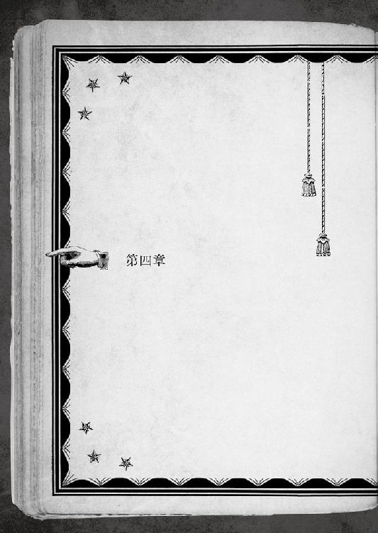
酷い話と言うべきか、一條が目覚めて最初に嗅いだのは、咽せてしまいそうな埃と錆の臭いだった。
「......やだなあ、会場がこんな場所だなんて。せっかくの一張羅が台無しだ」
朦朧として鈍った頭が、泡が空へ上るようにゆっくりと覚醒する。
「ここは──────」
どう見ても、古くて大きな倉庫の中だった。
しばらく思案してから、一條は横になったまま目を閉じる。ゆっくりと一〇数えてから、クワッと見開いた。同じ風景が待っていた。
「いやあああああ、やっぱり倉庫の中だあ!! ここは誰？ 僕は何処？ 会場は!?」
人間は理解できない状況に遭遇すると取り乱してしまう。例えば、ある日突然『本』が目の前に浮かんでいるのを発見する、とか。
一條は混乱した。錯乱した。パニックになった。
「そうか！ これは夢だ。勝負に備えて緊張しすぎて、よくない夢を見てるんだよ」
我に返り、頬を抓って自説を証明しようとしたが───出来なかった。
これまた酷い話と言うべきか、手錠的なもので後ろ手に拘束されていたからだ。
「..................酷い話どころジャねー！ どうなってるんだ、これ！ 倉庫スタートとか、脱出ゲームか!?」
ちなみに、「脱出ゲーム」とは、閉じ込められた密室や洋館からの脱出をテーマにしたジャンルのゲームだ。大概の場合、脱出にしくじるとあっさり死亡したりする。
「考えろ、考えるんだ、一條！ どうしてこんな羽目になったんだ!?」
───記憶を反芻する。
叔美と久留美に見送られながら、やってきたタクシーに乗り込んだ。
出る寸前、慌てて戻ってきた碧流が、凶悪な笑顔で、後ろのトランクへ大きなキャリーバッグを乱暴にぶち込んだ。
「車から降りる時は、アレを忘れずに持っていくんだぞ」
言い含められたが、よくわからないまま出発した。
少しばかり走った後、土地勘があるとはいえない一條も「あれ、進んでいる方角を間違っているんじゃないのか？」と思ったところで、意識が途絶えた。
「そして、目覚めたらこの有様......何それ、まさか......拉致監禁とか？ 冗談じゃない！ 今夜は大事な......こんな事してる暇ないのに、くそ......っ」
芋虫のようにジタバタと足掻く。起き上がるのは難しい。それでも、ゴロゴロと転がり廻ったおかげで、五メートル先に、手荷物代わりに持ってきた愛用のバックパックが無造作に捨てられているのを発見した。中のスマホは無事だろうか？ 新型で高かったのだ。
「今はそれどころじゃないって。えっと、怪我は......ないみたいだな」
多少は頭が冷えたので、小さな良かった探しに成功した。嬉しい。
普段は、根っこのところで危機感の足りていない一條も、この状況が切羽詰まったものなのは肌で感じる。
「一体誰が、何のつもりで......こんな真似を？」
何にもましてその点が疑問だが、心当たりはなくもない。というか、あるというか、他にいるわけネーというか......それでも、まさかと思える相手は。
だが、思考に脳のリソースを割けるのもそこまでだった。
ここに灯りはないが、高い採光窓から太陽光が入るので様子を窺うに問題はない。少なくとも今までは。己が顔に掛かる外の陽が、ジリジリと傾き出しているのだ。
ぞっと背筋が凍りかける。
このままでは、今夜の『交衣』に間に合わない。「普通」にも疎いが、『ヒトデナシ』の常識にも詳しくない一條でも、それが極めてマズい立場に自分たちを追い込むだろうと解らないほど察しが悪くはなかった。
窓から見える空の色から判断して、今は一六時～一七時。空腹具合を考えれば、意識を失っていたのは、ほんの二、三時間というところ。決戦の場である『交衣』は日没と同時に始まるから、だいたい十八時前後。
つまり、タイムリミットは、精々一～二時間だ。
「ああああ!! 早く逃げ出さないと......じゃなくて、落ち着け焦るな慎重にしろぉ!!」
つい取り乱しそうになった自分を、かつてない真剣さで必死に宥める。
深呼吸してから、念の為に拘束を解けるかもがいてみるが、筋肉で手錠を引き千切れるような、人間離れではない。
この状況下でも『本』が自動的に現れる様子はなかった。
「......下手に暴れてもダメってことだな。ただ暴れても意味はない。考えて、見極めるんだ。今の僕に何が出来るのか」
出来る何かの選択視を幾つも繋げていければ、脱出という『顛末』に通じた道にも辿り着ける筈だ。
......道が続いていれば、だが。
「と、とにかく、姉さんは、もう会場に到着してる。僕がいないと判ったら、状況を察して何か行動を起こしてくれる」
訪れるかもしれない好機を逃がさないよう、今の自分に出来ることはやっておかなければならない。
「でも本当に.........一体誰が、何のつもりで、こんな真似を？」
先の疑問に戻ってきた一條に応えるように、『本』が自動的に現れた。
６４８─■■■■
何処とも知れぬ倉庫に囚■■の身だ。為す術もなくのたうつばかり。
そんなキミに嘲うような鋭い声が突き刺さった。一■何者か。何者だとしても、こんな状況で放置されたまま時間が過ぎてい■よりは前向きな展開が期待できる。
「誰がも何も......そんなの決まってるでしょう、ボ・ウ・ヤ」
扉の開く音が重なる。キミの顔■、逆光で長身の女の影が落ちる。
何たることか。予想通りで予想外の相手だ。背後には、濃い色のスーツ■岩の塊みたいな体格の、どこを取っても荒事向きという面構えの数人の男を引き連れているぞ。
「────────コダマ」
間近までやってきた相手の顔に、呆気に取られたように目を見開く。
「あらあら、口の利き方がわかってないのねえ。『コダマ様ぁん』とお呼びなさい！」
一蹴。倒れたままの一條の頭をブーツが荒々しく踏みつける。
ｃＳにだってぶん殴られた経験はあるが、それとは別種の獰猛さに晒されながら、咄嗟に考えたのは「ヒールじゃなくてよかった」である。
（......危機感足りてないんじゃない？）
以前、三輪教諭にしたり顔で言われた指摘に、我ながら反論しがたくなってきて、何というか不本意だった。
「ちょっと、待て！ 本当にお前たちの仕業なのか！ 僕を誘拐した？ マジですか？」
「ボウヤ、十行様ぁんの血を引いてるクセに、鈍いのね」
「いや、アイツもそんなに鋭いタイプじゃないんじゃ......」
「いいかしら？ この状況を鑑みて、私以外の誰が犯人だっていうの？」
首謀者に踏まれながらドヤ顔で自慢げに諭された。もの凄く不本意だ。
「そ、それじゃあ、聞くけど......どういうつもりだ、こんな真似をして！ さっさと僕を解放した方がいいぞ！」
怯まずに食って掛かる。叔美やアカハたちの頑張りを、こんな卑劣なやり口で踏みにじる相手への怒りがあった。必ず勝つと約束をしたのだ。こんなところで、港の魚市場のお魚よろしく、床に転がされている場合じゃない。
「それって、命令？ ボウヤ、誰に命令してるの？ 私に命令できるのは、十行様ぁんだけ。自分の立場、わかってるのかしら？」
「お前こそ、ミスターＰ......じゃなくて、アイツの立場が悪くなるぞ。忠告してやってるのがわからないのか。長老たちを敵に回したら」
この脅しがどれほどの効果を持つのか。一條に実感は薄いが、碧流や花々梨の話からすれば、十分な警告になるだろう。
ミスターＰたちが目的を遂げるには、長老との敵対は避ける必要がある。正直それがあるから、直接危害を加えるような真似はしでかさないだろうと油断していた。碧流は警戒していたものの、拉致監禁は予想外に違いない。
「───回したら、でしょ？」
あっさり風味の言い回しがよく頭に入ってこない。
場の状況のＴＰＯを無視しすぎていて、脳に染み込んでくるまで、時計の長針が一巡りする程の時間を要した。
口の中がイヤに渇いて、ごくりっと意味もなく自分の喉が鳴る音を聞く。
「えと......その、僕......後で、絶対、長老たちに言いつけますけど」
「後があれば、ね」
肩を竦めるような軽い物言い。何とも言えない、ドロドロとした沈黙が倉庫に漂う。
コダマ以外は誰も何も口を開かなかった。むしろ、開きたくなかった。
「───ボウヤ、『死人に口なし』って諺、知ってるかしら？」
頭を踏みつけてく■ている踵に、グリグリと体重が掛かる。サディスティックに吊り上げられた唇は、ぞっとするほど官能的だ。独立した蛇を思わせる紅い舌が、チロリと舌舐めずりを■た。
この女が言わんとしている■とがわかっただろう......／７０６─■■■■ へ進め
（いやぁああああぁああぁあぁあああぁっ!!! 選択の余地がないじゃない!!!!）
出来るなら、今すぐ回れ右して逃げ出したかった。踏まれている上に手錠までされているのでとても無理だが。
次のＰＧ目指して捲れていくページの向こうに透けて見える、大輪の花の蜜のような女の笑顔が、これっぽっちも嬉しくない。
（本気だよ、この人！）
同時に、捕らえた獲物を嬲ろうと、理性以外のものが作る酷薄な女の表情に確信する。
───こいつは、ミスターＰの命令で動いていない。
最初に遭った時から感じていた。この女は、ウシオたちとは違う。機能や性能ではなく根本が別物だ。今までのｃＳたちが持っている、回る歯車に似たある種の機械性ではなく、ニトロをぶち込んで臨界を越えて唸るエンジンを思わせる暴力性。
俄には信じられないが、コダマは自分の感情に我を忘れている。
軽い頭痛を伴うほど濃密な「１４」が漂ってきて、吐き気を催す。
かつてない窮地に、過去最大級の『１４』の気配が感じられる!!
（死ぬッ、一歩間違えたら絶対確実に死ぬッ！ もしかしたら、このまま選択視もなく直行とかも有り得るぐらいに......ッッ!!）
７０６─■■■■
なんてことだ。厄介な事態になったぞ。
頭を踏みつけられているせいか、倉庫の錆臭い床の臭いが鼻につく。
おっと、下手に動くのは危険だぞ。両手を手錠で拘束されているからな。人生とは、時に足を滑らせるだけでも取り返しのつかない状況が訪れる。
問題は他にもある。キミを踏んでいる褐色女の後ろには、美山の猪と取っ組み合いが出来そうに屈強な男が三人。卒業式の後、体育館裏に呼び出される生徒みたいな表情で、無言のままお互いの顔を見合わせている。この連中と、まともにぶつかるのは正気の沙汰ではないだろう。
恐怖とパニックとガン泣きの一歩手前で、それでも一條は踏み留まった。開き放しで新しいＰＧへ進んだ、『本』の記述を見逃さない。
（緊張してる......いや、動揺したのか？）
コダマの身も蓋もない爆弾発言と態度に、三人の男は身を強張らせている。
全てが予定通りの行動なら、驚く必要はない。つまり、男たちにとっても、コダマは逸脱しつつある。敵は一枚岩ではない。ここに来て、初めて入手した貴重な情報だ。これだけでは動きようもないが。
「ジジイ共なんて、黙らせればいいのよ。ボウヤには、私の愛を汚した罪を、たっぷりと後悔して貰わないとねえ」
命令ではなく暴走なら、道理も損得も無視される。ここから先は正しく古人が述べた通り、何がどうなるのか一寸先は闇。
一條は観察を続ける。僅かな機会も逃がさないように。
それに応えるように、倉庫の入口が再び開いて、外の光が差し込んだ。
「何とも酷い格好ですね」
「えっ、そんな......まさか......」
顔を見る前に声でわかった。一條は更なるパニックへと叩き込まれる。
茜色の逆光の中から悪戯っぽく微笑んで現れたのは、多地見花々梨その人だった。
──少し時間を遡る。
一條が出発して一時間程が経過した、開店準備中の『アンブロシウス』。
店内に残っているのは、マスターと叔美と久留美とウシオの三人と一体。カウンター席には、一人客という風情の花々梨がお茶とお茶菓子を頂いていた。「せっかくお越し頂いたので、お茶でもいかがですか」とマスターに勧められたからだ。
「カカシ、これからどうすンだよ」
「......花々梨です。変な感じに覚えてしまいましたね。よくありませんけど、まあ、いいでしょう。これを頂いたら、帰って支度です。『交衣』にはわたしも出席しますので」
「ふーん......んー」
碧流も一條の後を追って会場に向かった。五月蠅いのがいなくなったおかげで随分静かだと、叔美は箒片手に猫のような背伸びをした。
後は待つだけになってしまったせいだろうか。時間が過ぎるのをいやに遅く感じてしまうのに、気が抜けて身体が頼りない。奇妙な心地だ。
そんな溶けたアイスクリームみたいな空気の中、絹を裂くような電子音が鳴り響く。
焦るでもなくすっかり馴れた調子で、叔美が掛かってきた電話を受けた。
「『アンブロシウス』でーす。『マチ☆ダイスキ』期間中の営業時間は、一〇時から一四時までと、一八時から二三時なので......」
この時間、店に掛かってくるのは大概営業時間の確認なので、何も考えずに留守電のようにテンプレの返事をした。
『──一條がいない！』
返ってきたのは受話器ごと壊れそうな碧流の悲鳴。漏れ聞こえたのか、花々梨が「えっ」と小さく息を呑む。
ジーンと響いて聞こえなくなった耳とは反対側に受話器を持ち替えて、叔美は見えない相手に詰め寄った。
「いない!? いないって何だよ！ 見落としてンのか!!」
『お前は叔美か？ いいかよく聞け。会場に着いたが、一條がどこにもいない。今確認した限りでは、到着していない。携帯にも出ない。有り得ない話だ』
聞いたことのない、切れかけた糸を無理矢理繕って張っているような声。
それで、事態がどこまでかをイヤでも察した。怒りに似た衝動に、凶悪に歯を軋らせる。奥志麻に留まるようになるまで、何度となく自分を拉致しようと企てた憎たらしい顔を、今すぐぶん殴ってやりたいと思う。
「あのクソが、何かやりやがったンだな!?」
『......有り得ないが、やりかねない。とにかく、一條を捜せ。手段は選ぶな』
叔美の声を聞いて自分を取り戻したのか、受話器から聞こえる普段と同じ静かな物言いが、今日に限っては酷く作り物じみていた。
馬鹿みたい、と叔美は思う。突っ張りやがって。
「テメーはどうすンだよ、オニチク」
『......私は長老たちのところへ行かねばならない。一條が遅れることの弁明が必要だ』
「そっちが時間を稼ぐ。その間に、アタシらで一條を取り戻す」
『物分かりが良くなったな、叔美』
いつもの悪態は欠片もなく、二人は打てば響くように必要な打ち合わせを終える。
笑う余裕はこれっぽっちもないクセに、叔美は不敵に唇を歪める。
一條は無事なのか。考える程に追い詰められて、息をするのも苦しい。
だから祈った。どうか、声が震えていませんように。
「今度は、ドジ踏むなよな」
『鏡を見て言え』
泣き出しそうに聞こえたのは、きっと気の迷い。
短い捨て台詞を残して通話が切れるなり、即座に叔美は動き出した。
「そうだ！ おい、クモ女。一條の居所がわかンないのか!?」
「えー！ 何すかそれ、まさか、イチジョーが消えちゃったとかですか!?」
幼馴染の変事へ血相を変える久留美やこっちを見ているマスターを無視して、叔美はカウンターに飛び乗ると奥まで聞こえるように叫ぶ。
バックヤードで在庫整理をしているウシオはｃＳだ。大声を出さなくても通じるが、そこまで思考する余裕はなかった。
「私が？ どうしてわかるのよ？ 糸つけていないし」
分かり切ったことを聞くな、という顔で──といっても、ウシオ・バニーはいつでもこの顔なのだが......奥から出てくる。
「どうして、付けとかねーンだよ」
「命令は特になかったから」
叔美は思わず睨んでしまったが、柳に風か、蛙の面に何とやらだ。
ウシオは悪びれているわけでもない。ｃＳらしい歪みに、小さく舌打ちする。
「たく......ｃＳはやりにくいんだよな。加減を考えろ、加減を。頭使え」
「難しい命令は困るわ。それに、アナタは雇い主じゃないし」
「雇い主とかそういうの、関係あんのか！ オマエだって一條に───」
「叔美ちゃん！ イチジョー、どうかしたんですか!!?」
至近距離まで詰め寄ってきた久留美の剣幕に押し切られてしまう。
「居場所がわかンねーンだ、捜さなきゃ......」
「えー!!」と、ムンクの「叫び」のように悲鳴をあげる久留美にはそれ以上構わず、沈思黙考する。
手掛かりがなさ過ぎる。一條をどうやって捜せばいい？
寸時考えてから、叔美はもの凄い勢いで店を飛び出した。
「あ、叔美ちゃん、どこへ!?」
「私、仕事を継続して、いい？」
叔美は超音速機のように声を振り切り姿を消して、数十秒で階段から転がり落ちるようにウシオの前へ戻ってきた。実際に、千里家の二階から階段を踏み外したのだが。
「無茶が多いわ。アナタ、そのうち死んじゃうかも。いえ、死ねないんだっけ」
「今は、どうだろうな。ンなことよりもだ、一條を捜してくれ。早く捜さねーと......それこそアイツがどうなるか、わかンないンだ」
嫌な場面が頭を掠める。いつかの港で、一條が『１４』を踏んでしまって、灰色のコンクリートに、鮮やかで吐き気のする色が何処までも拡がって───
否。これは全部乗り越えたの出来事。現在とは違う。わかっているのに、足が竦みそうになる。
「......アナタが命令を？」
ウシオに訊かれたから、叔美は踏み留まれた。声はキチンと出た。
「雇い主じゃないって言うンだろ。オマエらの理屈はわかってるよ。そうじゃないものなンて、よくわかンないだろ」
擦り傷だらけの叔美は、スダチジュースの空き缶をウシオに差し出す。
「アタシが、オマエのことを雇ってやる」
「......これは？」
「今までのバイト代が入ってる。何してもいいから、一條の居場所を捜して連れてきてくれよ......アタシ......アイツが元気じゃないとイヤなンだよ......」
自然と、胸の奥に詰まっていたものを吐き出していた。上手く言葉に出来た自信はなかったけれど。
「叔美は、難しいことしか言わないのね」
「オマエらにはわかんなくても、アタシには大事なことなンだ」
ああ、そうだ───
こんなにも大事なのだと、今の今まで自分でも知らなかった。
苦しいぐらいに胸が一杯だったから、この冷淡なｃＳが初めて名前を呼んだということにも気づかない。
「そうね。判らないけど、わかるような気もする。ＯＫ。雇い主。千里一條を捜す」
「そっか、わかってくれたンだな......」
叔美は涙目で差し出していた空き缶貯金箱を、こっそり引き戻そうとした。
ウシオはガッシリと掴んでいた。
「..................わかったンなら、これ、もういらないよな？」
「それはそれ、これはこれ。雇用関係には契約と対価が必要」
ｃＳは何の迷いもなく、それこそ缶ジュースでも受け取るように、叔美が蓄えたなけなしのバイト代を取り上げた。
「何をやってもいいのね？」
ドナドナされていく空き缶貯金箱へ哀しげに眼差しを向けてから、叔美はしばらく考えて、こう付け加える。
「人死にと無関係のヤツに迷惑かけンのは、なるべくやめろ」
「了解」
交渉は成立。叔美は、出発の前に別れを告げようとして『アンブロシウス』の店内を見渡して。
「カカシがいないぞ。もう帰ったのか？」
というよりも、店内に誰もいない。
「マスターは......奥か。でも、久留美もいねーぞ？ どこいった？」
「了解」
首を傾げたが、時間がない。
店の守りは残った者たちに任せ、叔美はウシオを引き連れて、後ろも見ずに『アンブロシウス』を飛び出した。
「わたしにこんな真似をしでかして!! あなたたち、只では済みませんよ！」
同じように後ろ手で拘束された花々梨が、キミの隣に投げ出される。後光を背負った彼女が倉庫に入ってきて、僅か三分間にも満たない短時間で。
インスタントラーメン並のお手軽感で捕まってしまった少女の姿に、隣で芋虫になっている一條も、どのような表情を作ったものかと頬を引き攣らせざる得ない。
「......何か言いたいことがあるんですか!?」
「いや、その......何といますか」
颯爽と登場した少女が。
（───何とも酷い格好ですね）
と言い出した時には、まさかの『真実』に打ちのめされそうになった。
（───やはり、ここでしたか。それに、あなたたちまで......話は後で聞きます）
ドヤ顔かつ訳知り顔で現場を見渡した少女は、三人の男たちを殊更冷たい突き刺すような視線で一瞥した。
どうやら、花々梨と男たちは知り合いらしい。熊のような男たちが見事に萎縮して小さくなっている様からは、単なる知人でないことは明らかだ。
（さあ、一條さんを解放しなさい）
と晴れやかに宣言した時には、その可憐な雄姿に救いの女神を見た。新たな『真実』が根も葉もない間違いだったと判り、否それどころか、彼女こそ『１４』直前から自分を救い出す為に舞い降りた美しき救世主なのだと判って、己の不明を大いに恥じ入りもした。
ここまでが、約二分三〇秒。
（───何を......やめなさい！ あなたたち、この女を取り押さえて......ちょ、わたしを取り押さえてどうするんですか！ アッチ！ アッチだって言ってでしょう!! きゃあああああ─────!!!）
残り三〇秒には、一條も悲痛と憐れみを禁じ得なかった。
「あの......花々梨さん、元気出してくださいね」
「いやーーーぁあ！ そんな目で、わたしを見ないでぇ！」
追い詰められた花々梨は、かなりダメになりかけていた。
それはそれとして、助けに来てくれたという事実は嬉しい。
「それと、ありがとう。こんな格好で言うのもなんですけど」
「............本当です。こんな格好で言われても、わたし、恥ずかしすぎです」
消沈した花々梨は、いよいよダメになってしまいそうだった。
申し訳なくて、何とか励まそうと話を逸らすことにする。
「そう言わずに気持ちだけでも......でも、どうしてここが判ったんですか？」
「......一條さんをここへ連れ込んだタクシーは、多地見の系列会社のものです。行き先を調べるのは簡単でした」
「それって、まさか......」
動けないまま、その先を予想して一條は言葉を失う。
「ごめんなさい、一條さん。多地見の当主......つまり、わたしの父も十行と手を組んでいる長老の一人だったんです」
「花々梨さんの......」
「そこにいる男たちは、父の部下です。でも、まさかここまでの不作法をしでかすなんて」
黒スーツたちが、一斉に恐縮したのか身を小さくする。
「申し訳ありません、お嬢様。旦那様に、この方たちを手伝うようにと命じられておりますので」
「命じられているからと！ 謀、大いに結構。しかし、通すべき筋というものがあるでしょう。一條さんを拉致して、長老の決定を台無しにするなんて......品位も一理もない」
「あらあら、お嬢様はご立腹かしら」
愉しそうに見下ろしながらブーツの踵を鳴らし、コダマが花々梨の廻りを周回する。まるで弱った獲物に狙いを定める鮫だ。
「こんな火遊びは、長老たちに喧嘩を吹っ掛けているのと同じです！ 思惑通り、十行が『千里』を継いでも、大火傷を負う羽目になりますよ」
地に伏ながら、花々梨が負けじとコダマを睨み返した。
「長老なんて、十行様ぁんが居れば、どうとでもなるのよ。まあ、大人しくしていたら、後でパパのところへ帰してあげなくもないわよぉ、お嬢ちゃんだけは、ね」
高いところから見下ろすコダマは、捕らえたネズミを嬲る蛇のようだ。
「長老なんて、十行様ぁんが居れば、どうとでもなるのよ。まあ、大人しくしていたら、後でパパのところへ帰してあげなくもないわよぉ、お嬢ちゃんだけは、ね」
これは素晴らしい。この針の山とギロチンを足して二で割ったような女にも、一握りの情けが残っていたということか。
（ありえね───!!）
まだ選択視が現れずに続くＰＧの記述を恐る恐る追い掛けながら、全身全霊でツッコんでしまった。
賭けてもいい。花々梨だけは帰すと言いながら、このｃＳは、自分も、花々梨も、後ろにいる三人の男たちも......この場の全員を帰すつもりは更々ない。
選択視をやり直せないように、やってしまった事は取り返しがつかない。つまり、自分の火遊びを十行に延焼させるつもりがないのなら、コダマが取るだろう選択は一つ。選択視を消してしまうように、何もかも最初からなかったことにして、どれだけ濃くても、灰色は黒ではないと厚顔に言い張るのだ。
ごくり、と息を呑む。この先は、針の先のような手掛かりさえ見逃さない集中力が必要だ。いよいよ、『１４』の臭いは濃密に、手で触れられそうなほど確かにあった。半歩踏み外せば、文字通りの「命取り」になる。
それも、自分一人だけではなく。
「では、父と直接話します。この手錠を取ってください。自分で連絡しますから」
取引では状況を打開できない───キミはともかく、彼女はどうだろう。
花々梨は聡い。不穏なものを感じ取っていてもおかしくない。では、機会を窺う為に時間を稼いでいるのだろうか。
その貴重な時間を使わせて貰うとしよう。何をするべきか、腹を括っておいた方がいい。与えられた短い時間を遣り繰りするには「どれが一番大事か」、という優先順位だ。
「私、おしゃべりな子は好きじゃないなのよねぇ」
獲物を狙うウツボカズラのような笑み。植物は笑わないが、嵌まれば逃げ出せないアリ地獄のような、という比喩だ。
コダマはキミと花々梨を、どちらのお肉が美味しいか品定めするように見比べる。
キミは拘束されているから、逃げ出すという行動は選べない。それを理解したら、どう行動すべきかを決めよう。
命を懸ける時だ。「自分から先にやれ」と挑め／７８１─■■■■ へ行け
必要なのは切り捨てる決断だ。「彼女を先にやれ」と、少しでも時間を稼ぐのだ／６２２─■■■■ へ行け
（最悪だな、お前!!）
やっと現れてくれた選択の余地にも逃げ道は皆無だった。これではどっちが「最初」か決めろ、と著かれているのと同じである。
自分と花々梨。天秤の両端に乗せられた二冊の本。
指を掛けただけで、どちらかに傾く。
───ああ、わかったよ。
一寸先に、単純で冷たい計算式が待ち構える。
この過酷さが、人生という選択の真実だとしても、一條は「選ばない」ことを選ばない。
振り向かず。選んで。前へ進む。
すぐ後ろには、窮地の跫音が迫りっていた。もはやお馴染みともいえる、『１４』の臭い。吐き気を催すほど近い。どちらか一方は、確実に、あの思い出したくもない「行き止まり」へと繋がっている。
あるいは、どちらもが。
「────────」
そして、花々梨と目が合った。
コダマの態度から不穏な近未来を予感しているのか、彼女が小さく震えた。花々梨が、か弱い子犬のように怯える姿を初めて見た。それでも、崩れてしまう半歩寸前で、屈することなく気丈なもので自分を支える姿が、とても眩しく思えた。
───どれが一番大事かね？
賢者の如く老いた声で、『本』が囁きかけてくる。
選択は、何時如何なる時も、何かを切り落とす。選ばなかった道の先は消えてしまう。
誰もが見えない選択視を選び続けながら、己という『本』のページを進めていく。見えていようと見ないでいようとお構いなしに。
千里一條は、こんな『頁』では終われない。
何を切り落としても、『１４』を遠ざけて、立つべきところへ辿り着かねばならない。
そうでなければ、約束を果たせないから。
───一條は迷うことなく即決した。
「やるなら──────」
『本』は独りでに捲れて、次のＰＧのページを開く。
獲物たちの反応を見下ろして、血色の唇をした女が愉しそうに目を細めていた。
「僕から、やれ！」
「一條さん!?」
誰かを身代わりにするなんてまっぴらだ。
大人しく諦めるつもりなんて、ない。
矛盾した二つは、一條の中でどちらも譲れなかった。
千里十行なら笑うだろう。下らないと。青いと。未熟だと。
───それが〝僕〟だ。
切り捨てる潔さではなく、最後まで足掻く往生際の悪さを選ぶ。
欠けた不完全の中こそが、千里一條のいるべき場所だ。
選んだ先、まだ見ぬページに『１４』は記されていないと、その一点に懸ける。
叔美と出遭った時にそうしたように、隠された１４を迂回し続けて、困難でも先へ進む道が続いているのだと。
千里一條は信じる。自分の決断を。疑うことなく覚悟する。
「は、はははは、ははっはははは、うひゃひゃひゃひゃひゃひゃひゃひゃ」
植物女は、腹を抱えながら仰け反って、馬鹿みたいに嗤った。
壊れてしまったのか、と思わず目を疑ってしまったぐらいに、それは突然だ。
女は笑う。哄笑う。嘲笑う。
たっぷりと嗤い終えてから。
蛇のように酷薄で、憎悪にも似た激情を湛えた瞳で、コダマは見下ろす。
「じゃ、そうするわ」
謳うように苛立ちを吐き出して。躊躇いもなく、鋼の爪が振り下ろされた。
絹を裂くような悲鳴。
強引に引き摺り起こされた一條は、引き裂かれながらもう一度転倒した。
「これ、大事なものなのに───!!」
文句を付けられる程度には、まだ首の皮がたっぷりと繋がっている。
祖母が残してくれた一張羅が、一條の身代わりに、瞬きほどの一瞬でズタズタのボロ雑巾と化していた。
「ひゃははは、それはいいわ！ 私の溜飲って奴が少しは下がるもの!!」
舌舐めずりする女の艶に、こんな状況なのにぞくりと背筋が震える。
「でもね、ボウヤって最悪。これ以上はもう限界。同じ場所で息をするのも耐えられない」
「待て！ これ以上やるのはマズい。本当に始末するのは、約束が違う」
後ろの男たちのリーダー格は、消火される気配のないコダマの暴走に恐れをなした。筋肉の盛り上がった野太い腕で、強引に細腕を掴み止める。
男が空中に浮いた。人間大の重りをぶら下げたまま、コダマは軽々と右腕を振り翳す。
「な......なんだ、これはぁ......！」
「チョロチョロすると順番を変えるわよ。隅で固まってジッとしてなさい。後で、まとめてあげるから」
ｃＳの言葉が比喩でも何でもなく、文字通り「まとめる」つもりなのだと、一條だけがその意味を正確に理解した。
「彼女を止めなさい！ 父を守りたいのでしょう！ 早く!!」
主の名を出されたからか、花々梨の命令に、今度こそ男たちは大人しく従う。
花々梨の咄嗟の判断は正しい。相手が人間であるならば。
彼女は、男たちと同じく知らなかった。
コダマが、そんな脆弱なものではないと───怪物だと。
残りの男たちが懐から剣呑なものを引き抜く。一條が初めて見る、黒光りする「銃」の輝き。人間には致命的な、化物には蟷螂の斧に似た凶器を構える。
「やめろ!! いいから逃げろ!!」
一條の悲鳴が、順番を決めた。
コダマは玩具を手にした男たちを狙う、と見せかけて、耐えがたいほど鬱陶しい言葉を吐く愚物を先に片付けてしまうことにしたのだ。
幾つもの銃声。乱暴で狙いを付けている余裕もない発砲。
「ぐぁあ───」
必死に女の腕に掴まっていた男が、盾のように振り回されて仲間の銃弾を受け止める。悲鳴も絶叫も、女は意に介そうとせず。
「消えなさい」
一條を見下ろす、女の形の「断頭台」。
走る爪痕。虚空を裂いて、軌跡は一直線に落下する。確かな手応えに、女は唇を満足の形に吊り上げた。
避けようもなかった一條の目の前に落ちてきたのは、真っ二つに裂かれた空っぽのキャリーバッグだ。
「これ、姉さんがトランクに積んでた───」
「どこのどいつが邪魔しやがったの!?」
それが爪の軌道を逸らしたのだと、コダマにだけはわかった。発散し損ねた怒りも露わに、絶妙のタイミングで邪魔をした障害物の飛んできた方向を睨む。
「よいしょ、と」
場にそぐわなすぎる、のんびりした掛け声。
倉庫の重い扉が、襖のように軽々と開かれる。
「天井をぶち破って空から颯爽と登場したかったのですが、ｃＳは目立ってはいけないと、基幹命令にありますから」
黄昏時。朱い逆光に浮かぶ小さいシルエット。
コダマの身体が派手に飛ぶ。ご丁寧に、男たちとは別方向に吹き飛ばした。そうでなければ、巻き込まれた人間程度はそのまま折り畳まれて、キャリーバッグに収まるサイズになっていたかもしれない。
女は砲弾じみた速度で積み上げられた小型のコンテナに突き刺さる。爆発じみた轟音と舞い上がる黒煙は極小規模の戦争のよう。
コダマは蹴り飛ばされたらしい、とようやく認識の追いついた一條の前に、数秒前まで入口にいた筈の小さな影が音もなく着地する。
「───アカハ！」
今度こそ、一條は悲鳴をあげざるを得なかった。まだ傷の癒えていない、家で寝ている筈の少女が、ここにいる理由がわからない。
「どうして、こんなところに!?」
「お兄さんだけを降ろして車が去ってしまったので、慌ててトランクから脱出し、戻ってきてこの場所を捜すのに少し手間取りました。間に合って良かったです」
「間に合ったって......アカハ、身体は!?」
「アカハは大丈夫です。お兄さんを助けます。『最終兵器』ですから」
「大丈夫なワケない......って言うか『最終兵器』!? 姉さん、何もかもが酷すぎる」
「大丈夫です、アッチも条件は同じですから」
凜と。断固として。
アカハは苦もなく、一條とついでに花々梨の手錠の鎖を引き千切る。
ようやく自由になれた、と安心するのは気が早かった。
「アカハが食い止めます」
何も終わっていないことを、否応なく意識させられる。
だから、どうするべきかを、千里一條は考えなければならない。
「アカハ......」
「やるって決めました」
一條は行かなければならない。
誰かがこの場で怪物を止めなければならない。
それが出来るのは、ただ一人、アカハだけだ。
理屈は簡単。水が高きから低きに流れるような、状況から導き出される必然だ。一條が進もうとする限り、そこには選択の余地さえ入り込めない。
素直に納得は出来なかった。前回アカハが引き分けたのは、幸運の賜物だ。同じ手は二度と通用するまい。
残るとは、そういう意味だ。
残すとは、そういう意味だ。
「アカハ、僕の為になら、やらなくていい」
伝わらないかもしれないと思った。
それでも、問い掛けて、確かめておかなければならない。
───彼女が見つめているものを。
───あるいは、それがｃＳの瞳に過ぎないとしても。
アカハが、一條から何らかの借りを感じているからと選んだことなら、そんなの間違ってる。
それが、唯一にして無二の遣り方だとしても、頷けない。
「それは、命令ですか？」
「ちがう」
少しだけ、アカハは首を傾げていた。
きっと彼女の思いの丈の半分も掬い取ることは出来ないだろう。ｃＳには限らない。誰だって、他人を、自分自身さえ、正しく理解しきれない。
「それなら、こっちの命令を果たします」
アカハが、そんなｃＳらしい言葉で振り切ろうとする。
まるで人間の、子供の小さな我が儘のように。
彼女は、彼女自身の為に。
彼女が選んだ「命令」の為に。
───自らの成せることを為せ。
だから、一條には引き留められない。止めたところで、彼女の意志で飛んでいく。
目を見てそれがわかる程度には、この数ヶ月で多くの経験を積んだ。
「そっか」
「任せてください」
不満も文句も沢山あったが、アカハの選択にケチを付ける馬鹿者にはなりたくなかった。
一條も、自分自身の為に、行くべきところがある。
千里一條が立ち向かうべき場所、意志と全霊を懸けて選択すべき時間へ。
長いようで一瞬だった遣り取りの後で、一條の前で開かれたままなっていた『本』に、決意を確かめるように新たな選択視が現れた。
「任せてください」
アカハの答えに、キミは何と返すのだろう。
よく考えて決めるように。
見るまでもなく決まっていた。
著かれた選択視の中にそれを見つけて、小さく、本当に小さく頷く。
花々梨が時間を稼いでくれたから。
アカハが来てくれたから。
転がされていた時には選べなかったところまで、選択の幅は広がった。
「ここは、君に任せるよ」
迷いはなく、振り向くこともなく、スタートを切る。
千里一條は、前へと進んでいく為に、自分の選択をする。
「ありがとう、アカハ」
付け加えた言葉は、月並みで、散々使い古されたものだ。何度、こういう礼を言っただろう。とっくにインフレで、価値が落ちていないか心配になる。
アカハは微笑った気がした。
気のせいだ。ｃＳの少女の淡い表情は、そんな感傷からはずっと遠い。
「──────ぁがあああああああ!!!」
血に飢えて徘徊する獣の叫びにも似た咆哮が、別離の感傷を打ち砕く。
崩落したコンテナが炸裂するように飛び散った。威力は下手な弾丸に勝る。誰にも当たらなかったのは只の幸運で、倉庫の壁が一瞬で穴だらけになる。
「逃がすと思ってるの。順番に順番に、全員跡形もなく、始末してやるわ」
復活したコダマだった。
アカハの先制がまともに命中したと思ったのに、目立った損傷はない。顔についた油と汚れを忌々しそうに袖口で拭う。
「最初は───」
死刑宣告が終わるまで待たず、アカハが火を噴くミサイルのように飛び出す。
一條は不安の全てを精神からシャットアウトして、素早く駆け寄って花々梨を起こし、肩を貸そうとした。
「やめてください。わたし、足を引っ張りたくないですから」
「肩を貸すぐらいで大げさだよ」
「ダメです」
ほっそりとした掌が、弱々しい声で制する。
否定に首を振る花々梨の顔色までイヤに悪いのに気づいて、呼吸が止まりかける。
「どこか怪我を───」
「......イヤになるぐらい目聡いひとですね。千里というのは、『千里に目が届く』からとも言いますけど、本当にそうかもしれない。実は、さっき流れ弾が......わたしは動けそうにありません。大丈夫、心配は無用です。掠り傷ですから、多分......」
「多分とか言ってる場合か！」
花々梨のスカートに、目が覚めるほど鮮やかな赤色が広がっている。
人間は脆い。漫画や映画とは違って、手足に弾丸が命中しただけでも、動脈が破れれば簡単に死ぬ。かつて『１４』を踏んだ時の、底なしの無感覚へ落ちていくような言語化しがたい感覚が蘇って胸が悪くなった。
どの程度の傷かの見当がつかない。出血が少ないのと、花々梨の意識がハッキリしているのが、数少ない好材料だ。
「怪我してるなら、余計に逃げないと！ 早く病院へ───」
「一條さん......一人でわたしたちを連れて行くのは無理ですよ」
入口付近には、花々梨の父の部下......スーツ男たちが叩きのめされている。息はあるが、状態は花々梨とどっこい。全員を、一條一人で逃がそうとするのは無理だ。
「だからって───」
広い倉庫も手狭とばかりに、高速でぶつかり合う二体のｃＳは巨大なミキサーだ。この場に留まれば、いつ巻き込まれてもおかしくない。
「わたしは、ここに残ります。最初から父のことを一條さんに伝えていれば、こんな結果にはならなかったかもしれない......わたしはわたしの都合を通しました。父の部下たちもそうでしょう。己で弄した策に足下を掬われたのなら、自業自得というもの。わたしたちは、ここで事の成り行きを、最後まで見届ける責任がありますから」
花々梨は退かなかった。
彼女に悔いはない。一條を窮地に追いやってしまったことも、不本意ではあっても後ろめたさには繋がらない。多地見家の花々梨として必要だったから決断した。何十回繰り返そうと、きっと同じことをする。
欺くのも、救われるのも、力を借りるのも、好意を抱くのも等しく価値がある。
だが、己の後始末をつけられない自分の姿を、花々梨という少女は断じて認められない。
だから、これは精算ではなく矜持の問題だ。
「それぐらいさせてもらっても、いいですよね？」
「強情なんですね」
一條もよく知る、花々梨と親しいもう一人とよく似ていると思う。口に出せば、彼女は全力で、傷の痛みも忘れたように暴れ回って否定するだろうが。
過去の大半を失くしてしまった一握りの記憶の中に、重なってしまう印象の在ることが、とても不思議だ。こんなことがあるから、世知辛い世の中も、まだまだ捨てたものじゃない気がする。多分......。
「言っておきますけど、黙って見ているつもり、ないですよ。わたし、あのオバサンに一発ぐらいはお礼をしてやらないと気が済みませんから。あの子......アカハのフォローをするんです。邪魔なんてしないでくださいね」
──誰の為でもない、自分の為の選択。
大切な権利であり、義務だ。
矜持であり、覚悟でもあるのかもしれない。
肩を貸す代わりに、花々梨のことをなるべく丁寧に床へ横たえた。
花々梨が痛みに震えながら、力強く、右手の親指を立てる。
「勝った後でお店に来てくれたら、殴り返したお祝いにランチ奢ります」
「奢られます。碧流のヤツ、いい気味だし」
後悔でも後ろめたさでもなく、自分独りで一條は走り出す。
誰の為でもない、自分自身の為に。
途中、目星のバックパックを右手で引っ掛けて、外へ。
「誰の許可取って勝手に逃げてんのかしら、ボウヤァ!!」
爪を伸ばし追いつこうとしたコダマを、傷だらけのアカハが飛び込んできて蹴り飛ばす。人間なら真っ二つになる爆発じみた一撃を喰らった褐色の怪物は、仰け反った上体を恐るべき勢いで引き戻しながら、着地寸前の小さな身体を無造作なアッパーでぶち抜く。
「邪魔するならお前から始末してやるわよ、センパァイ!!!」
背後に獰猛な叫び。爆弾じみた炸裂と衝撃に混じる、アカハの苦鳴。
後ろ髪引かれるのも一瞬、振り向かずに駆け抜けた。
世界が溶け落ちる。星が残らず流れて落ちる。風は耳元で囂々と唸った。
黄昏の空を疾走するスクリューコースター。
もはや上下も意味をなさない最中、叔美は生まれて初めて、まるで少女のようなあられもない悲鳴をあげていた。
「静かにして。口を開けてると、舌を噛んでも知らないわよ」
ウシオは、バニーの恰好をしたままの叔美を、小荷物よろしく脇に抱えている。
一條を捜そうと飛び出した叔美は、最初自分で走っていたが、焦れたのか、ウシオが後ろから担ぎ上げて移動を始めた。
こちらも着替えもせずに『アンブロシウス』を飛び出したスパイダー・バニーは、建物の屋上を、民家の壁を、張り巡らせた糸の上を、軽快に跳ね飛んでいく。ぶっちゃけて言えば、この方が段違いに速い。
「オマエな、誰のせいで────────」
ｃＳは目立っちゃダメなんじゃないのかよ、とクレームを付けたいが、下手に叫べば確かに舌を噛み切るだろう。
碧流によれば、ｃＳには「基幹命令」なるものが幾つか擦り込まれており、本能的にそれに逆らわない。要するに、一八時になったら晩ご飯を食べる、とかの「決まり事」と同じようなものだろうと、叔美はかなり適当に理解していた。
「もう夕暮れだから、面倒がなくていい」
露出の高いバニールックで自在に空を飛ぶウシオは、どこから見てもデタラメすぎて、一般人が目撃したところで、自分の欲求不満と寝不足を疑うのがオチだ。
空の色も茜から烏色へと変わろうとしている。ｃＳの速度を明確に人型だと認識できる者も、そうはいない。
「今頃......始まってンじゃねーのか」
世界がどこかへ飛んでいく移動にも、ようやく幾らかは馴れてきた。一秒毎に沈んでいく太陽と色彩を失っていく空が、教える制限時間に焦がれてしまう。
碧流がどれだけ悪足掻きしてみせるとしても、一條を取り戻した上で、評決とやらに間に合わなければ台無しだ。
「おい、どこへ向かってンだ!?」
精神的な余裕が出来たところで、今更ながら一番訊ねたかったことを確かめる。叔美の土地勘では、現在位置が何処なのか、これっぽっちもわからない。
ウシオは、ほとんど一直線に進攻していた。一條の居所は知らないと言ったクセに、明らかに明確な目的地へと向かっているのだ。
「命令通り」
「居場所がわかンのか!?」
「問題なし。もうすぐ到着するわ」
一粒の迷いもない頼もしい返事に、叔美は胸が熱くなった。
（コイツも、一條のこと捜すのに必死になってくれてたんだ）
追い詰められた状況で不安だっただけに、思いも寄らない同志の存在に泣けそうで困る。
「───見えた」
ウシオの報せに、叔美が全身を緊張させた。
倉庫の立ち並ぶ一角へと、叔美を抱えたウシオ・バニーは音もなく着地する。
そこには───
「叔美ちゃん、ウシオさん、どうしてこんなところに!?」
叔美の目に飛び込んできたのは、一條ではなく、久瑠美だった。
「叔美ちゃん、ウシオさん、どうしてこんなところに!?」
「久留美！ どうして、オマエがいるンだよ！ 店放ってきたのかよ!?」
叔美と久留美は、至近距離でネコ騙しを喰ったドラ猫のように、互いの顔を睨んだまま、コンマ数秒の食い違いもなく同時に固まった。
事態が予想外すぎて、どちらも次の行動に移るキッカケを失ったのだ。
──青天の霹靂だった。既に夜だが。
久瑠美にしてみれば、こんな大きな倉庫ばかりの場所にウシオと叔美がいる意味がわからないし、今確かに空から降ってきたような気がしたし、ウシオも叔美もバニールックモロだし（ちなみに久瑠美もバニーのままだが、ジャケットを羽織って露出を誤魔化していた）、もう何もかも意味不明すぎた。
──地雷だ。しかも、特大のを思い切り踏んづけた気分。
叔美にしてみれば、こんな素っ気なくて人気のない場所に久留美みたいなヤツのいる意味がわからないし、店から離れたのもわからない。おまけに、この新入りの同僚は諸事情を知られるとよろしくない立場の相手だと、今回バイトに参加させるに当たって、ブラック社長から耳にウオノメが出来るほど言い含められていた。自分や一條やウシオや......現在の状況は、久留美がほんの少し見渡せば、一山幾らで秘密が山積みになっている。
更に加えて、そんな久留美の目の前へ、バニーコスチュームで、上空からムーンサルト着地をキメてしまった。これまでの叔美の、我ながら結構過酷じゃないかと思う人生の中でも、相当なレベルで最悪である。店の掃除をしてたら迷ったンだテヘッ、というベタな言い訳が通用するだろうかと真剣に苦悩した。ダメそうだが。
「はい、完了」
「おい、ウシオ！ なンで、久留美がいるンだよ!?」
一足先に我に返った叔美は、表情は変わらないが多分満足顔をしているバニーへ八つ当たり気味に噛みつく。
「どうして？ 命令通り、捜したわ」
「一條はどこだよ!?」
「前にも言ったけど、どうして私が知ってるの？」
「..................」
「..................」
人類史に付き物の、不理解という名の静寂が訪れた。
叔美とウシオの間にある断崖は、測定不能なほど深くて広い。人と人でさえ分かり合えないものなので、人とｃＳでは輪を掛けてどうしようもないのは当然だ。
「オーナーは私に幾つか命令したわ。その内の一つが、『アルバイトが逃げないように見張っていろ』。だから、アルバイトには全員、『私の糸』が付けてあるのよ。これで逃がす心配はない。アナタも、彼女が『何処へ行った』と私に訊いたでしょう？」
ウシオは極めつけに無表情に、どこか自慢げに自分の正当性を強く主張した。
言われてみれば......確かに、訊いた。訊いたが。だが、しかし。
「待て待て！ 全員に『糸』付けてるンなら、一條の居所も」
「さっきも教えたけど、彼に糸は付けてない。オーナーが、『彼は逃げ出さない』と言っていたから」
叔美は半泣きになってキレた。
「チクショウ、あのオニチク！ アタシらだけ監視してこき使いやがって!! オマエもオマエだ......加減しろよ、加減を！ くそっ、ここまで全部無駄足かよ！ 早く一條を捜し出さないといけないのに」
「念の為に言っておくけど、私には彼の居場所はわからないわよ」
「だいたい、久留美がどうしてここにいンだよ！」
今度は久留美も固まらなかったが、叔美の剣幕にはビビったらしい。大きな目をパチクリとさせて我に返ると、まだ途惑いから脱出できていないのが丸分かりの適当な身振り手振り付きで事情を解説する。
「えっと......か、花々梨って人を追い掛けてきて......ほら、ネーチャンから電話がきて、その後で、こっそりお店を抜け出していって、様子がおかしくて、久留美はですね、アニマル的センスがピーンと来て───」
野生の直感、恐ろしい。
「どうして余計なことすンだよ。ヤバいところにクビ突っ込むな！」
反射的に怒鳴ってしまったのは、これ以上面倒事を増やされたくなかったのと、炎に飛び込む羽虫のように、何も知らず「危険」へ近づいていく久留美に腹が立ったからだ。大人しく店で待っている選択が、今は一番正しかったのに。
「わたしだって、一條が心配だから!!!」
叔美がビビってしまう勢いで、久留美は言い返していた。いつの間にか涙目だったのに初めて気づいた。そんなのはイヤで、必死に堪えて鼻をズズッと啜る。
「だって、心配なのに......叔美ちゃんにだって、ネーチャンにだって負けないぐらい心配してるのに......どうしてわたしだけ、何も教えてくんないですか！ ずっと蚊帳の外で、何か起こってて一條が危ないのに、わたしだけ......わたしだけ............!!」
何度も支えながら捲し立ててしまう自分を、久留美は情けないと思う。
昔から───まだ一條が今と違っていて、あの姉弟の祖母が元気だった頃から、久留美にとっての「千里家」はちょっと変わった人たちだった。何にでも事情はありますよね、と考えることはあったが悩みはしなかった。「前を向いて」とは、久留美が敬愛する師匠から教わった大切な信念だ。
でも本当は。
一條が帰ってきてから。
ずっと胸の奥に、鉛のように重いものが蟠っていたのだ。誰にも言うつもりはなかったのに、ホロリと最初の言葉が漏れると、奥から溢れてくる感情の濁流が止められない。こんなにも不安だったのか、と自分でも驚く。
それは、とうに終わってしまったお話だ。
ある日を境に、沢山のことが変わってしまった。事故があったと教えられたが、もっと違う「何か」だったことぐらいはわかる。その頃もやっぱり久留美は蚊帳の外で、本当からは遠ざけられていて、その時に大切なひとを亡くした。
欠けたままの季節が巡る。
埋まっていた筈の隣には、空っぽの風が吹いている。
それでも、彼女は待っていた。
時間は優しく過ぎていく。
やがて、痛みの鋭さが鈍りだした頃、再会は果たされた。
学校で声を掛けるよりもずっと前に、帰ってきた一條を見つけていた。
──その時、久留美は本当の意味で絶望したのだ。
欠けたものは二度と戻ってこない、と思い知った。確かにあった自分の想いも、在ったかもしれない思いも一緒に。
在りし日々は、春の雪のように淡く消える。
残されたもののカタチは同じでも、きっと違う。
それでも──
なかったことにしてしまうのはイヤだった。
そして、今。
一條が危なくて、彼の為に何も出来ないのが悔しかった。
あの日と同じように、誰も何も教えてくれないのが寂しかった。
やり直せなくても、繰り返すのはイヤだった。胸の奥の感情が全部溶けて混じって纏まらず、途中からは嗚咽ばかりでまともな言葉にならない。
「どうひて、ひゃひも、ひってくれないへひゅは!!」
ポカポカと叔美を叩く。自分より頭一つ分背の低い、どこか遠いところから『アンブロシウス』へやってきた少女は何も悪くない。行き止まりで途方にくれた迷子みたいな顔でわかる。言わないのではなくて、言えないのだと。わかっていても止まらない。他にぶつける先がなかった。
「い、いきなり何だよ、オマエ..................」
叔美は、困り果てていた。抵抗する気力も湧かなくて、叩かれるままに任せる。痛くも何ともないのに、息が出来なくて胸が苦しい。
誰かに激しい感情をぶつけられた経験なんて、叔美の人生にはほとんどなかった。涙を向けられたのは、多分生まれて初めてだ。まだｃＳに殺されかかってる方が、今の気分に比べればずっとマシだと思う。
「その、アタシからは言えないから......後で、一條に教えて貰えよ」
いっそ今すぐ何もかも話してやれるなら。
それは出来ない。自分だけの事情ではないし、一條たちや、下手をすれば久留美自身にも余計な災いを引き寄せかねない。
見えること、見てしまうことが必ずしも幸福とは限らない、と叔美は思う。
耐えられなかったから、ここにいない一條に〝マルナゲ〟した。この国の社会人生活における由緒正しいメソッドだと、性悪の雇用主から教わったのだ。
（何とかしろよ、アタシは知らないから）
「ぐすっ......一條、何処にいるんですか......？」
「それが......」
わからないから苦労している。これから捜さなければならないのだ。手掛かりも時間もあまりにないのに。
「待てよ......オマエ、様子のおかしいカカシを追い掛けてきたンだよな？」
「カカシ？ そうじゃなくて、花々梨......」
「そう、ソイツだ！」
「その人なら、この辺りにいる筈なんですけど。見失って......今も捜してて、そしたら、あの倉庫からもの凄い爆発みたいな音が───」
「それ！」
叔美のアニマル的本能が、きっとそこだと告げていた。
「カカシのヤツがいるんだ、多分......！ そンで、一條のことを知ってるんだ、多分......」
「何だか、多分ばっかりっすね」
叔美は雇用主を見習って、久留美の追求を華麗にスルーした。
「おい、ウシオ！ あの倉庫に突っ込め！ カカシのヤツがいるから捕まえて───」
「見つけた。任務完了」
叔美と久留美の様子にも無関心に黙っていたウシオだが、ずっと任務は遂行していたらしく、叔美が突入を命じた倉庫のある方向を指で示した。
「「は？」」
叔美と久留美がハモって、同じタイミングでウシオの指す先へ顔を向ける。深夜にチュパカブラと接近遭遇したような酷い顔になる。
叔美も、久瑠美も、ウシオも捜していた当の本人が、ボロ雑巾のようになった衣装をまとわりつかせた下着も露わな恰好で走ってくるところだった。
「叔美?! 久留美!? ウシオさんまで!? どうして、こんな場所に！」
「どうしてじゃねえよ！ オマエを捜してたんだよ、この馬鹿!!」
「何やってやってたんですか、何て恰好してんですか、イチジョー!!!」
完全な八つ当たりで叔美と久留美がダブルキックで飛んできたのを、一條は危ういところでしゃがんで回避した。強張った二人の顔が、抱えた頭の後ろを通過。すぐ背後で、べちゃっ、だか、ぐちゃ、だかイイ感じにダメな音。
この際だから何も聞こえなかったことにした。
「それで、二人は一体......」
ボロ雑巾にされた祖母の形見を、半泣き気分で身体に服らしく巻き付ける。見栄えは諦めて、大事なところだけ死にものぐるいで隠した。男子として、これだけは譲れない。
墜落のショックで落ち着いたのか、叔美と久留美がゾンビの如く立ち直る。喋らないのは、怒っているのではなく、言うべきことが沢山あり過ぎるからだ。二人の表情を見れば、随分心配を掛けてしまったことだけは確実だった。
「その......心配かけて、ごめん......それで大事な話なんだけど───」
時間が惜しいことを思い出し、一條はかいつまんで状況を説明する。
自分を拉致監禁したのは、コダマであること。
さっき、一條が出てきた倉庫には、アカハや花々梨がいること。
今もコダマと戦っていること。
「犯人はやっぱりあのクソ女か、今度こそ決着つけてやる！」
「それって、私も行くのね？」
「オマエがいかねーと始まらないだろ！」
鼻息の荒くなった『１４』に憑かれた少女（元）に、蜘蛛バニーが溜息一つ。
「ウシオさん。アカハを頼みます。それと、中で花々梨さんたちが怪我を───」
異常な状況に馴れた異常なメンバーがこれっぽっちも迷うことなく異常な決定を下している隣で、久留美がごく一般的な反応をした。
「怪我!? それなら、急いで救急車を！」
「待って！」
反射的に久留美の手首を掴んだものの、今度は一條が固まる番だ。この状況で、警察や一般社会の組織に踏み込まれれば、一條たちも含めて極めて拙い事態を招く。花々梨を助けて『ヒトデナシ』の息が掛かった病院なりを手配したいが、とても説明できない。
「ダメ......なんですか？」
「うん───」
「わかりました。イチジョーのこと、信用してあげます。だから、後で教えてください」
まともな理由の一つもないのにスマホを仕舞う久留美に、どう応えればいいのか。頭ではなく、ごく自然に身体が動いた。久留美の髪をくしゃりと掻き回す。
自分でも思いも寄らない、不思議なほど手慣れた仕草は、きっと続いているという徴だ。過去と切り離されても、一條の記憶から失われても、消えてしまうとは限らない。
人のカタチは独りでは定まらない。姿を見るのにも鏡がいる。望もうと、望むまいとだ。
久留美は不思議そうだった。ずっと遠くに去ってしまって、二度と戻ってこない筈の者がふとした弾みに現れたような、そんな顔。
「───全部終わったら、話せることは話すよ」
どこまで話せるのかはわからないが、久留美が信じてくれた分くらいは返したかった。
「久留美は......危ないから、倉庫には近寄らないで、どこかに隠れてるんだ」
「一條は───」
再び決断の時。
それを告げるが如く、倉庫を出た時に一端閉じた『本』が、自動的に現れた。
叔美と久留美とウシオを見回す。それから、おそらくまだ戦いの続いている倉庫にほんの少しだけ視線を向けた。
「僕は───会場へ急ぐ」
何処へ進むかではなく、何処へ行きたいかを、選ぶ。
「叔美、ウシオさん、後は任せるから」
「任せとけ」
「バイト代の分は頑張る」
一條は、全てを後にして走り出す。もう遮るものはない。
ここから会場まで、大通りまで出てタクシーを捕まえるのが最短だ。
この距離を詰める為に、どれだけのものが必要だったのか。自分が踏み越えてきたものは、どれもこれも忘れがたく憶えている。
「───勝たなくちゃ」
だからこそ、絶対に。
とある古い屋敷の広間に『交衣』の席は用意されている。
『真知廻』と呼ばれる古い伝統の最後を飾る場には、奥志麻ばかりではなく、各地から集まった長老とその客人が一堂に会する。
和風の座敷は、全ての障子が閉められている他、およそ文明の利器は壁掛け時計にいたるまで置かれていない。勿論、携帯の類は禁じられている。外との繋がりは、人の足のみ。昔さながらの家令、執事による伝令で伝えられる。
僅かに入る光から、とうに日が暮れていると判る。例年であれば日没と同時に始める習わしだが、今年は少しばかり様子が違った。
詰めかけた奥志麻の長老たち、各地の長老、客人たちが座す宴席の中央に、全く場違いな西洋風のテーブルと座席。
千里一條と十行の再戦の為に用意されたモノだ。
長老たちの苛立つ空気が、針のように空気を尖らせていた。
「───もう、いいんじゃないかな！」
挑戦者を待つ王者のように傲然と、背もたれに寄りかかって反り返った十行が、重厚極まりない場の空気を無視して軽薄に謳う。
軽薄でも、それはほとんどの意見の代弁だった。千里の「お家騒動」を付け入る隙として鵜の目鷹の目の者は元より、千里家に親しく好意的な少数の長老たちも、今夜ここまでの成り行きでは、十行に賛同せざる得ない。
「黙っていろ！ 一條なら、もうすぐ来る」
碧流は敵愾心を隠そうともしなかった。
長老たちの多くも、十行と碧流の因縁と確執は承知の上だ。
先代千里家の名跡（の預かり）である碧流の祖母は、長老たちからも一目置かれている人物だ。元来外様で、時に古くからの仕来りを無視する真似をした彼女は、同時に目の上のたんこぶでもあった。「先代」の急死に胸を撫で下ろしたのは、一人や二人ではない。
「お前には言ってないんだよＹＯ、マイドーター！」
ちちちっと指を立て、柳眉を逆立てる碧流に向かって、これ見よがしに振る十行。
「さあ、皆さん、どうかな！ そろそろ三〇分にもなるＹＯ！ これ以上待っても無駄無駄無駄なのさ！ 残念だよ、マイサン。キミがこんなに臆病者だったなんて。いや、僕に勝てないって理解するのは、臆病じゃなくて賢明かな！」
勝ち誇ったニヤニヤ笑いに、今夜が始まってから十数度目に碧流はキレかける。
「言わせておけば......一條が遅れているのは誰の仕業だ......ッ!!」
「いけないな、パパにそんな口を利いちゃあ！ それに、まるで誰かの仕業みたいに言うのは、よくないと思うけどね」
碧流は、最後の一線で踏み留まった。野良猫に魚を見せれば奪って走っていくくらい確実に、一條の行方が知れないことの黒幕が十行と陽春でも、長老たちの前で証拠もなしに突っ掛かるわけにはいかない。一條の立場をかえって悪くしてしまう。
「あの不細工な秘書が居ないようだが、どこへ遣ったんだ？」
精一杯の皮肉だが、十行はどうしたんだろうねというように、軽く肩を竦めただけだ。どちらかといえば、冷静沈着な陽春が、渋面に似た表情をほんの一瞬露わにする。
（......どういうことだ？）
熱くなった脳髄を宥めながら長老たちを見回す。瞬きのような陽春の表情の変化に気づいた人間は、どうやら碧流だけであるらしい。
長老たちの間に、ざわりと囁きの波紋が拡がる。
碧流の糾弾する「真相」に意表を突かれたから......ではない。「名跡」を争う二人の片方に変事が起きたなら、最初の容疑者はもう一方に決まっている。権謀術数を血肉にしてきた老人たちには、むしろ納得がいく。
しかし、これだけの数の長老の前で、そこまで強引な真似をするか、は別の問題である。枯れた風鳴りじみた低い声は碧流にも聞き取れない。長老たちは、果たして自分たちの面目を潰されたのかどうかを相談しているのだろう。
「......一條は、必ず来る」
「いつ来るんだい、碧流。パパに教えて欲しいＹＯ！」
歯軋りの音が聞こえてきそうな表情で、碧流は十行を睨み付ける。
一瞬、座にあの不可思議な空白の静寂が舞い降りていた。囁きの波紋が再度座を乱す前のタイミングを見計らったように、音もなく鷹崎陽春が立ち上がった。
「待て、陽春。一條は───」
「碧流。私たちは十分に待ったのではないでしょうか。もうすぐ一時間になる。仕来りから随分と外れてしまったのが残念でなりませんが、長老の皆様のここまでの御厚意に感謝しましょう。ですが、彼は未だに現れない。千里十行の言葉ではありませんが、恐れをなした、と見なされてもやむを得ないのでは？」
碧流は、ただ黙り込む。答えられない。どう返事をしたところで、陽春は一條の非を長老たちに納得させるだろう。それを覆す力はない。ここまで開始を引き延ばすのに、手は全て尽くし切った。
相手にもわかるように深呼吸を入れて時間を稼ぐ。碧流には、まだ最後の手段があった。
それは不確実な手段。一か八かよりも幾らか分は悪いが、ほんの僅かでも一條の到着まで時間を稼げる可能性があるのなら、やらない理由はない。
この期に及んで、碧流は疑っていなかった。一條は必ずやってくる。要は、それが間に合うかどうか、だ。
「───しかし、せっかく腰の重いご老体が集まってくれたんだ。ここは一つ、親子の和解の席にするっていうのはどうかな、マイドーター！」
まだ何もしていなかったから、碧流は意表を突かれてお祖母様の仇を睨む。
せっかく作った砂の城を蹴っ飛ばす子供じみた顔の十行は、テーブルに片肘を突く不作法な態度で、とうに捨ててきた娘に、本当に愉しそうに拍手した。
「そうだ、そうしＹＯ！ 碧流が心を入れ替えたところを皆に見て貰おうじゃないか」
予想外の奇襲に、さしもの陽春が絶句する。これでは背中から撃たれたようなものだ。
「何をしろと言うんだ、十行？」
即座に乗じた碧流の一言で流れは決まった。舞台の主役を掴み損ねた陽春は、食い下がる無様を晒さず、無言で座の一部へ戻る。
「いけないな、ファミリーがそんな口の利き方は！ パパと呼びなさい！」
長老たちも口は挟まず、唯々成り行きを見守っている。
「貴様、つくづくノリで生きているだろう......」
「返事はどうしたんだい、マイドーター！」
どうしたもこうしたも、願い下げだ。血の繋がりを認めるだけで虫酸が走る。まして、この男を『父親』と呼んだりしたら、舌の根が腐って落ちかねない。
「......何をしろというんだ...........................パ」
碧流は血を吐きそうな自分を殺す。十行が何を企んでいるのか......いや、何も考えていないのかは、どうでもいい。屈辱も、敬愛するお祖母様を死なせた仇への怒りも、全部を引き替えにする。棚から落ちてきた好機に、一秒でも多く時間を稼ぐ。
「僕たちの間には、そりゃあ些細な行き違いがあったＹＯ！ それもこれも昔のコトだからね、全部水に流してあげるってことさ！ 僕が千里を継ぐいい夜だろ？ 親子も蟠りがなくなって仲良くなったところを、ご老体の皆さんに見てもらおうＹＯ！ そうさね、娘らしくパパの肩でも揉んでくれないか!!」
「..................いいだろう」
「〝わかりました、パパ〟」
「....................................わかりました、パパ」
黙って従う。
周りの人垣のどこかで、誰かがゴクリと喉を鳴らした。時限爆弾のタイマーがカチカチ鳴っているような緊迫感が耐えがたい。
「最近学校はどうかな、愉しんでるかい！」
「それなりに」
「お前は笑顔が足りてないからね！ もう少し柔らかく、優しさを持って他人と接するようにした方がいいＹＯ！」
「気をつけるようにします」
「いたた、力が入りすぎじゃないかな！ 優しさを持ってと言ったばかりだよ！ 碧流はパパに似て美人だから、笑顔になれば彼氏の一人や二人できちゃうＹＯ！」
「..............................ッ、はい」
そろそろ猿芝居に焦れ始めた場の空気を読んで、陽春は共謀者に終わりを促した。
「十行、ここは長老たちも集まっておられる席です。お待たせするのも忍びない。内輪の話は、後ほどゆっくりと続けてはいかがですか」
「マイフレンド！ 今日のこの場は、そもそも内輪の話じゃないか。せっかく断絶していた親子が、イイ感じに仲直り仕掛けてるところなんだＹＯ！ そうだ、言ってくれないかな、マイドーター！ 〝ババアはクズだったけど、パパは素敵だわ〟と！」
それは禁句だった。が、この男は、生まれてこの方、他人を斟酌したことがない。碧流の怒りも、手近にバールのようなものがあれば躊躇わずに振り下ろしたろう心境も、そもそも理解しようとさえ思わない。
「............................................................お」
人には、命より大事なものがある。時にはカタチがあり、時には触れられないソレが、人を人たらしめている、最も尊く貴重なものだ。
だから、その先は、舌が固まったように動かない。
「ほら、続けて続けて！ 僕の愛するマイドーター！」
高らかに、身勝手に、勝利を謳歌する十行に、さしもの陽春も軽くこめかみを押さえていた手で十行の肩を掴んだ。
「こういう席での遣り取りは、古い仕来りに倣うものです。勝手な発言も時と場合を考えて欲しいですね」
「だからキミはダメなんだＹＯ！ 結果はどっちにしても決まってる。だからさ───人生は何事も愉しまなくっちゃね！」
振り向いた共謀者に床まで届く長い舌を出されたような錯覚。お化けカボチャの如き空っぽなのに燃える目玉と大笑い。
残念ながら。取り返しのつかないこの時点になって初めて、陽春は自分の酷い考え違いを思い知らされた。この男には、人並みの理屈も利害もない。部下も仲間も同志も有り得ない。最初から最後まで、己の享楽に全てを浪費していく底なしの空洞。
「さあ、碧流、続きはどうしたんだい？」
嘲弄を止める者は、もはや居ない。
碧流は長い長い息を吐いて。覚悟を決めた。
今この場でやるべき事は一つ。それが出来るのは、叔美でも久留美でも二体のｃＳでもなく、自分しかいない。
十分だ。それが解ったから、何もかも投げ捨てる。
「........................お祖母、様は」
「───そこまでだ!!!」
仕来りを踏みにじり、乱暴に障子を開け放って踏み込んだ。
何もかも我流が良いところ。古き良き時代を蹴り飛ばして、服装さえ古式ゆかしきものではなく、普段通りのラフな恰好。
長老たちは顰めっ面をしたが、もう知ったことではなく、大股で長老の輪を越える。
「一條───」
碧流は涙を流さなかった。その場崩れもしなかった。使い果たしたような身体を支えたのは矜持ではなく、倒れてしまったら、待ち侘びていた相手の姿が幻のように消えてしまいそうで怖かったからだ。
「本当に一條か？ 無事か、大丈夫か、怪我はしていないか？」
「大丈夫だよ。姉さんこそ.........時間が掛かってゴメン」
そっと抱き留める。自分とは比べられないくらい何でも出来る姉の身体が、今夜は両手にすっぽりと収まる。
無事に、かは怪しいが、脱出した一條は何とかタクシーを拾ってここまで駆けつけた。実に際どいタイミングだったらしい。この服装は、車内で着替えた。出る前に選んだ、所持品欄に書き込まれていた代物だ。『アイテム』を使う選択は、大抵その後の展開を有利にするが、果たして今回は......。
「いいんだ」
それ以上何も言えなくなった姉の代わりに、千里一條が前に出る。
テーブルに平然と片肘ついた宿敵が、欠伸混じりに待ちかねていた。
ここまでの余りに長い道程を思うのも、ほんの一秒半。
「廊下まで聞こえてましたよ───覚悟はいいですね」
真っ向から、一條は宣戦布告をする。
明確な怒りがあった。この男には山ほど貸している。叔美の、碧流の、アカハやウシオの、今は想い出すことの出来ない祖母の分まで、まとめて取り立ててやらなければ気が済まない。
「おやおや、鼻息が荒いね、マイサン！ 遅すぎて、逃げ出したのかと思ったＹＯ！ ご老体たちも首を長くしてる！ 一言謝った方が良いんじゃないかな！」
「そちらの秘書さんに拉致監禁されたせいでね」
爆弾発言に、座が波のようにざわめく。
騒ぎの波紋を無視して、十行の目の前のテーブルにぶん殴る勢いで手を突く。至近距離から視線がぶつかり合う。一方は焼けつくように、一方は冷めて悠揚と。
十行の後ろで、陽春は平然と沈黙を保っていた。内心がどうであれ。
「遅れた言い訳にしては、品がないＹＯ！ マイサン！」
長老たちのざわつきは更に増すが、一條を後押しするものは皆無。
ミスターＰたちが根回しを終えているからだと、納得する。
一條の口の足りない『本』も、今この場では選択視を示そうとしない。ここで騒ぎ立てたところで、『結末』は左右できない。
（いや───）
『本』が自動的に開かれたところで、十行がその気になれば、『結末』は同じかもしれない。
「それなら、さっさと始めよう。ここで、お前を終わらせてやる」
既に再戦の用意はされていた。
テーブルの上には、封のなされたカードと山と積まれたチップ。
二人の対戦者の間には、長老たちが用意したディーラーが一人。
「それにしても......ポーカーとは、ね」
事前に『ポーカー』を申し出たのは一條だ。十行はそれを聞いて、「運命に選ばれた偉大な王者としてどんなものでも受けて立つ」と仰々しく言ってのけたが、正直腹を抱えて大笑いした。
「しかし、どう見たってチップが多すぎないか。一体何ゲームさせるつもりだＹＯ！ 千里の名跡の値段にしたって、やり過ぎだ。ああ、僕は耐えられない！」
「ポーカー、嫌いでしたか？」
「まさか！ 僕はゲームと名の付く代物は、何だって大好きなのさ！ 僕が耐えられないのは、このゲームが続く間、可愛いマイサンを晒し者にしてしまうことだＹＯ！ 前回みたいに、負けて負けて負け続ける負け犬の姿を老人がたに見せつけなければならないなんて......ああ、ナイーブなハートが張り裂けそうだ！」
───初対面の時から、何故かこの男が気にくわなかった。
他人に敵意を向けることの少ない一條にしては珍しい。許せないのでも、憎いでもなく、傍にいるだけで身体中を大きな百足に這い回られるような、最低の気分になる相手。
ミスターＰ......千里十行という男の何が、自分の琴線にどう触れたのか。
だがこの瞬間、男は千里の『名跡』を巡る、一條にとって不倶戴天の敵だ。
こうして場に立った今もまだ、一條には勝利への道筋が見えていない。算段も計算も足りていない。
それでも───
この男が『千里』そのものとして権利を握れば、否応なくそこに属している碧流は、千里を頼りにしている叔美やアカハは、どうなる？
奪われ、踏みにじられてしまう。
指差されて消える選択視と同じように、せっかく手に入れた、彼女たちのささやかな居場所がどこにも無くなってしまう。
そんな馬鹿な話があってたまるか。
だから、引き下がるつもりなんて毛頭ない。
無事に、何事もなく、『本』は選んだ次のＰＧへと疾走する。
「マイサンを買い被りすぎたかな？ もう少し、デキる息子だと思ってたんだけどね！」
───ここから、だ。
改めて自分の席に着きかけた十行が、手を止めた。
「今夜は不細工な秘書が見えないが、待たなくていいのか？」
挑み掛かるように碧流が、ようやく元の長さに戻りかけた髪を掻き上げる。
さっきまでの負け犬ムードとは違う。
「可哀想なマイドーター、パパに何を言いたいのかな？」
「お前の不細工なペットが来るまで待ってくれるよう、長老たちに頼んでやってもいいんだぞ。───来られるのなら、だがな」
「来ないワケがないだろ。アレは最新式なんだから！」
「だといいな。『アンブロシウス』には、手癖の悪い従業員が多い」
どうでもよさそうに肩を竦めて、十行は行儀悪く指を鳴らして席に着く。
「無駄話はもういいだろ！ さあ、ゲームを始めようＹＯ!!」
今回のポーカーのルールはシンプルだ。プレイヤーは配られた五枚の手札を組み合わせて役を作り、１ゲーム毎に二回の賭けを行う。
ベット・ラウンドで選べるのは、親番が賭けしたチップの枚数に、同額賭けか、上乗せか、降りるかの三択。
上乗せの場合、どちらかが同額して賭けが成立するか、降りるまで、互いにレイズで掛け金を吊り上げていく。
手持ちのチップはそれぞれ一〇〇枚。賭けは一枚単位。上限はないので、全てのチップを一度に賭けることも出来る。
お互いがルールを再確認すると、勝負が始まった。
最初のゲーム。まずは十行から順番に参加料を支払う。公正にシャッフルされたカードが、十行へ、一條へと、計五枚配られる。
一條の手札は♥と♣の８と、♠と♣の２。悪くない手だ。最初からツーペアが出来ている。
さて、最初の選択の時だ。
十行がチップを一枚賭けした。一條は慎重を期して同額。同じく場に置く。賭け金が並んで、一回目のベット・ラウンドが終了する。
次は、親番の十行からカードを交換。
「............んー、間違ったかな？」
ディーラーからカードを交換するように促されながら、料理の味付けを間違ったみたいに、ちょっぴり首を傾げた。
（上手く───行ったみたいだな......）
十行は詰まらなそうに、指で机をトントンと叩いている。
ここは慎重にやるべきなら／３１６─■■■■ へ行け
臆病よりも大胆さ。掛け金を吊り上げるなら／５５６─■■■■ へ行け
今回のゲームでは、キミは絶対に「降りない」と決めている。なので、降りるという選択を選べないので注意すること。
但し、世の中には、落ちる気が更々なくても、落とし穴で怪我をする不幸だって幾らでも転がっている。何時だって決めた通りになる......なんて浅はかな思い込みは厳禁だぞ。
危うい賭けに勝ったらしい、と一條は胸を撫で下ろす。
（しかし、空気を読まないヤツ......）
最初の綱渡りに成功したところなのに、無口なクセに五月蠅い相棒は、いつも通り余計な一言を付け加えてくる。
だけど、これで。
降りるし続けて、あっさりとゲームセットという、十行が描いていただろう最速の結末は回避した。
十行の『力』は、他人の選択を消して、自分に都合の良いものを選ぶだけだ。元々存在していない選択を選ばせることは出来ない。
一條の決して「降りない」決意が崩れない限り、「降りる」という選択視は記されない。
ここは慎重にやるべきなら／３１６─■■■■ へ行け
やはり、選択視は消されてしまう。残されるのは一本道。
これでいい、と思う。最初からそのつもりだった。
───相手の喉元に刃を突き付ける機会がある。
先のババ抜きで得た、そんな漠然とした直感でポーカーを選んだ。
まともな方法では覆せない十行の『力』を打ち破る方法───あと一歩で形になりそうなそれを、この戦いの中で見出さなければならない。
今は時間を稼ぐ。最小の賭けで受け続けて、長い勝負を歩き続ける。
回り道は慣れっこだ。今までだって、『１４』を避け続けてきた。
そう決めていたのに、最初のベット・ラウンドを抜けただけで、身体から熱が逃げていくのを止められなかった。
一條は、ゲームを続けられるだけだ。
先制のジャブで出し抜いても、運命をねじ曲げる十行の圧倒的な優位は動かない。まして、ポーカーは手札が悪ければ「降りられる」ゲームだ。自分から有効な戦術の一つを切り捨てた一條は、大きなハンデを背負っている。
場に張り詰めた空気。広間を狭く感じてしまうのは、そのせいかもしれない。値踏みするような長老たちの囁き。ニタニタと目を細める十行は、他人の生き血が欲しくて蠢く蛭のようだ。
さて、最初のゲーム。何事も最初が肝心という。乙女のように繊細に、悪魔のように大胆に、ここを乗り切れるだろうか。
チェンジは宣言せず、このまま勝負を挑むなら／４７０─■■■■ へ行け
好機だ。より高い役を狙って仕掛けるべきと思うのなら／６１１─■■■■ へ行け
こんな手は気に入らないから、全部交換だ／５２６─■■■■ へ行け
十行が手札を交換し、続いて一條の交換の番。
開いたままの『本』から選択視を選ぼうと、
こんな手は気に入らないから、全部交換だ／５２６─■■■■ へ行け
消えた。これ見よがしに、残された選択視を自分から選び取る。
喉の奥で蜘蛛が蠢いている気分。手が届かない薄気味悪さ。以前記憶を失くしていた時と同じだ。自分が希薄になっていく錯覚に身震いする。
「おやおや、マイサン！ そんな交換の仕方でいいのかい！」
背筋の凍る挑発。道化のような。荒野を歩く聖者を誘惑するような。
いいのかも何も、仕掛けてきたのは十行だ。選んだ結果、一條は手札を五枚とも場に棄てて、新たに五枚を受け取る。
この怪物のタチの悪さを、イヤというほど思い知らされる。一條の手札には、最初から２と８のツーペアが出来ていた。勝負するか、一枚交換してフルハウスを狙うか。全部交換して更に高い役を狙うか。考えつく選択は、そんなところだろう。
事実、最初はその三択が著かれていた。
選ぼうとした瞬間に選択視は消えていく。最後まで消えずに残ったのは、「全部交換／５２６─■■■■」だ。
（本当に最悪なのは、消されることじゃない）
五枚のカードを交換して、ツーペアよりも高い手役の来る確率は非常に低かった。普通ならまず選ばない。一か八かのギャンブル。
だが、選択視を選ぶと、「そうあるべきだった」という気がしてくる。
───選択視に、心が引き摺られる。
選んだ筈なのに、選ばされたという薄気味悪さ。
不快を感じられるのは、一條に『本』があるからだ。最初に三つの選択視があったと知っているから、踏み留まれる。何も視えなければ。何も知らなければ。自分の選択として不幸を選ばされ続けながら、堕ちていく。
心底寒気がした。意志を陵辱されながら、そうと意識するのも許されない。
あまりに卑劣な『力』の在り方に、焼けつきそうな熱が腹の底に湧く。
それは生まれて初めて意識する、強くて真っ直ぐな怒りだ。
この男は『千里』というものの歪な陰画だった。呪詛、呪い、穢れ。そう呼ばれるべきモノ。貶め、蔑む為に振るわれる『力』。
本来なら、碧流の『力』がそうであるように、暗がりの道を示す為にも、誰かを幸福へ導く為にも使える『力』。
与えられたモノをこんな形で使う、目の前の男を許せそうにない。
「───僕は、貴方が嫌いだ」
十行は可笑しくて堪らなかった。
嫌い、ときたか。なんて悲劇だ。世界に三人きりの親子だというのに！
「キミも碧流と同じで反抗期だね、マイサン！ さっきの交換で何かいい手が入ったかな？」
手役の善し悪しに意味はない。運命の女神は最初から千里十行の味方だ。常人が必死に手を伸ばしても後ろ髪を掴むのがやっとの彼女は、彼の足下で首輪を付けられ、媚びを振りまく。
居並ぶ年寄り共の萎えた脳髄でも理解できるように、最も滑稽かつ愉快に今夜の勝利を飾ろう。ああ、そうしよう。さあ、ごらん愛しい息子。宝物を見せびらかすように、一本指を立ててやる。素敵なショオの開幕だ。
───故に、全てはこの通り。
そして、続く二回目のベット・ラウンドでは、十行の賭けに、一條が同額賭けしてから、手札をオープンした。十行はツーペア。一條はワンペア。
「僕の勝ちだＹＯ！ パパの威厳ってヤツを見せつけちゃったかなあ!!」
勝利の喝采に手を叩きながら、一條が勝負したという事実に、もう一度首を傾げた。
......これは、どういう事なんだろう？
十行には、他人の『運命』が視える。『運命』の形は、相手を囚える大きな環だ。環の数と色形から、選び取れる『運命』の数と、それぞれがどの程度本人にとって「有益」であるかもわかる。
今夜のポーカーでは、一條に全て降りるを選ばせるつもりだった。正確にはわからないが、この種のゲームでは大概「最も無益な運命」が勝負をしないになるのが定番だ。
それなのに、どうしてゲームを続けられるのだろう。
「まあ、いいか。何にせよ、一緒だＹＯ」
深くは考えない。必要もない。これが一條の『力』なのか、それとも碧流が智恵を授けた成果なのかはしらないが、遣り方は他に幾らでもある。
そう、テーブルに着いた時点で、一條の道は終わっている。
１ゲーム毎に先行は交代する。
２ゲーム目は一條が親番、３ゲーム目は再び十行だ。
次々とカードが配られる賭け、同額賭け、交換、オープン。手順が繰り返す。チップが遣り取りされる。いや、一條が一方的に奪われていく。掘削機のようにチップの山が削られ、十行の手元で膨れ上がる。
（......どうにか考えるんだ。十行の罠を避ける抜け道を）
４ゲーム目。一條の親番。
一條は手札全てを交換させられ手役がブタに。
最小で賭けした一條に、十行が同額賭けする。
「フルハウスだＹＯ！ これで四連勝かな！」
最小の賭けで続けても、チップはジリジリと減っていく。予想以上に厳しい。手足は出せても、為す術がない。無力が降り積もる。信じていた決意が揺らぐ。進むことは終わりへ......『１４』のような行き止まりへ引き寄せられているのと同じではないのかと、足が竦みかける。
勝利へ無数の道がある十行と、ただ一つの抜け道も見出せない一條。
それでも───
負けられない、絶対に。道があるという直感を信じて、突破口を捜す。
（どうしてなんだ？ 十行は、手札に関係なく一度もレイズしようとしない。それどころか、最低限のチップしか賭けてこない）
今のゲームは、普通向こうがレイズする局面だ。勝っているのだから、少しは掛け金を吊り上げてもいいのに、全くその気がないように振る舞う。
（宣言通り、僕を晒し者にするつもりなのか？）
「なあに、マイサン、まだまだ逆転できるＹＯ！」
ポーカーの醍醐味は、相手の顔色や掛け金から手札を予想することだ。ポーカーフェイスの語源もここにある。元来は、カードを読まれない為に作る無表情を指す。
十行には僅かな焦りも不安もない。道化の仮面。完璧なポーカーフェイス。
次のゲーム。新しい手札が配られる。
十行は余裕顔だが、足を何度も組み替える。落ち着きのない男だ。
少しずつだが確実に減っていくチップが心細い。
そんなことより、キミはどうするべきかを先に思案しなければならないが。
細部まで記述に目を通す。終わりのない困難な旅路。押し潰されそうな無力感。頭の隅に引っ掛かる何かがあるが、それを思考するだけの余力がない。
一條はフラッシュの出来ていた手札を全て交換して、オープンする。十行はＡと７のツーペア。一條は４のスリーカード。
「──────あ」
初めての勝利。実感が湧かなくて、馬鹿みたいな声が出た。
出会い頭の事故のような偶然。低い確率だが、交換した五枚で高い手役が出来る場合もある。
ギャラリーが響めくが、期待よりも失望の色が濃く伝わってきた。
自分がギャラリーでも、肩透かしだと失笑しただろう。どちらも最小の賭けを続けるだけで、千里の名跡を争うのに相応しい、劇的なものが欠片もなかった。締まらない茶番を見せられている。
「頑張ったじゃないか！ マイサンなら、ツキが巡れば女神のパンツの端ぐらいは掴まえられるかもね！ いやいや、羨ましいＹＯ！」
（ああ、そうなのか......）
前回のババ抜きは、本来もっと早く勝負がついてしかるべきだった。
今回のポーカーも、一條を追い詰める遣り方は幾通りだってあるのに、この有様。ゲームと名の付く代物は何だって大好きだというこの男は、どうしようもなくヒキが弱い。本人にしてみれば、何だって同じなのだ。
運がないのか、技術がないのか。プレイヤーとしての十行は、一條どころか、あの叔美にだって及ばないかもしれない。
───だからこそ、恐ろしい。
王者でも名手でもない、無力な道化。
焦らないし急ぎもしない。自負もなければ矜持もない。勇敢でも清廉でもない。後ろ指さされても、蔑まれたとしても、十行のプライドは髪の毛一筋分も傷つくまい。
最小の賭けで茶番のようなゲームを続け、決して自分からレイズを仕掛けないのは、今みたいな万に一つの偶然を嫌っているからだ。無理をせず、真綿で首を絞めるように少しずつ少しずつ。
十行の『力』が有る限り、本来はポーカーの醍醐味とも言うべきレイズによる一発逆転も不可能だ。長引く程、彼の優位は絶対的に揺るがなくなる。
一條の手元に、チップがほんの少しだけ返ってきた。その喜びは、砂を噛んだように渇いている。時間を稼ぐ戦術は、羽虫が火の中へ飛び込むのに等しい。
（でも、他に方法なんて......）
猛毒じみた、相手のニヤニヤ笑いを見ていられない。
そして、６ゲーム目。一回目のベット・ラウンド。
このままでいい。勝負するのであれば／５３１─■■■■ へ行け
交換を宣言しようと思うのであれば、／８６７─■■■■ へ行け
降りるを宣言するのなら／２１２─■■■■ へ行け
「............っ」
新しく記述された選択視を読み込んで、心臓が止まるかと思う。
絶対に「降りない」と決めて、現れない筈の選択視が著かれていた。
指が震えながら、踏み留まって選択視を選ぼうと、
このままでいい。勝負するのであれば／５３１─■■■■ へ行け
交換を
一つ以外は消えてしまう。これまでと同じ。
「......どうして......っ」
───どうして、降りるの選択視を残さなかったのか。
十行がベットし、一條が躊躇いがちに同額賭け。
「ああ、やっぱり降りなかったね！ よかったＹＯ！ 違っていたらどうしようと思ったからね！ 簡単に終わらせるなんてもったいない！ マイサン！ ゲームを続けＹＯ！」
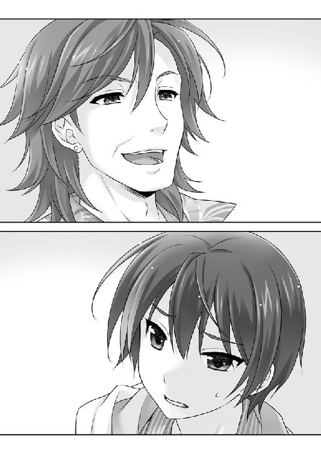
今度こそ、歯の根が合わない。オープンされた手札は、十行が♣の２４３７９で作られたフラッシュ。一條は♠と♥の５のワンペア。
この場面でも、十行はレイズしてこなかった。掌中の虫を弄ぶ子供のような無邪気さ。男の声と意図が、一條にもハッキリと伝わる。今夜の勝負は、カードの優劣を競うのではなく、どちらが『千里』の名跡を引き継ぐに値する格であるかのプレゼンだ。舞台は派手に。悲劇は陰惨に。観客の心を抉るおぞましさこそ、運命の盤上を支配する『力』の証明。
男にとって、これは勝負ではなく、結末の決まっている遊戯だ。今更一條を降ろして負かすつもりは毛頭ない。
（怯えたんだ......僕は......）
自分を誤魔化そうとしても、『本』は一條の弱さも見逃さない。
「勝てるわけがないのよぉ、旧式のクセにねえ！」
倉庫には、先ほどまでの戦場じみた炸裂音も絶えていた。死体安置所を思わせる静寂と死の臭い。女の足下に、ボロ切れめいた少女が一基。
「しぶとい玩具は戯びがいがあっていいけど、今夜は邪魔よねぇ」
コダマは悦楽に頬を緩ませて、動かなくなったアカハの頭を踏みにじる。
とびっきりの料理の仕上げと同じで、やることが多い。ボウヤの後を追わなければならないし、ここの後始末も必要だ。それに、主が以前追い掛けたことのあるチビと『アンブロシウス』にいた小娘が、奥へと走っていった。どこから迷い込んだのか。何のつもりか知らないが、ついでに片付けてやろう。
「全ては、十行様ぁんの勝利の為の捧げ物なのよ！ それにしたって、今日は動きがトンマだったんじゃありませんかぁ、セェンパァイ？ 旧式は回復も遅いから、前の傷が治ってないとかかしらぁ！」
アカハの勝ち目は最初からなかった。
性能差、互いの損耗、浸食花粉──導き出される解答は、稀少ではなくゼロだ。アカハは小賢しくも呼吸を止めて、神経ハッキングを抑えようとしたが、ｃＳは生きていなくても生者のように稼働する。生命維持の仕組みは人間と同じだから、呼吸しなければ機能低下してしまう。悪足掻きも、決定的な敗北を先送りにしただけのこと。
「もう退場しなさいよ。私、十行様ぁんの所へ戻るから。どうせ、あのボウヤもそこでしょう？」
ブーツの踵を踏み降ろすだけで決着がつく。
逆転の目は皆無。勝負をひっくり返す術はない。それがわかっているクセに。
アカハが嗤った。行けるものなら行ってみろ、と。
「本当は蜂じゃなくて、ゴキブリか何かじゃないの？」
おかしい。計算が合わない。この旧式は、既に五度は破壊されていなければならないのだ。それなのに、貫いて、引き裂いても、叩き付けても、まだ立ち上がる。前回といい、今回といい、往生際の悪さとしても度が過ぎる。
「不良品の分際で、悪足掻きをして。いいわ......首が千切れても笑えるかどうか、試してあげる！」
この期に及んで屈さない敵を、コダマは断じて許せない。怒りよりも憎悪に近い衝動に駆られて、もはや四肢もまともに動かない獲物にも容赦なく、頸を踏み砕こうとした。
瞬間。コダマは何かをかい潜るように真横へと跳躍する。常人には見えない糸を避けながら、両腕を無造作に振り回し、空中で旋転。勢いを利用した蹴りで、倉庫の入口から新たに飛来したシルエットを迎え撃つ。
影の正体は、ＴＰＯを全く無視したバニーガール。
───何故、バニー!?
途惑いはしたが、ｃＳの本能がウサギちゃんを撃ち落とした。
「もう一匹、初期不良品が残ってたわね！」
撃墜した筈の影は地上ではなく空中に。
天地逆さで天井の金属フレームに着地する。バニーガールを支えているのは、先ほどコダマが回避したのと同じ細微の糸だ。
「面倒なのは好きじゃないけど、これもお仕事だから」
「不意打ち程度で勝てるだなんて、大甘すぎて反吐が出るわねぇ。二匹まとめて片付けてあげる」
言うまでもなく、ウシオである。猛る敵ではなく、別のものを見ていた。
「アカハ。まだ壊れていない？」
「余所見するなんて、いい度胸じゃないのぉ！」
あっさりとキレたコダマが、コンテナと壁を踏み台に宙へ跳ねた。邪魔したことだけでも万死に値するが、自分を無視する侮辱は五分刻みにしてやっても購えない。空中という戦場の不利を歯牙にも懸けず、幾条と放たれる迎撃の糸をものともせず、二度の跳躍でウシオの懐へと到達する。
閉所で拡散した浸食花粉の威力は、元々の性能差を絶望的に拡大したが、続く一連の攻撃を白いバニーガールは残らず擦り抜ける。
圧倒的な速度差を埋め合わせたのは、環境と手数だ。狙いもつけずにバラ撒かれる糸の全ては、いわばウシオの手の延長。数十にも及ぶ糸の舞踏は、一つ一つが異なる速度と方向から目標へと襲い掛かる。最新型ｃＳと言えど、束ねた糸に捕まれば身動きできない。故に、その前に迎撃しなければならず、必然としてコダマの攻め手は緩んだ。
「───ご───っ」
選択の余地のない選択で強引に動きを止めさせて、ウシオは右の手刀をねじ込んだ。コダマの胸のど真ん中をぶち抜く鋼の爪は、ウシオの持つ最大の攻撃だ。
だからこそ、ｃＳとしての本能が、これはダメだと判断ってしまった。
「だから、旧式なのよぉ!!」
糸の使いにくい接近戦の距離で、必殺の一撃に動きの止まったバニーの豊満な胸元へ、今度はコダマの爪先が抉り抜いた。浸食花粉のハッキングで、ウシオの性能は平時の半分以下に落ちていた。
「......だから......新型って......好きじゃない......っ」
激突音と土煙をあげて地面に墜落するウシオ。
ニンマリと笑うコダマは、後を追うように着地して獲物に近づく。
地に伏せた蜘蛛は何度も立ち上がろうとするが、失敗した。当然だ。手応えはあった。旧式が今の一撃を喰らえば、立てる筈がない。
「なぁにをやってるんだか。こうなるって計算できなかったの？ それとも、いっそぶっコロされたかった？ もしかして、仲間だから助けた──みたいな虫酸の走るヤツ？」
「......お仕事よ」
それを断末魔に、ウシオはもう立つ力も尽きたように横たわって動かない。
理解しがたいものを「怪物」と呼ぶならば、コダマにとって、アカハやウシオこそが紛う事なき「怪物」だった。
人間は、未知を打ち倒す。
世界の隅々まで光に照らそうと歩み続ける、それが人の本能だ。
とうに人でなくなっていても、生まれ持った根幹に変わりはない。
だからこそ、コダマはウシオを許せない。
「今すぐ、ぶち撒けなさい！」
無造作に、ウシオの抉られた胸を踏み潰した。
「──────！」
倒れたままのアカハは何かを叫ぼうとしたが、声を出す余力もなかった。ピンで留められた標本のように二度と動かなくなるウシオへ、コダマが浮かべたあまりに人間らしい嘲笑に、アカハの中で何かがキレた。
とっくに壊れた身体で走る。
ｃＳとしては、あまりに遅い稼働速度。
異常を察したコダマが、迎撃の準備を追えるのに十分過ぎる時間。
構わず行った。
「バカじゃないの！ そんなザマで何ができるって───」
咆哮するコダマの腹部を、衝撃が前から後ろに突き抜けていた。
人型の砲弾が突き刺さっている。
コダマには、まるで理解できない。今起きていることも。最後の最後で、アカハの速度が自分を上回った理由も。
「......お兄さんのところへは行かせない」
呼吸する力すら惜しんで、ガラクタ同然の四肢から骨身を削るように熱量を掻き集めた、後のことはこれっぽっちも考えない一撃が、コダマの腹を抉り抜き───
「───勝てるわきゃあないでしょうが!!」
コダマの眼が深紅の色を帯びる。前回同様のやり口で悪足掻きを喰らわされた。耐えがたい屈辱に身を震わせながら、最新式のｃＳの反応速度が致命傷を避けさせる。突撃に合わせて旋回し、威力を流す。そして、今度こそ力を使い果たしたアカハの喉を凄まじい握力で捕らえた。
「飽きたわ。終わりにしましょ」
無造作に、頭から真下へ叩き落とした。
───『本』は一條の弱さも見逃さない。
テーブルを挟んだ対面に十行がいる。大きく真っ赤な口を開けて、足を滑らせた獲物が落ちてくるのを待っている。
この席に着くのは、自分独りだ。
他の全ては観客。好奇、期待、思慕、侮辱、憎悪、執着......斑色の想いの全ては外から自分を見つめている。
助けは何処からも現れない。碧流も、叔美も、アカハも、ウシオも、自分の立つべき場所で戦っているから、誰も手を差し伸べてくれない。
───それが、どうしたというのだろう。
７ゲーム目。機械めいたディーラーが、新しいカードを配る。
震えは止まった。力強く手を伸ばして自分のカードを手にする。
随分と。
無駄なことを思い悩んでしまった。
（千里一條は............振り向かない）
出口がわからないのも、都合のいいカードがないのも、いつも通りの人生だった。
自ら『千里』という舞台の主役になろうと選んだ。誰にもこの役は譲ってやれない。
運命という怪物は、数え切れない不幸や理不尽やどうにもならなさを運んでくる。
それでも、変えたいと思って選び続けることが、救いはもたらさなくても道を拓いた。
選択があるのは、いつでも後ろではなく前だ。自分にとって大切な人々も、歩みを止めず進んだ先に待っていた。
それは、千里一條にとっての数少ない存在意義だ。
稀少だからこそ眩い光を、守りたいと痛切に想う。もっと沢山の記憶と一緒に在りたい。
進もう、此処よりももっと先へ。
千里一條が、この席にいるのは偶然でも奇跡でもない。
己の選択で掴み取った必然だ。
空っぽだった自分に形をくれた沢山の出逢いへ、ささやかな幸せを返したいと願った。この責任を引き受けることが、まだ見たことのない処へ通じている気がした。
それは誰の為のものでもない、自分自身の為の願いだから。
ここまで背中を押してくれた人たちも、きっとそうだったろう。
碧流。叔美。ウシオ。アカハ。久留美。多分、花々梨も───
「ゲームを続けよう」
「ゲームを続けよう」
手札は、♠と♦のＪと、♥の２と５、そして♣のＫ。
十行はといえば、今にもタップでも踏みそうだ。近づくと抱きつかれかねないぞ。
「素晴らしいＹＯ！ 流石はマイサンだ！」
「貴方のことがやっと判った」
恐るべき怪物。打ち破らなければならない『運命』。
ようやく、相手の顔が見えた気がした。
「んー、いきなり何だね！ 追い詰められてどうかしちゃたのかな！」
「やっと、わかったんだ。僕はもう憶えていないけど、お祖母さんが貴方を勘当した理由。姉さんが貴方を許せない理由。貴方の『力』が何なのか」
千里十行は、自分から何も選ばない。暗がりを這い回って、近づく誰かの運命を手酷くねじ曲げて、零れ落ちた果実を貪り喰らう。
これまでの記述を、出来る限り細部まで、幾度も反芻しながら検証する。
目聡く口うるさい半身。離れられない翼の片割れ。壊れてしまった過去の代わりに、一條に与えられた魔法の『本』の語った諸々を。
頭の上にはコウモリが群れで飛んでいる。カラスではないぞ。門の外は人気がなく取り立
かつて学校の正門前で、叔美と久留美を間一髪救った時も、『本』は時に童話のように回りくどく、時に言葉遊びで物語った。
疎んだこともあった。感謝したことも、あった。
どんなに扱われても、『本』は手掛かりを示し続ける。
───今も。
暗く曲がりくねった道の彼方に、小さな灯火を見た気がした。
「手品のタネは見えてたんじゃないのかね、マイサン！ ま、大事なのは見えるか判るかじゃなくて、勝てるかどうかだＹＯ！」
怪物が嘲弄する。面白おかしく指を立てる。唇を塞いで、言葉を奪ってしまうように。幾つもの人生と魂と誇りを磨り潰す。選択視を消してしまうからではなく、選ばない無意味さこそが、巨大で真っ黒なブラックホールだ。
この男にだけは負けられない。
こいつに勝てなければ、自分の全てが否定されてしまうと確信した。
必ずくる好機を狙い打てるよう、これまでの千里一條の全てと、『本』の記述を部品として、怪物の心臓を射抜く精密細緻な切っ先を組み上げる。できるか。否。やるだけだ。
「───千里一條は、お前には屈さない」
選択視を選ぼうとする。消える。残されたものを選び取る。
十行は手を変えず、一條は全ての手札を交換。
幾度消されても、踏みにじられても、意志は手放さない。
誰の為でもなく、自分の為に。
自分である為に、自分の選択を続ける。
「パパに『お前』はないＹＯ！ それに、はは、屈さない？ 可笑しい可笑しい！ いいかいマイサン。世の中は、自然と勝者と敗者に別れてしまうものなのさ！」
ゲームを続ける。選択視が現れ、触れる前に消えていく。
一條に選び取れるのは、同額賭けのみ。『１４』と同じ一本道。
オープンされたカードは。十行のツーペア。一條のブタ。
「ほらね！」
喜色満面の十行と、自分の山から勝者の元へ移動されるチップを見つめながら。
（............１４）
叩き付けられる『運命』という逆風。身体も意志も灰と化す業火。
人には立ち向かいようのないものに歯を食い縛って踏み留まりながら、見た。
まだ選択視の現れていない『本』に、あの忘れがたい徴を。
───１４を。
（............そうだ───だ）
ようやく───
千里一條は、行くべき『道』を見出した。
「......しつこい、ガキね」
コダマの舌打ちが合図のように。
ゆらりと、アカハが身を起こす。壊れた人形も同然。身体はまだ動く部分を探す方が早い。叩き付けられた額がどうなっているのか、確かめようとも思わなかった。
立ち上がれる理由はとうにない。
機能停止寸前ではなく、まだ機能し続けていること自体が異常なのだから。
それでも。
立ち上がる理由なら、あった。
「もう一匹はさっさと死んだのに。まったく腹立たしい」
「ああ、そうか......」
立ち上がる理由が、もう一つ増えた。さっき手を貸された分は、返しておかなければならない。
だから、前に。
目の前の女を仕留めなければ。
「......アンタ、どういう身体してるわけ？」
コダマは、目の前の獲物に生まれて初めて不可解な感情を抱いた。
歩みは這うよりも遅い。拳を握る力さえ残っていない。
まるで壊れた発条仕掛け。
あまりにおぞましくて一歩退く。
その足下に。
「あ」
突然、コダマはつんのめった。何かを踏んづけたのだ。それは、先ほどウシオが辺り構わず振りまいていた糸だった。体勢を立て直そうとして、しくじった。粘つく蜘蛛の糸は容易くは剥がせない。ｃＳにあるまじき事ながら、みっともなくバランスを崩して......要するに足を滑らして転んでしまった。初歩的な身体制御にしくじったのは、アカハに腹部を抉られた損傷のせいだ。
巫山戯るな、とコダマは怒りにキレかかる。こんな馬鹿みたいな───
「あ」
床についた手が何故かくっついて離れない。
数瞬前は何もなかった筈の床に、別の糸が張り巡らされていた。
「だ、誰が、一体───」
考えるまでもない。糸を使う相手は一体だけだ。それでもコダマには信じられない。手応えはあった。確実に胸を潰した。
だから、こいつが生きている筈がない。
「やっぱり、新型は手強かったわ」
よたつきながら立ち上がったのは、廃棄処分した筈のウシオだ。
「どうして......？ あの損傷で、旧式が動ける............」
「コレを入れてたのを忘れていたから」
無惨に引き裂かれたバニーコスの胸元に覗く、艶めいた素肌......ではなく、雇用主から対老害用に授けられた、メロンパンじみた〝偽胸〟。このささやかな詰め物が致命傷を避けさせてくれたのだ、と。もう用済みと捨てると、完璧バニーだった曲線は詐欺のように萎んでしまう。実際詐欺だが。
「......もっと、我が身を振り返りなさい！」
立ち上がるコダマに言われて、ウシオは自分を再確認した。彼女は根が素直だった。
被弾した胸部は半分潰れている。肋骨と肺の区別が難しいが、あと数分程度なら大丈夫だろう。二度も腹をぶち抜かれる経験をした。人間もｃＳも、大事なのは慣れである。
「そうか、これが紙一重ってヤツね」
「紙一重どころか、全部ぶち抜かれてるでしょ！ ああ、もう！ 私を......ここまで小馬鹿にしてくれるなんて！」
「小馬鹿になんてしていないわ。本当よ」
ウシオは真摯かつどこまでも本気だった。本気だからこそ、人間同士がそうであるように、絶望的に二体のｃＳは分かり合えない。
「バラバラにぶち撒けてやる!!」
ウシオの糸が手足に絡みついてる。だが、それだけ。力任せに千切って立ち上がり、半死半生のウシオを今度こそ仕留めるのは造作もない。
───他に誰もいなければ、だ。
鈍い音がした。
油断と呼ぶには当たらない。背後の敵はとうに残骸だ。
残骸というならとっくにそうだったという、とうに死んでいる筈なのに動き続けているという、それだけの事実をほんの一瞬忘れたことが、コダマにとっての失敗だった。
アカハの腕から突き出た針が、後ろから突き刺さっていた。
「この、旧式............っ」
ｃＳの神経を冒す毒物を打ち込まれても、コダマには勝算があった。機能停止寸前の旧式二人を相手にするなら十分だと。
事実そうだった。糸に絡まれている最中でなければ、だ。
くたばり損ないのｃＳ二匹、ウシオとアカハが、糸と毒で身動きできなくなったマウント状態のコダマを冷ややかに見下ろしていた。
「いや、ちょっと......その......」
コダマは猛烈にイヤな予感がした。
「アナタ、危険な花粉を散布するのよね？ さっさと密封しておくわ」
「アカハも賛成です。動かなくなるまで殴りましょう」
「「えいえいえいえいえいえいえいえい」」
大量の糸で動きを封じながら、容赦ない追い打ち。
どちらが悪人だかわからなくなりそうな、イイ感じに酷い絵図が展開された。
だが、最新式ｃＳはそれ位ではへこたれない。この程度の逆境は、想定内だ。
（わ、私を舐めてるんじゃないわよ、こんな糸、ほんの三秒もあれば───）
コダマの計算は正しい。僅かな隙でも生まれれば、即座に反撃に転じてやる。死に損ない二匹を始末するのに、合わせて一〇秒も掛かるまい。
───時間があれば、だ。
臆病なネズミ同然に息を殺していた筈の脆弱な人間風情が二匹、能面みたいな無表情で、マウント・スマキ状態のコダマを見下ろしていた。
「待ってたぜ、この時を」
「ええ、本当に辛い雌伏の時間でした」
アカハとウシオの戦闘の最中、奥へ走った叔美は、花々梨に我流の応急処置を施した。少しは動けるようになった花々梨と最低限必要な打ち合わせを済ませると、戦闘の余波でぶち撒けられたコンテナの中から、次の作業に役立ちそうなアイテムを入手して、絶好のタイミングを待っていたのだ。
「お前たち、何を......す───」
相手は脆弱な人間風情なのに、超猛烈にイヤな予感がした。
叔美と花々梨は、それぞれ手にした「ピッケルのようなもの」と「バールのようなもの」を、糸まみれで半分繭になっている「何か」へ、わりと容赦なく振り下ろす。
「ちょ、お、おま......」
振り下ろす。
「やめ、まちな......後で酷いから......ぶっこ」
振り下ろす。
「あ、ちょ、だ、それはダメ......やめて、お願いです......」
振り下ろす。
「四人掛かりなん......この悪党ど......卑怯者ぉ......!!」
ああ、素晴らしき哉、団結力。
「お前が卑怯とか、鏡見ろです」
「動かなくなるまでやらないと、反撃されるわ」
「さっきは、よくも偉そうにしてくれましたね、四倍返しです」
「これはアタシの分、これはアタシの分、これとこれとこれとこれもアタシの分だ！」
地獄的絵面が展開された。
常識人として、一人後ろに取り残された久留美はドン引きである。
「あ、あの......叔美ちゃん、いいんですか、それ!? 悪人相手でも、流石に色々マズいんじゃないかと思ったりするんですけど───」
「いいんだよ。コイツは、この程度じゃこれっぽっちも堪えないんだから」
流れる血が「できない」と悲鳴をあげる。
自分でも与り知らない本能が、目の前の男と否応なく繋がった証明が、人間は怪物の『力』に抵抗できないのだと言い張った。どんな神話でも、恐るべき怪物を撃ち倒すのは、選ばれた英雄たちだ。
一條は、ほんの少し違うモノが視えるだけの高校生で、英雄ではない。
ゲームを繰り返す。手札が配られる。消える選択視。
１０ゲーム目、幾度となく選び続ける。
濁流が水溜まりを押し潰すのにも似た、抗いがたい力。運命という名の力。
それが、どうした。
１４ゲーム目。更なる敗北を積み上げて、幾度かの砂粒のように小さな勝利を拾う。ギャラリーは埋葬に参列する弔問客の沈痛で、血の繋がった敵の手で全てを奪われていく、憐れな少年を見守っている。
無駄な抵抗。断末魔の足掻き。何処の誰にも僅かな勝ち目も見出せない。
───一條以外には。
敗北の痛みも、逃げ出したくなる屈辱も、終わらない旅路への迷いにも堪えられる。もっと何倍も恐ろしいものを乗り越えてきた。
行き止まりの数字、冷たく青ざめたＰＧ『１４』を。
（......だから、怖くない！）
本当の恐怖となら二度も対峙した。お前が『運命』を弄んでも、その域には遠い。
「まだまだ行くＹＯ！ 次のゲームだ！」
１５ゲーム目。新しい手札が配られる。
（お前はもう怪物じゃない）
かつて『１４』に怯えたように、姿のない相手の正体を怪物と信じていたから、『本』の告げる兆しも頭に入ってこなかった。
さて、キミの手札は、８のワンペアが出来ている。
十行はといえば、ノリが悪そうに鼻を鳴らしている。文句の一つもつけたそうにしているが、気遣ってやる筋合いはないな。
さりげない記述が、十行の手札の手掛かりを与えてくれる。おおよそ、自分よりも上か、それとも下か。
（......今の僕よりも下......）
十行は三枚を、一條が五枚全部を交換。
オープン。十行が９のワンペア。一條が４のワンペア。
敗北しチップを失っても、自分の推測と『本』の記述の精度を確信する。
（僕は、視ることができる）
立ち向かう為の武器は、最初からこの手の中に。
手品のタネはもう視えた。十行のポーカーフェイスは完璧な盾ではなく、負ける恐怖を持たないから、不安や焦りを感じないだけの薄っぺらな仮面だ。この男は、手札を見れば当たり前に喜び、あるいは残念がって兆しを残している。
（ありがとう、叔美）
選択に───正しいとか、誤っているとか、はない。
啓示のように、己のミカタを教えてくれる。
行くべき処もまた。
回避不能の悲劇。打ち破れない黒鉄。口を開けた行き止まり。
そして───見据えるべき僕らの友。
道筋はとうに拓かれていた。ただ、そうと気づかなかっただけ。
１７ゲーム目も、一條の敗北で終わる。
好機は、おそらく一度。
（辿り着くのと、チップが尽きるのと、どちらが先か......いや、）
一度の勝利で逆転できないほど差がつけば、終わりも同然だ。十行が冷静になる隙を与えてしまったら、こちらが保たない。
まさに一寸先は闇。選んだＰＧの先に道が続く保証はない。
それなのに。
なんて胸が躍るよう。
恐れはあった。躊躇いも、迷いもあった。
ただ、そんなものに振り向こうと思わなくなっただけ。
弛むことなく、ただ一つの勝利を目指す。
そして─────
十行の親番で、新たなカードが配られる。
手札は、♠と♥と♦の７、♠のＪ、♣の２。
十行は、この場で一曲ぶちかましそうにノリノリだが、キミの７という数は相当に縁起がいい。
記述の一切を見逃さないように、瞬時に何度も何度も確認する。
──今しかない。
配られた手札で７のスリーカードが出来ていて、十行の手札を僅差で上回っている。出来れば、もっと高い手札が良かったが、これ以上は引き延ばせない。
配られた手札でしか勝負できないのが人生だ。
───想うのは、自分が手にしていた、ささやかな幸せの風景。
今勝てなければ、過去を手放した時のように、掛け替えのないものを失ってしまう。
だから、行こう。
夜の空を横切る矢のように、脇目も振らずに。
生まれて......そう、今の自分になってから一番の真っ直ぐさで、決めた。
前しか見ない。不純物のなくなった純粋で直向きな一条の想いは、何よりも強固な意志に、意志は揺るぎない確信に変わる。
───進め、先へ。
先行は一條。
対面の敵へ視線を向けてから、最初の選択をする。
十行は、この場で一曲ぶちかましそうにノリノリだが、キミの７という数は相当に縁起がいい。
このまま受けて立つのであれば／５３３─■■■■
ここが勝負どころだ。大きく賭けてみるのなら／７６１─■■■■
降りるを宣言するのなら／３９９─■■■■
一條が探るような上目遣いをして、すぐに視線を逸らした。
「んー、パパにお話があるのかな、マイサン？」
返事をしなくても「運命」はお見通しだ。マイサンの処へまた「降りる」が帰ってきた。とんだ喜劇だ、カワイソウに！ こんなに怯えてしまって。意地を張ってもパパには勝てないと、心の中で認めてしまった。
「ひゃはははは、いやいや、困った！ どーしたものかなあ、マイサン！ 僕は優しい男なんだけど、こいつは悩みどころだＹＯ！」
いつでも、今でも。どうとでもできる、どうにでもできる。
「そうだ！ マイサン、好きに選ぶといいＹＯ！ パパからのプレゼントだ！ どうするのか、見せて欲しいな！」
まだ続けるも良し。素直に折れて降りるも良し。ここまで、よく堪えた。それも限界だ。誰も、僕には叶わない。あと一度か二度......それで勝利は転がり込んでくる。
「これで最後にしましょう」
ギャラリーに混じる碧流が、一條の宣言で反射的に飛び出しかけた。
ほんの一瞬、泣きそうな顔で長い戦いを見守っていた姉と瞳が合った。
......彼女は踏み留まった。
心臓を吐き出すような大きな深呼吸の後、一條は宣言する。
「残り六二枚、全部賭ける」
一條の手持ちのチップ全てが場に置かれる。
ギャラリーが突然の成り行きに息を呑む。碧流は、もう動揺しない。
いつも通り、ノータイムで同額掛けしようとした十行が、流石に手を止めて目を細めた。
「おいおい、どういう冗談だい、マイサン？」
何を考えている。いや、考えているのか？ 一條は限界だ。彼を囚える『運命』がそれを雄弁に物語っている。ならば、僕が何を考えることがある。煮るなり焼くなり好きにできる。次の交換で、災厄のカードを掴ませてやることも。
「───十行」
ギャラリーの輪から、共謀者が視線で何かを促す。
「いいや！ マイサンは、とっくに負け犬だＹＯ！ 何も出来ないさ！ ここまで耐えきれなくなって、一か八かに打って出ちゃうとは。どこまでも凡人は哀しいね。いいとも！ 華々しく終わりたいというのなら、次はパパも本気で、念入りに『選ぶ』とするＹＯ！」
十行が等量のチップを鷲掴みにした。
賭けの選択視で選んだＰＧへ、『本』は独りでに捲れていく。
「同額賭けだ。残念だよ！ マイサンとの楽しい一時も、これで最後なんてね」
チップが場に置かれたのを確かめてから。
「──────ありがとう」
一條は、心からの礼を告げた。出逢ってから、多分、最初で最後になるだろうそれを。
「んー、派手に最後を飾れるのが嬉しいのかい？」
「本当に、感謝します。貴方が、貴方で、本当によかった」
十行は勝ち誇ってニンマリと笑いながら、よく見えるように指を立てる。
これが本気ってヤツだよ、と。
「さあ、カードを交換しちゃいなＹＯ！」
そして───
７６１─■■■■
「さあ、カードを交換しちゃいなＹＯ！」
今度は、こちらの番。どうするか決まっているのなら、思った通りにすればいい。誰もキミの選択に文句は言わないさ。そうだろう。
───思った通りにすればいい。誰もキミの選択に文句は言わないさ。そうだろう。
そんな励ましみたいな言葉を掛けてくれるとは思わなかったと、一條はこの期に及んで口元が緩んでしまうのを自覚する。
十行は本気だ。
これまでのような抑えた『力』の使い方はしない。無力なネズミと信じていた相手の挑発に思い上がりを教えてやろうと、今度こそ全力の『力』がやってくる。
碧流が有り得ない道を拓くように、有り得る道の中で最も悲惨で滑稽な「結末」へと一條を押し流す。
だから選んだ。
このままで勝負する／５５５─■■■■ へ行け
現れた、ただ一つの選択視を。
「───おい、おいおいおい、マイサン、これは何なんだＹＯ!?」
考えもしなかった状況に、十行が跳び上がった。蹴り倒された椅子が夜明けの鐘のように鳴り響く。悲鳴じみた咆哮を漏らす。宥めて席に着けようとするディーラーの声も届いていない。長老たちからすれば、それは突然すぎる錯乱だ。
選択視に著かれているのは一つだけ。
十行の『力』は、他人の選択を消して、自分に都合の良いものを選ぶだけ。
最初から一つしかない道は、どうしたって消すことが出来ない。
できた。
人は正しさを求める。成功と幸福を欲する。誰しも、刻々と変わる状況から進むべき道を思考し、正しい選択を見出そうと苦悩する。
その正しさを探す、人として当たり前の思考の隙間に、十行の『力』は罠を張って待ち構えている。
欲をかくほど、選択視の幅を広げるほど、容易く喉を食い破られてしまう。
一條の持てる何もかもをチップにした賭けは、正しく一か八かだ。
この選択でゲームには勝ち切れない。全額賭けで勝っても、相手の手元にチップは残る。
まして、敗れればその時点で全てを失ってしまう。一條が守りたいと願う様々なモノも。
それでも───
これは怪物の心臓へ届くたった一つの武器だ。
敗北の痛みも恐れる心も消えはしないが、受け止められる。
それが全てを賭けるということだ。
だから、行くべき処はただ一つ。
ＰＧ１４と同じ───選択の余地なき一本道。
───一本道にも良い道はあるんだ。
選択の全てが、良くも悪くもどちらでもあるように。
死に憑かれながら、一條に救いを与えてくれた不器用だけど優しい少女の存在が、真っ直ぐにしか進めない路地の奥にも、更に先へ進む道があるのだと教えてくれた。
もっと早く気づいても良かった。一條の本能は、ずっとこれだけが唯一にして無二の遣り方だと囁いていた。
気づくのが遅れてしまったのは、怖かったからだ。
暗がりの路地。終わりのどん詰まり。一條は、かつて触れた「１４」を何より恐れて遠ざけようとするあまり、そこにある手掛かりから目を逸らした。
可能かどうかも賭けだったが、確信はあった。
人生の選択視は、自分の見方一つで変わる。
絶対に降りない決意が、降りるを選択視に示さなかったように。
決意を固めることなら、意志があれば誰にでもできるだろう。如何なる場合も、それを貫き通すことは難しい。
それでも、出口のないかもしれない道を行く。
行く先のどんな『運命』をも恐れない覚悟と、一条に歩き続ける意志が、たった一つの選択視として結実する。
そして、選んだ。「このまま勝負する／５５５」を。
「───今度は、貴方が選ぶ番だ」
相手の喉元へ切っ先を突き付けるように宣言する。
千里一條は、やっと辿り着いたのだ。
これまで何一つ選んでこなかった男は、一條の伏せた手札を睨んだまま動かない。
選びに選んだ『運命』をプレゼントしてやろうと思ったのに。無様で喜劇を迎えさせようと伸ばした手が、素気なく振り払われて空を掴む。
「............なんだよ。ありえないだろッ」
苛立ちに爪を噛む。爪ではなく指を噛み切り、血が流れ出しても気づかなかった。
───歓びだけあればよかった。
快楽のみの人生。怒りや悲しみ、努力や我慢といった面倒なものは欲しくなかった。
子供の空想にしか生き残れない妄念を、持って生まれた『力』が現実にする。
彼にとっては勝利こそ、歓びを実現する最もお手軽な方法だった。
十行が指を立てれば、誰も彼もが『運命』に跪く。
人は他者の不幸なくして、己の幸福を認められない生き物だ。
幸福と不幸の帳尻は、いつも何処かで合い続ける。
蟻を踏むように他人を潰す。達成という不完全な喜びからは遠いが、別のモノが手に入る。敗北した亡骸の数が、彼の勝利と幸福を保証する。
千里の『力』。運命という力。選ばれた英雄の聖印。凡人と己を絶対的に別つ証。
この『力』を道を示す力と呼んだのは、一体誰だったろう。今は亡き母親だったかもしれないが、そんな事は今更憶えていない。
十行は過ぎたことを振り向かない。過去とは如何なる時も足を引っ張る鉛の外套。遊び飽きた玩具を捨てるように、使い終わった過去を棄ててしまう。
勝者であることを貪ってきた男は、だからこそ今起きていることを理解できない。そんなものは勝利ではないという簡単な事実を、誰も教えてやれなかったから。
ただ、ずっと昔、似た痛みを一度だけ知っていた。
これまで振り向いたこともない色褪せたフィルム。よく名前も想い出せない女の『貴方が嫌いだ』という言葉。
「僕は、負けない......負けてない......『力』が届かないからって、いい気になるな......こんなのは負け......負けじゃない......っ！」
一條は勝ったのではなく、勝負できただけだ。
このゲームを落として逆転されても、手元にチップは残る。ゲームは続く。
十行の手札は、８とＡのツーペア。
一枚交換を選んで、８かＡが来ればフルハウス。
このゲームでも、勝つ機会は幾らでもある。だが───
それ以外なら？
「だったら......だったら......ま............？」
とうに忘れてしまった失恋のように、胸の奥を掻き毟るどこか見知った想い。
このゲームに勝たなければ............。
この先も『力』が通じないなら、同じことを続けなければならない............。
千里の『力』は、十行の為にだけ歓びを運んでくる。相手の敗北と確実な幸福とを。
確かなものが何もない一寸先の闇の濃さに吐き気がした。
「こんなのは違う......真剣勝負なんて、凡人の......僕は持っている、選ばれてる......だから、ひ、ひ、ひ、ひ、ひゃは、違うんだ......はは、はひっ............」
滴る血が唇の周囲を汚す。もはや男の顔は道化ではない凄惨な鬼貌だ。
ギャラリーが固唾を呑んで見つめている。
王手は掛かっているのだ。十行が勝てば一條のチップは尽きる。勝負は決定的となり、次の名跡の座は揺るぎない。
「────────────ふん」
俯いていた男が、気持ちの良い朝に飛び起きるように顔を上げて、椅子へ座り直した。
大胆に、大仰に、まさしく王者のように。
───ま、良くやったんじゃないかな。
と、上から見下ろすかのように。
異様な空気と静寂が広間に充ちる。
十行は、ゆっくりと手を伸ばす。とっておきの御馳走を盗み食いした悪戯小僧みたいに、晴れ晴れとした顔で。
「待たせちゃったね。僕が選ぶのは───」
先ほどまで漂っていた昼の残滓も、完全に消えてしまった。
人気の少ない倉庫街とはいえ、結構な騒ぎを起こしていたのに部外者の現れる気配もないのは、ここにいた誰かが事前に手を回していたのかもしれない。
彼女は何をするでもなく、疎らに星の散り始めた空をぼんやりと眺めている。
「これが燃え尽き症候群ってヤツなのかな」
お向かいのオカマダさんから仕込まれたばかりの言葉がポツリと漏れた。
何かをやり遂げるには精神的肉体的な熱量を消費する。ガソリンの尽きた車が走れないように、人間だって使い果たせば一時的にせよ動けなくなってしまう。
それに、一條を送り出してコダマをぶちのめした叔美が遣るべき事は、この場にはもう残っていなかった。
......一條は間に合っただろうか？
気掛かりといえば気掛かりだが、気を揉んだところで結果は出ている頃だろう。花々梨や他の怪我人には応急の処置を施した。意識を取り戻したスーツの男たちは、花々梨からヤケに丁寧な口調と惚れ惚れするくらい嘘っぽい笑顔で何か言われる度に、ひたすら恐縮したり狼狽したり土下座したり踏まれてハァハァしていたが、詳しい事情に首を突っ込もうとは思わない。
拉致監禁犯は捕縛された。すぐそこで、白目を剥いて気絶している。ｃＳだけにいつ復帰して暴れ出すかしれたものではないので、やむなくアカハとウシオが見張っていた。
それら後始末の間にも、花々梨は久留美のスマホを借りて（花々梨のものは捕まった時に壊されてしまっていた）方々へ連絡をつけていたから、もうすぐ手配された医者なり事後処理をする人間がここへ来るのだろう。
叔美の仕事は残らず片付いてしまったのだ。この先は一條の仕事。叔美にできるのは、それこそ久留美と二人して、少年の勝利を祈るぐらい。
「のんびりとしている場合ではないんです」
「おい、怪我人なんだからあンまり動くなよ。ヤバいところは外れてたけどさ」
怪我人のクセに自重しない花々梨が、久留美に肩を借りてやってきた。顔色がさっきよりも良くない。ほら見たことか。
「久留美も寝てた方がいいって言ったんですけど......イチジョー、今頃『勝負』とかしてるんですね。負けたら『アンブロシウス』が取られちゃうって」
厳密には違うのだが、久留美には細かい事情を伏せている。
「勝つよ。まあ、多分だけど」
根拠があるわけでも、信頼しているのとも違う。
あのどこか抜けた少年が、やるべきことを遣ると確信しているのだ。遣るだけやって届かなければ、それはそれで納得できる。
だから、今は一條の勝ちを疑わない。碧流のようにオーナーの立場なら「その先」を見越して思考し備えるべきかもしれないが、叔美はそんな面倒な役回りは御免だ。
「勝っても、あの男が素直に負けを認めるわけはありませんよ」
花々梨が血の気と一緒に表情まで薄くなったような顔で、不吉な予言をした。
「それは......そうかもしンないけど」
言われてみれば、花々梨の指摘は反吐が出そうなリアリティを持っている。
千里十行───あのクズが黙って敗北を受け入れて、素直に頭を垂れるだろうか？
否、太陽が西から昇るのと同じくらいに有り得ない事象だ。
「クソッ」
咄嗟に考えもなく感情だけで走り出そうとした叔美を、花々梨が引き留めた。
「待ってください。『交衣』へは部外者は立ち入れません。それに、失礼ですけど、叔美さんが行ってどうにかなりますか」
「かもしンないけど......ジッとしていられるか！ 一條がヤバいンだぞ!!」
「叔美ちゃん......」
その言葉を待っていた、というように花々梨が頷く。
「......わたしに考えがあります」
そして、十行は決断した。
黄金のチップの雨。
カラフルなカードの紙吹雪。
鮮やかに色づいて空に咲く一瞬の花火。
ひっくり返されたテーブルが広間を転がる。
「もう、こんな長いだけで詰まらないゲームは終わりだ！ さあ、解散しようＹＯ！」
己でひっくり返したテーブルと散らばったチップを、十行はオモチャ屋ではしゃぐ子供みたいに蹴っ飛ばす。
長老たちも呆気に取られていた。
決断どころか、圧倒的に優勢だったゲームの途中で全てを投げ出す、癇癪を起こした子供も同然の暴挙を十行がしでかした理由に、全く理解が及ばない。我に返った疎らな声が、礼儀知らずというのも余りある男を叱責するが、右から左だ。
「っ、ハ──────」
一條は椅子から滑り落ち掛かる。驚きではなく、全てを使い尽くしたからだ。
ゲームの続行はおろか、立っているのも困難なほど酷使された脳と四肢。座席にしがみついて、無様に倒れるのを最後まで拒む。
今夜の勝負は、ポーカーでも、千里の『力』を比べたのでもなかった。
どちらが先に「振り向くか」というチキンレース。
それに気がつかなければ、ここへは辿り着けなかった。自分一人では最後まで判らなかったかもしれない。押し上げてくれた沢山の手に導かれた。
───誰だって、他の誰かに道を示すことが出来る。
千里十行が持つ『力』の総てを打ち破ってみせることが、勝ちへと続く唯一の道だ。
本気を出させる為に全額で仕掛け、その上でチップの枚数を逆転し、あの男の身体ではなく魂に楔を打ち込む機会を狙った。
勝ったところで、相手の手元にチップは残っている。
どちらかが屈するまで、ゲームを続ける他に術はない。
一條は最後まで続けただろう。今度こそ、五分の勝負を。
それでも───
勝利は得た。最後までポーカーでは勝ち切れなかったが、ゲーム盤はひっくり返された。
怪物の仮面は砕け散る。そこにあるのは、ただの千里十行だ。
「勝負を棄てたな、十行。この勝負、一條の勝ちだ！ この場の全員が証人だぞ！」
今にも意識を失いかねない一條に駆け寄りたいのを堪えて、碧流は散ったチップを踏み越え、祖母の仇へ詰め寄る。
一條の意図とは違う結果でも、これは間違いなく一つの勝利、一つの決着だ。
絶対に覆せないものを覆して、意志と覚悟が『運命』を打ち破ると証明した。
千里よりも遠い道を踏破した切っ先は、あの男の喉元へ確実に届いている。
だからこそ、今この場で勝利を確定させてしまわなければならない。そうでなければ、全てを費やした弟の行為に、正統な結果で報いてやれない。
「棄てたとか棄てないとじゃなくて。面倒なのがイヤなだけなんだＹＯ。勝ったとか負けたとか、そんな詰まらないことで悩むなんて、まっぴらなのさ。でもま、そんなに怒るなら、僕の負けで構わないＹＯ」
「......本気で言っているのか？」
「勿論だＹＯ、マイドーター！ これで一勝一敗だね！」
一瞬の感激の後の、急降下落下による目眩。
「そうさ、次こそ本気でやるＹＯ！ さっきのは遊びすぎちゃったからね。次は、最初から本気でマイサンを叩きのめしてやる」
「貴様の厚顔無恥も大概だが......一つ忠告してやる。『次は本気だ』と抜かすヤツが本気を出すところを、私は一度も見たことがない」
「僕は例外さ！」
「碧流。十行の言うことも、今回は理があるのではありませんか」
我慢の限界に、実力行使まで半歩手前になった碧流を押し留め、陽春が割って入る。
「どこにどんな理がある!? 盗人にも何とやらか!? そいつは盗人より最悪だがな」
「これまで十行は、一條君の条件を全て呑みました。十行が条件を出さないまま終わっては、公平とは言えないのでは？」
「お祖母様に放逐されたロクデナシを名跡の件へ強引に割り込ませておいて、今更五分だのと言える貴様の面の皮も相当だな」
道理に包んで無理を押し切る。如何にも鷹崎陽春らしいやり口だ。
三戦目の提案は難癖に等しいが、今夜の勝負は、半端な形での無理矢理な幕引き。一條が勝ち切れていなかったのが傷になる。
「皆様、いかがですか。このまま有耶無耶に採決を行うよりも、千里十行と一條君、ここまでを五分として、再度の勝負を行うのは。いえ勿論、日を改めてお忙しい御老人に御迷惑はお掛けしません。決着には、今この場で行える題材で十分でしょう」
「貴様、何を勝手に！」
「マイフレンド！ 僕とマイサンを五分だなんて、見る目がないね！」
横槍を無視した淀みない語り口に、長老にも賛同の気配が拡がっていく。元より、老人たちの多くには、鷹崎が事前に話をつけてある。
結局は、戯言一つでひっくり返されてしまうのか。このテーブルと同じに。
（ここまできて.........いや、考えろ。一條の戦いを無駄にしてたまるか）
「鷹崎の。この場での題材と言っても、どうする？」
しかし、老人たちの持って回った言葉遣い。これは決まる流れだ。
「決着がつけば良い。簡単なもので十分でしょう。例えば、ジャンケンでも」
碧流は礼儀も仕来りも振り捨てて、陽春の胸ぐらを長老たちの面前でねじり上げた。
「私の我慢も限界だぞ、鷹崎───」
「待って、姉さん！ 無茶は......三戦目、僕ならだいじょ......」
立ち上がろうとしたが覚束ず、一條が躓く。
そして───
裁可が下ろうとした瞬間。小さな、しかし見逃せない暴風が、有り得ないことに襖を蹴り飛ばして交衣の席に雪崩れ込んできた。
「一條！ 碧流！ アタシが来たぞ!!」
碧流は聞き覚えのある声に、急いでそちらを向き直った。警護役のゴツい男の腕を、バニールックの叔美が本物の兎みたいに擦り抜けてくる。手を引かれて連れてこられた久留美は、事情が判らないのと警備役の強面のお兄さんたちに囲まれているせいで、引き攣った笑顔で半泣きだ。
「お前たち、こんなところへ何をしに来た!?」
碧流に支えられなければ立っているのも難しいのに、一條に自然と笑いが零れる。
無鉄砲にも程がある。二人とも、自分や碧流を救いに駆けつけたのだろう。この逆境で出来ることがあるとは思えないが、来てくれた事実だけでも十分過ぎる。
「堂々としてろ。用事終わったら、すぐに出て行くンだし」
「いやいや、叔美ちゃん！ これはヤバスギですよ！ 用事が終わる前にＲ指定な感じにされちゃいますからぁ!!」
当然ながら、長老たちの誰何と敵意が二人に集中する。
「アタシは、これだ!!」
碧流が慌てて取り成すよりも先に、叔美が一枚の紙切れを、時代劇の決めシーンで使う印籠のように高々と掲げた。手帳かメモを千切ったと思しき紙に記されているのは、手書きの文字と拇印。
「花々梨からのイニンジョウだ！」
「これは......確かにあの女の」
顔を近づけて、碧流が信じがたいと目を瞬く。簡易だが『ヒトデナシ』の使う符丁と書式。間違いなく花々梨自身が認めたものであるという証明だ。
「待て。娘が......花々梨は一体何をしている!?」
「多地見の。それは我々が知りたい。我が娘のことだろう。存じていないのか」
喧々諤々とやり合うのは長老たちばかりではなく、碧流もだ。
「こら無駄飯ぐらい、貴様、従業員の分際で、あの雌犬に魂まで売ったのか！ 見損なったぞ!!」
「うっせえ、詳しい話は長くなるから後だ！」
三六〇度あらゆる方向から叩き付けられる怒声の豪雨を、面倒になって全部一纏めに切って捨てると、叔美は十行をズバリと指差す。
「カカシの分まで、テメーにまとめて借りを返してやる」
例えば、十行がポーカー勝負をもっと早く決着させていれば。叔美がやって来たところで、大勢は決した後だったろう。久留美が花々梨を追い掛けて飛び出していなければ。一條はそもそも間に合わなかっただろう。
人生を大きく左右する分岐点の訪れは、ほんの一時だ。一分、時には一〇秒ズレただけで、有り得たかもしれないその先は過ぎ去って消えてしまう。
だから、今夜の出来事は。
高みから本の登場人物を描くように俯瞰する何者かの手による運命ではなく、一條が、そして叔美や碧流や久留美が、アカハやウシオが自分たちで掴み取った、ただ一度限りの美しい絵巻だ。
「おい、久留美。出番だぞ」
「うー、叔美ちゃん、こーいう場所で振らないで......っていうか、これぐらい自分でやってくださいよ。簡単だし」
「......機械は苦手なンだよ」
「んもー」
仕方なく、右手に委任状を構えた叔美に並んだ久留美が、おっかなびっくり左手でスマホを掲げる。暴挙を止めようと男たちが駆け寄るよりも先に、再生をスタート。
『───わたしは、多地見家の花々梨です』
聞き覚えのある音声は、久留美のスマホに花々梨が録音して持たせたデータだ。
『多地見の名において、千里十行の秘書が千里一條の誘拐を実行し、命を狙ったことを証言するモノです』
告発は爆弾だ。交衣の席の時間が止まる。
『この許しがたい謀議に、残念ながらわたしの父、多地見家の当主が加わっていた事実を、皆さんに申し上げなければなりません』
ゲフンゲフンと人垣のどこかで誰かが咽せていた。
『他にも、多数の方々が加わっている証拠が手元にあります。以上、全て事実に相違ないことを、わたしはここに誓約するものです』
ゲフンゲフンと人垣のどこかで更に何人かが咽せていた。
データはごく短く、音声がそれっきり終わってしまう。
「その内容は本物か、千里碧流......そして、代理の娘？ それと......多地見の、少しこちらへ。話がある」
「なんだＹＯ！ こんなの悪い冗談だ！ 有り得ない！ 余計な真似をしやがって、あの役立たずのガラクタめ！」
碧流は、笑った。屈託無くはにかむようで、全く彼女らしくはなかったが、長かった今夜に碧流が初めて得た笑みだ。
「これは、何とも......呆れてしまう馬鹿騒ぎだ。こういうのは予想しなかった......苦手だな......まったく。世の中は、本当に余計な真似をするヤツが多すぎる」
もはや余裕も何もかなぐり捨てた十行の泣きっ面を堪能してから、共犯の負け犬面も笑ってやろうと捜す。だが、長老たちが互いに責任を擦り付け合う身も蓋もない泥仕合の火中から、秀麗な立ち姿は煙のように消えていた。
「鷹崎......どこへ行った？」
「それって、十行と一緒にいたヤツか？ さっき、出て行ってたぞ。『千里一條様によろしくお伝えください』って」
あまりの変わり身の早さに、碧流も開いた口が塞がらなかった。天晴れですらある。
「つくづく、食えない男め」
十行の後見だった鷹崎が見切った事実は決定的だった。一條と十行のどちらに味方するか決め倦ねていた長老たちも、水が排水溝に流れ込むように旗色を定めていく。老獪で面の皮が厚いのは、老人の特権だ。
「多地見の娘の証言は、看過するには重大すぎる。真偽を確かめる席を改めて設けるが───十行、お前には訊ねなければならないことがあるようだ」
十行の『力』でも、この場の流れは変えられない。長老たちは千里十行を切り捨てると決めている。最初から存在しない選択視は選べない。
「諦めろよ、クソ野郎。よくも好き勝手やってくれやがったな」
叔美バニーが腕をぐるりと回す。一発ぶん殴っておこうという腹なのだ。今更止めるような余裕のある人間は、この場にはいない。
「アタシはさ、オマエが憎かったよ。追い掛け回されて、捕まえられて、酷い目にいっぱい遭わされた。今も憎いのかもしれない」
脳裏に散々だった日々を描きながら、ゆっくりと叔美は歩み寄る。
「でも、どうでもいい。もうよくなったよ。憎いとか、憎くないとか。アタシは、オマエのおかげでここへ来られたンだ」
それは不思議な繋がりだ。テレビで一度だけ見た、あのドミノとかいう変な遊び道具のように幾つモノ筋道がパタパタと倒れながら、叔美を奥志麻へ運んできた。
叔美に手を差し出したのは一條だった。でも、そもそもの始まりは、十行が叔美の『１４』を──幸福と不幸の秤を欲しがったことだ。
礼を言う筋合いは、これっぽっちもなかったが。
「おかげで、アタシは沢山手に入れたンだ。だから、カカシの分と合わせて、一〇発ぐらいで許してやる」
拳を握りしめたバニーの叔美を前に、急転直下の状況に狼狽していた十行が唐突に笑い出した。腹の底から漏れ上がる、それは確かに哄笑だ。
「歯を食いしばれ......ってンだよ。追い詰められてネジでも飛ンだのか」
「あー、やめやめ！ 名跡なんてもういらない、面倒な子供はキライだよ！ こっからは『企業』に戻るとするＹＯ！ なんたって大人は、やるべき仕事を忘れちゃイケナイ」
肩を竦めて溜息を吐く十行に詰め寄っているのは、叔美だけではなかった。碧流は戯言に耳を貸さない。これ見よがしにパキポキと指を鳴らす。
「私は叔美ほど甘くない。これまでのツケと合わせて、一〇〇発ほどぶちのめしてから、お前を長老たちに引き渡す。自分のしでかした事の後始末、一度くらいは自分でしろ」
「だから、そういうのはもういいって言ってるだろ、マイドーター。終わったんだから、ノーカン！ 僕は帰って報告しなきゃならないんだＹＯ！ その前にお仕事───そこの娘を連れて帰る......と言いたいが、連れてきた玩具はまた失敗作。仕方ない、これでＯＫってことにしＹＯ！」
碧流は異変を察して素早く飛び掛かろうとしたが、つんのめった。一條は、無警戒な叔美に飛びついて、押し倒すように床に伏せさせる。
最初のターゲットは碧流だ。土壇場で、碧流の選択視を消し去って、十行はほんの少し先んじたのだ。手の中には、小さな携帯プレイヤーのリモコンによく似た機械。そのスイッチを押す。
「何を───」
一條は咄嗟に身構えたが、何も起こらない。少し遅れてカチリという音がした方向を、ゆっくりと振り向く。
言葉に出来ない恐れ。危険な臭いに背筋を凍らせた先で、叔美が呆然と立ち竦んでいた。カカシのように我を忘れて突っ立っている。足下に、二つに割れたチョーカー。
本命は、叔美だった。
それは、かつてウシオと相棒だったｃＳに叔美が付けられたモノ。触れれば死ぬ毒の花を持ち帰る為の強固な檻。
叔美の『１４』を押さえ込んでいたチョーカーが。
「お前が余計なことをしたからだＹＯ！ あー、もういい。もうどうでもいいよ。さっき何て言った？ ここに来られた？ ははははは、ボッチはそんなに寂しかったのかな。ひゃはははは、ざーんーねーんだＹＯ！ 願いましては全部オジャンだ。お流れだ、マイサン、マイドーター、お前たちも残念だＹＯね！」
一條も、叔美も、碧流も何も言わなかった。叔美の平穏を支えていたのは、戒めである〝頸輪〟と『アンブロシウス』の加護だ。どちらが欠けても成り立たない。
叔美は、仮初めの土台に必死で積み上げた一切を、自分の腕で薙ぎ払ってしまう。
片翼の折れた鳥が落ちるのは、大地がある限り必然だ。万象は、必ず死という結末に辿り着く。人間には立ち向かいようのないものに呑み込まれていく気がした。
全てが零れていくこの刹那に、叔美は祈るように目を閉じた。
けれど、祈る神様は何処にもいない。
「おい、クソ親父」
目を見開いて、叔美は凜と真っ直ぐに顔を上げる。
俯かない。へたり込まない。運命には屈さない。
馬鹿みたいに前を向き続けたヤツを傍で見ていたから、ソイツに手を差し出されたから、自分だってこんなところで負けられない。
「ははは、なんだい、まだ何か───」
「お前、頸輪を壊したらどうなるのか、忘れてるだろ」
叔美の〝頸輪〟は捕らえておくだけのものではない。
封じられた『１４』の力は、どこにも逃げられずに蓄えられる。
「あ────────」
十行は、馬鹿みたいな顔をしていた。
触れるモノを『１４』へ導く力。押さえつけていたチョーカーの機能を停止させれば、圧縮された力が顕現する。
「外へ逃げろ！」
一條が力の限り叫んだのと、ほとんど同時に。
───〈虎〉が現れた。
炎で出来た揺らめく〈虎〉。破壊する暴威の顕現。暴風なる力。
敵も味方もない。
巨大な影。巨大な爪。広間は爆発じみた風圧に薙ぎ倒される。
誰も彼もが逃げまどう。人は『１４』には逆らえない。
爆発するみたいに〈虎〉は真っ直ぐに奔る。何もかもを踏み砕く。叔美と〈虎〉の目の前には、馬鹿みたいな惚けたままの十行がいる。
奔る。爆発。嵐。
瓦礫の山である。
大きな広間と庭のあった場所が、大型の台風が直撃した後のような惨状だ。
奇妙なことに、周囲への人的被害は皆無だった。奇縁の巡り合わせた今年の交衣でも、奇跡としか思われない。
顕現した『１４』の化身である〈虎〉は、ほんの数秒間、地獄そのもののように荒れ狂い、夜明けの霧のように消えてしまった。
「不思議だね。前の時は、このお屋敷丸ごと吹き飛ばし兼ねない勢いだったのに」
少しは動けるようになった一條が、覚束ない足取りで瓦礫を踏んでいく。
円形のクレーター状に広がる破壊痕の中心を目指す。
「お祖母様が守ってくれたのかもしれない、多分......」
〝頸輪〟と共に叔美の『１４』を押さえ込んでいた、『アンブロシウス』に二重三重に施された一條にはよく解らない祖母の力。二つの相乗効果が、あるいは暴走をほんの一瞬で食い止めたのか。
「そんな都合のいい話があるのかな」
「多分......だ。あるかもしれないし、ないかもしれない。私にだって答えはわからないさ。たまには、奇跡や偶然のある人生もいいんじゃないか」
憶えていない祖母がまた守ってくれたというのは、確かに悪い気分じゃない。今夜はそう納得しておこうと、一條も思う。
「姉さん、その......あの男はお祖母さんの......」
聞くべきではなかったかと迷うが、今でなければ聞けない気がした。
返事はない。夜明けの海みたいな静けさに、瓦礫を踏む跫音だけが響く。
「お祖母様の......仇、みたいなものだ。私はそう思っている。お前にも、いつか教えよう。そうするべき時が来たら」
碧流の複雑すぎる感情が、能面みたいな無表情を作り上げていた。
キミは破壊痕のど真ん中へ辿り着いた。
荒れ狂った台風の目のように、呆然としている叔美が蹲っている。他には......誰もいない。十行の姿もない。
今夜の大いなる勝負を制したのはキミだ！ 勝ち方はどうであれ───
Ｃｏｎｇｒａｔｕｌａｔｉｏｎ!!
キミはまた一つ試練を乗り越え、人生を飾る伝説を一つ増やした。
高らかに勝利を謳いながら『アンブロシウス』へ凱旋する前に、もう少しやっておくことがあるが。
最後の数歩を飛び越えるように近づく。もしかしたら、危険が近くに潜んでいるかもしれないと警戒しながら。
「叔美、大丈夫？」
「壊れちゃったンだ。アタシ、どーなンのかな............」
チョーカーを破壊されても、真っ直ぐに胸を張った強がりも今はない。叔美は、貰ったばかりのお小遣いを入れた財布をどこかに落としてしまったみたいな、空っぽの虚脱を抱えて立ち上がろうともしない。
初めて出逢った路地裏のよう。
叔美の『１４』は、鎖を千切って解き放たれた。
遠くで誰かの声。長老たちか、もしかすると久留美か。中身はどうでもいい。それは、本当は宝石のようだった穏やかな日々に幕を引く、切なく寂しい終幕のベルだ。
叔美がこの場へ駆けつけなければ、こうはならなかった。
選択は取り返しがつかない。
人生はいつもそう。繰り返し選び、傷つき手放しながら歩く道程だ。
この先は、何もかも今までのようには行かないだろう。
割れた〝頸輪〟を摘み上げて近くでよく見た。割れたせいか薄っぺらい外装の一部がズレていて、中身は機械と怪しげな文字。ショートしたみたいに真っ黒に焦げ付き、一目で使い物にならないとわかる。
「───大丈夫だよ」
「何が、ダイジョーブなンだよ。全然だろ......」
叔美がノロノロと立ち上がる。一條に背を向けたまま、遠くを眺める。さっきの騒ぎで天井と壁が崩れた大きな穴の向こうには、真っ黒な怪物みたいな夜の美山。山頂付近で瞬く、鉄塔のライト。
「やっぱ、アタシには遠かったかな」
少女は一條を見ようとしない。遠い景色に目を細める。
「......アタシ、ダメになった」
呟きの意味がわからなくて、一條は聞き返した。
「何が」
「きっとダメになったンだ。奥志麻に来る前は、一人の夜も平気だった。前の見えない霧も、冷たい雨も、嵐だって怖くなかった。アタシは独りでやってきた」
それが叔美の人生だった。
孤高でいる代わりに、傷つかない。
ああ、そうか。一條は初めて思う。
前に進むことは痛みを伴う。
未知という巨大な怪物と向き合い、新しい何かへ踏み出す時、人は恐れと痛みを抱く。
一條自身が何も知らない場所へ飛び込んで、感じたように。
阻害として、拒絶として、対立として、様々な形でやってくる。
孤峰の頂きに独り立ち続けるならば、厳しくとも痛みはない。
「でも、今は───怖いよ。もう一度、アソコへ戻るンだって思っただけで、アタシ、震えてるンだ。どうしてだろ？ 元に戻るだけなのに」
「痛いのを知ったら怖くなるんだ。僕も怖かった。ここまで来るのは」
「どうして、怖いのに止めなかったンだ？」
「......どうしてだろう？ 最初は、逃げ出すのがイヤなだけだった。それに僕一人だと、とても無理だった」
だけど、誰かの為かと問われたら、きっと違う。
大きく息を吸う。
暗い空に向かって手を伸ばし、今日勝ち取ったと『本』が教えてくれた、カタチのないものをしっかりと握りしめてみた。
「───実は、さっき、楽しかったんだ」
痛みを乗り越えて此処まで来たという、確かな証を手に取って。
「何が」
「十行と勝負してた時だよ。やり合ってるのが、じゃなくてさ。上手く言えないけど。勝つとか負けるとかでもなくて......初めて、本当に、自分で選んだ道を歩いてる気がして、凄く楽しくて......嬉しかったんだ」
この世界に勝てた気がした。
「バカだな。今更かよ。アタシは、ずっと自分で選ンで来たンだぞ」
「うん、叔美はそうだね」
「そっか。一條にだって出来たンだから、アタシなら簡単だな。もう一回やり直せばいいンだし」
背中を向けたままの少女が精一杯の背伸びして、真っ直ぐに暗い空を見上げた。目の前に広がるのが真っ暗闇でも、意地を張って俯くのをやめる。
「どうにかしてみせるよ」
長い時間を掛けて、一條はそういった。
振り返らない背中が震える。小さく息を呑んだのがわかった。
どうにも、終わりよければ全てよしとは行かないが、終わった事に気を取られていても仕方あるまい。キミには、もっと大切で切実な問題がある。
落ち込んでいる少女の背中は、元気づけたいという欲求を掻き立てる。キミも「背中」の魔力に捕まってしまったか。
他人の為に何かしてやりたい、という意志は結構なことだ。
しかし、無責任だとすればいただけない。
誰かの胸を打つ言葉を支えているのは自信だ。
日々根拠を捜して、自分の言葉を本物にするのを忘れないように。
迷わないのは大概の場合は美徳だ。だが、時には踏み留まることにも、大きな意味があるものだ。彼女を取り巻く問題は、どう考えてもお手軽には済みそうもない。下手をすればキミの一生を左右してしまう場合だって、あるかもしれない。
よくよく考えてみなければ、な。
叔美を何とかしようと決めているなら／６６６─■■■■ へ行け
そっとしておく方がいいのなら／２０１─■■■■ へ行け
長い長い夜の終わりを区切るように、『本』が選択視を記す。
「どうにかしてみせる」
もう一度言葉にしてから、選び終えた『本』を閉じる。
叔美は霧に迷う子猫のように、恐る恐る一條を見上げた。
この先へ進める根拠なんて欠片もないのが『本』には申し訳なかったが、一條はほんの少しも迷わない。
それから、いつかの路地裏みたいに右手を差し出した。
たった一つの遠くへ続く道のように真っ直ぐ。
誰だって新しい一歩を踏み出すのは怖い。けれど誰かが自分に価値があると信じてくれることは、歩く為の力になる。
勝ち取った右手の中にクリームパンはなかったけれど、そこには、ずっと沢山のものが乗っている。
こうして、古いモノも新しいモノも、一纏めにぶち撒けられた惨状の上で。
今年の、歴史ある交衣は幕を閉じる。
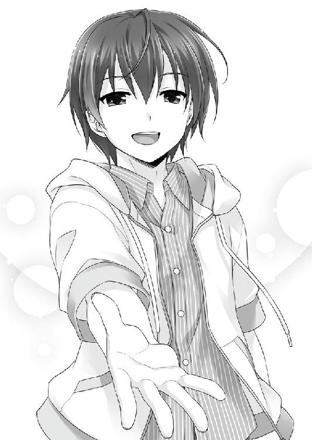
「一條！」
応えるより先に、叔美は力一杯一條を抱き締めていた。
抱き締めただけでは飽き足らず、クルクルと踊るように回る。
「ちょ、叔美、くるし......喉！ 喉に腕が掛かってるってば......!!」
「ありがとう」
囁き声は耳元で。
それが、今夜の戦いの一番の報酬だ。
四〇〇年と一口にいうが、呆れてしまうほど長い歳月である。
一説によれば、奥志麻で交衣が開かれるように仕来りが定められたのは、その程度は昔の出来事であるらしい。真実を知るものはいない。
今年の交衣は散々だった。仕来り破り、部外者乱入と何でもありで泥塗れ。老人たちは誰も彼もが、責任の所在を自分以外の全員に擦り付けてやろうと奮戦したが、壮絶な泥仕合が救いのない本格的な対立へ雪崩れ込む一歩手前で、奇跡のように手打ちが成立し、長老会は以前と同じ「日常」を取り戻した。
多地見花々梨が大罪人・千里十行と少なからぬ長老たちの謀議を示す『証拠』をちらつかせた結果、老人たちは「最初から何もなかった」ことにしてしまったのだ。花々梨の父もその結果、お咎めなく戻ってきた。その後の父と娘の間柄は、残念ながらというべきか極めつけの冷戦状態である。
血の繋がった親子でも、同じ道を歩けるとは限らないのが人生の妙味だ。
交衣に殴り込んだ部外者二名も、その後見と見なされた千里碧流についても同様である。その後しばらく、『アンブロシウス』の常連で『ヒトデナシ』の事情に通じた幾人かが、今年の交衣は盛況だったねえ、と空々しく述べて、碧流の白い目を受けたとか。
紆余曲折を辿った千里家の名跡は、正式に千里一條が引き継ぎ、伴う諸々に日々を忙殺される羽目になった。
ちなみに、しばらく後に空飛ぶバニーの目撃譚なる都市伝説が、奥志麻を騒がせ、とある騒動を引き起こすのだが、それは別の場で語られるべき物語だろう。
ともかくも、奥志麻と千里家にとって、一つの大きな句切りはついた。
奥志麻を離れた本土の某所に、多地見家の屋敷はある。
深夜。『ヒトデナシ』らしからぬ今風の邸宅の白く高い塀を軽々と乗り越えて、烏が闇夜に溶けるように、コダマは音もなく囚われの身から抜け出した。
「この私をいつまでも束縛しておこうなんて、身の程知らずなのよねぇん」
卑劣な二人のｃＳに捕縛されたコダマには相応の価値がある。大切な証人であり、生きたｃＳのサンプルとして。もっとも、証人については、事件そのものが失かったとしてほっかむりされている現在では無意味なのだが。
頑強な警備員の筋肉や獰猛なドーベルマンの鼻でｃＳは抑えきれない。抜け出すのは容易かったが、彼女が世界で唯一敬愛する主の行方は不明のままである。
「あーん、十行様ぁん、迎えに来てくださると思って待っていたのに。まさか......いいえ、十行様ぁんは必ず無事に何処かに。私が迎えにいって差し上げなければ」
コダマは己の愛を疑わない。忠誠を疑わない。彼女は植物型ｃＳだ。動物基礎型と違って、図太く、変質することがない。
剽悍な夜行性の獣の如く敏捷に身を翻して、夜の奥へと消えていく───
と思ったが、奔って戻ってきて、憎々しい花々梨の棲む屋敷を睨み付けると、やり残しの仕事を済ませることにした。
どこからか掠め盗ってきた派手なカラースプレーを純白の塀に向かって。
『おぼえてやがれ』
威嚇するように歯を鳴らしてから、今度こそ先の見えない闇へと飛び込んだ。
一條の元に「日常」が帰ってきて久しい、とある日。何を指して「日常」と呼ぶかは、それぞれの話ではあるが。
奥志麻の季節は、これから先が冬の本番だ。町行く人々の装いも随分と厚着になり、『アンブロシウス』に近い古町商店街では、気の早すぎるクリスマス特価セールが開催されている。
「今日は週末だし、忙しくなるかな」
数時間後の開店に備え、一條はバックヤードの姿見鏡で店制服の着こなしをチェックしてから欠伸を噛み殺し、玄関周りを確認。
「『働かざる者食うべからず』、だ」
店の入口横に、珍しく手ずから、本日のお勧めメニューを書いたスイング看板を並べていた碧流が、すれ違いに一言。
最近は、アカハやウシオも、たまに口にするフレーズ。ｃＳは、子供のように影響を受け易いのかもしれないが、姉が本当に伝えたい意味と二人が使ってる意味はおそらく違っている。同じ言葉でも、受け取り方や使い方は人様々だ。光を当てる方向で、影が形を変えてしまうように。
一條にとっては、働かなければ食べたところで美味くない、だ。空腹は最高の調味料。部屋一杯の飽食の甘露も、砂漠を越えて手にする一杯の水の喜びに遠く及ばない。
店に戻ると、カウンターに頬杖をついて観察していた叔美が、変な顔をしていた。
「メイセキとかになったのに、なンにも変わらないンだな」
「少しは変わったよ。姉さんの特訓メニューは二割増だし、知らない人と会ったり話したりの機会も増えた」
責任を担う意味を思い知らされる日も、遠からず訪れるだろうと予感している。どんな選択を迫られるのか、今日の処はまだ悩むまい。
昨日を振り向くのと同じように、明日の天気にひたすら心煩わせたところで疲れるばかり。何事も程々に、だ。
まだ開店準備中の店内には、馴染みの従業員の他にも、気の早いお客が一人。
「カカシ......」
「花々梨です。いい加減覚えてください。まあ、もういいですけど」
カウンター席で優雅にコーヒーを嗜んでいるのは花々梨だ。『真知廻』以降、時折『アンブロシウス』へ顔を出してくれるようになった。
いつもなら無駄に噛みつく気性の叔美が、最近はしおらしい。ばかりか、拾ったばかりで人慣れしていない野良猫みたいな、妙な距離の取り方をする。
叔美が奥志麻へやって来た頃のようで、時計の針が巻き戻った気分になる。
バックヤードからビールの入ったケースを己の体長よりも高く積んで運んできたアカハが、進歩のない淡泊な表情でカウンターに突っ伏している叔美へ。
「働かざる者食うべからず、です」
「オマエ......どっかの性格悪みたいなこと言うようになったな」
「勉強していますから」
店の入口から、ニトロ搭載エンジンみたいな急回転の跫音が迫ってきた。相手の正体は、見るまでもない。
「久留美」
「イチジョー！ 久留美ただいま到着っす！」
「遅いぞ、遅刻すると三〇秒毎にペナルティだ」
「グエェー、何すかそのブラック・システム!!」
オーナーの指摘に、大きく仰け反って泣いた真似。すぐにバックヤードへ走っていくと、それこそあっという間に制服に着替えてきた。
「オッスです、ウシオさん」
「ええ、オッス」
ウシオは、お馴染みの気配が非常に希薄な返事だ。
『マチ☆ダイスキ』期間も終わり。『アンブロシウス』の営業時間は夜間だけと元通りだが、碧流が臨時格安バイト二名を雇用し続けることにしたおかげで（目当ての固定客が増えた為）、一人頭の作業は随分と楽になった。
制服まで元の通りバニーでなくなったのは、残念なのか、ホッとするべきか。人間、自分の本心を見つけるのも簡単ではない。
「でも、この間は色々ありましたよねー」
久留美の振った話題は、当然この間の『真知廻』の件だ。
うんと頷いたきり、一條は黙り込んでしまう。
久留美との───できる範囲で事情を話すという約束は、まだ果たされていない。
今でも相当危険なのに、これ以上深入りさせたくないと思っている。どうするべきか、という選択を、まだ決めきれていなかった。
「──────イチジョーが話したくなったら、そうしてください」
思索に沈んでいると不意の耳打ち。いつの間にか驚くほど近くなっていた久留美の顔は、すぐに遠ざかる。
ほんの一瞬、まことに彼女らしからぬ目の覚めるような微笑。
脳の何処かがやられそうに眩しかった。
何もかもが変わっていく。人も、モノも、ｃＳも、色々な繋がりも。同じに留まり続けるものは何一つない。
久留美は今さっきの台詞も忘れたみたいに、清掃用のモップ片手に、カウンターに陣取る碧流と賑やかにガールズトークに興じる。昨夜のドラマがどうこう。新しいリップがなんだかんだ。そういえば美味しいケーキ屋が。
久留美がバイトに加わるまでは、この店でこんな会話を聞けなかったという事実に、胸の片隅がじんわりと温かくなる。
並んでいる碧流と久留美を眺めていると、真に失礼ながら二人が少女なんだと実感した。恐ろしくて、とても口に出しては言えない。
話の流れが途切れる。短い静けさが落ちる。
碧流が苦い薬でも飲んだような不思議な顔をしていた。
「どうかしましたか、ネーチャン」
「いや、なんだ......会合では助けられた。お前や叔美が来なかったら、あの場を収められたかどうか。礼を言っておく。花々梨のヤツには......別にいいか」
素直な感謝は、希少価値が高すぎて一條の息がピタッと止まる。
久留美の心境も大差なかったらしい。数秒呆気に取られてから、すぐさま脳内に火でも入ったような有頂天の顔で。
「当たり前っすよ！ 未来の義姉を助けるのは当然です!!」
全力で地雷を踏みに行った。カウンターから出てきた碧流が天使の微笑み。差し出された右手は誰が見ても罠なのに、光に吸い寄せられる小魚よろしくガッチリ握手。
手を握ったまま、碧流は久留美の背後に回る。右足を左足に絡ませる。左足を首に引っ掛ける。左手で右手をねじり上げる。完璧に決まった通称オクトパス・ホールドだ。
「誰が、未来の、姉、だッ!!!」
「ギブ！ ギブギブギブ！ 久留美死ねます、ギャー！」
「わたしがいなければ、碧流は今頃路頭に迷ってたんですよ。それをよくもまあ」
「それなら、一條とウチの秘密兵器共がいなければ、花々梨は今頃、太平洋でアンコウの餌だな。惜しいところだ！」
微笑ましくも賑やかな遣り取りを、少し距離を取って叔美が見守っていた。
ショーウィンドウ越しの情景に憧れるマッチ売りの少女のよう。
「こんなのも、もうすぐ終わりだ───なんて、考えてるんじゃ」
不意打ちに、踏んづけられた猫の顔になった。顔に出過ぎだが無理もない。人付き合いの経験が少ない叔美は、致命的に隠し事が苦手だ。
「どうするつもり？」
穏やかだかが真剣な一條には、誤魔化しは通じない。
人付き合いの貧しい野良猫だって、その程度の空気は読む。
「......頸輪、壊れたろ」
頸輪を失ってから、まだ『１４』は現れていない。だが、遠からずだ。一條は終わりの臭いを嗅ぎ取っている。あの日以来、日増しに強くなっていく。明日か、一〇日後か、一ヶ月先かはわからない。三ヶ月よりは短いだろう。
「だから、そういうことなンだよ......一條には、アレだ」
「アレって？」
「いや、だから、ほら、あるだろいろいろ!!」
叔美は『アンブロシウス』で幸せな夢を見た。
（───どうにかしてみせる）
少年の約束を疑ってはいない。
けれど、猶予は残り少ないのだと、叔美は察していた。
ここに留まれば、今度こそ一條や、碧流や、久留美や、アカハや、ウシオ......マスターやオカマダさんまで、『１４』に追いつかれるかもしれない。
そうなれば叔美は、誰よりも自分を許せなくなる。
そう思ってしまうのは、きっと前よりも弱くなってしまったのだ。
でも、そんな「アタシ」を叔美は以前よりも好きになれそうだった。
だから───
これは叔美自身の都合だけの我が儘だ。
短い夢はもう終わり。
暖かな微睡みから醒めるとしよう。
何も悲しいことはない。人生が有るべき姿に戻るだけだ。
ちょっぴり寂しいかもしれないが、逢えなくても、独りでも同じ空の下。
自分を救ってくれた人たちが、何処かに元気でいてくれるなら。
ここで過ごした日々の記憶を抱いて、どうにかやっていけるだろう。
「言っとくけど、一條、バカなことは考えンなよ」
「馬鹿なことってなんだよ」
「......とにかく、バカなことだよ。そうでなくても、一條はバカなンだし」
一條は溜息でも吐くように肩を竦めた。
「実はね、叔美みたいな『力』が今までにも居たんだ......って」
「───なンだと」
聞き捨てならないこと言われて、叔美は噛みつきそうな顔をした。一條が泡を食って両手を降参のポーズをする。
「待って、違う、黙ってたんじゃない！」
「───『秘聞帖』だ」
足下に久留美を屈服させた碧流が口を挟んできたが、叔美には難解なワードだった。
「ひ......〝ひもちょう〟？」
「お前の脳はザルか。『秘聞帖』。名跡を継いだ千里の当主だけが触れられる、千里の記録だ。十行が名跡を継ごうとしたのもこれの為だろう、多分......」
「それ、さっきわたしが教えたんですよ。感謝してますか、碧流」
情報元から扱いに関するクレームが付いたが、当然ながら、余計なツッコミは完全スルーが『アンブロシウス』・オーナーの流儀だ。
「あのクズが面倒な真似しても欲しがるって......宝の地図とか？」
「即物的なヤツめ。だが、当たらずとも遠からずだ。情報は、使いようによっては宝にもなる。毒にもな」
叔美は理解不能のマークを頭の上に浮かべる。一條が苦笑していた。
「昔の千里家の人たちは、関わると死をもたらすような人間とも関わる方法を持っていたらしい」
信じられないという顔。そんな都合のいい話があるだろうか。
「それは、『アンブロシウス』みたいにか？」
「お前の頸輪みたいに、だ。この家は、お祖母様の〝作品〟。お祖母様は『千里』の者ではない。お前の頸輪は、あの男が勘当された時に持ち出した、幾つかの『千里』の技法や術理を応用したものだろう。つまり、遣り方はあるということだ」
千里の先祖は、叔美のような特別な人間を世間と折り合わせてきた。それを一條が誇らしく感じるのは、名跡を継いだという自覚のせいだろうか。
「それって調べれば......わかるのか？ 方法が判るまで、どれぐらい掛かる？ 相当掛かるンだろ。本当に残ってるかどうかもわかンないもンな」
叔美は頷く。暗い顔は見せないでおこうと誓ったように、殊更に明るく。
「それなら、結論は決まってる」
「───まだ終わってないことを勝手に終わらせるな」
予想もしなかった強い言葉に驚く。
一條だ。少年がここぞというところで爆発すると知っていたつもりでも、火傷しそうな程熱の篭もった言葉を向けられるなんて、叔美は思ってもみなかった。
「わたし、力を貸して差し上げてもいいんですよ。多地見の家には、古い文献の類が沢山ありますから。本来は門外不出の貴重なものですが」
「花々梨さん、それを調べさせてもらっても？」
「どうぞ、一條さん。あなたにも叔美さんにも、お礼はしたいですから。碧流には......まあ、別に何もありませんね」
「この淫乱脳細胞。貸し付けておいて、一條の魂でも狙っているのか」
「やっかみですか。弟離れできない姉は恥ずかしいですね」
売られた喧嘩はタダでも買う主義の碧流に、これでは結果は見えていた。
「脳まで淫乱ウィルスに冒されてるなら、この場で息の根止めてやろう！」
「我が多地見家としても、千里の新しい名跡に恩を売れるのは、少なくない投資なんですよ。何か仰りたいことがありますか！」
「なんだ、その取って付けた理由は。言いたいことなら、山のようにあるぞ！」
所構わず、毎度のように火花を散らせる二人のことはさておいて。
「でも、これ以上は......迷惑......」
叔美は、喉の奥が塞がっているようで、上手く言葉が出てこない。
「僕は自分が幸せになりたい。それには、叔美も幸せな方がいい。思うんだけど。人間は独りで幸せになるのが苦手なんだよ。多分ね」
「ば......か、なに言ってンだよ」
珍しく良いことを言った気分だったのに、叔美は照れたように笑うばかりだった。
人は、きっとパズルのピースに似ている。
独りでは形も色も歪な一つに過ぎないが、他の形や色と噛み合えば、大きな絵を作り上げて見る者の心を打つこともできる。
自分が何者なのか。それを知るにも、他の誰かが必要だ。
だから、本当は誰よりも独りだったあの男は、幸せの意味も知らなかったのだと思う。
「それでも......誰だって、自分の幸せを選ぶ権利はあるんだよ」
人は独りで幸せになるのが苦手な寂しがり屋のクセに、他人を幸せにするのが苦手だ。
何処まで行っても、自分で選択して生きる。
そんな矛盾を抱いて、僕らはこの先もやっていく。
「でも、アタシは」
「でもも、バカもなし。まだ終わってないから、まだ選ぶ道はある。諦めるのは、遣れることを遣り切ってにしよう」
ああ、まったく───
叔美は鼻を啜って歯を食い縛る。
そんなことを言われてしまっては、涙なんて見せられない。
その遣り取りを聞いた、宿敵と激突寸前の碧流と開店準備に忙しいアカハが口を出す。
「『千里』の人間として、最後まで見届けよう」
「アカハは、お兄さんをお手伝いします」
床に放置されて事情のわかっていない者と、敢えて事情から目を逸らすモノがいたが、場の空気が何も反応しないことを許さなかった。
「事情はよくわからないけど、協力するっす！」
久留美は楽しそうだった。ウシオは最後まで知らないフリをして、頑迷に抵抗した。
言いよどんだ不死身の彼女に、小さな妹分が言う。
「行きませんか、センパイ？」
虚飾のない淡々とした問い掛けは、いつも通り。
こういう空気は苦手だが、ｃＳには命令が必要だ。少なくともウシオには。
「......雇われるなら、ギャラ分の仕事はする」
「また一からってワケか？」
呆れたような口ぶりの少女は笑っている。
それは、まるで太陽のように眩い笑顔。
「一から上等。バカみたいなのは僕らにお似合いだ」
あの路地裏で『１４』と出逢った時、何も知らないところから始めた。
終わりは、次の幕明けを報せる鐘だ。その向こうには、また新しい何かが待っている。
あんなに惹かれた優雅な生活は遙か彼方。
でも、代わりのモノは手に入ったから良しとしよう。
また一からだとしても、それは以前とは違う輝ける一。
そうして、やっと。
すぐ傍にいた名も知らぬ誰かが、やっと微笑ってくれたような気がした。
幕間の終わりを告げるラッパのように、『本』が自動的に現れた。
４４４─■■■■
別れはまた新しい出逢いの始まり、ともいう。
今日の『アンブロシウス』は、普段に輪を掛けて騒がしい。何やら、女たちは今後の話でイイカンジに盛り上がっている。若干一名、ノリの悪いメンバーもいるようだが。素晴らしきは同調圧力。
いつまでも他人事じゃないぞ。言い出したのはキミなんだしな。
ここで重要な選択を迫られる。門出を祝うのに相応しいものを選ぶように。
キミはどうするべきか。
人生は優雅に、大胆に、そして慎重に、だ。
学生の本分に立ち戻り、進学の準備をするなら／３０９─■■■■ へ行け
世界を広げるのは人と人の関係。友人と親交を深めるもよし／２９８─■■■■ へ行け
手掛かりを求めて、多地見家を訪ねるべきかもしれない／７１０─■■■■ へ行け
最近は忙しかったが。休息も必要だろう。当分は家でゆっくりするのも悪くない。その場合は......／２５１─■■■■ へ行け
次の物語はこれまで以上に大変かもしれないが、なあに、これまでの経験を活かせば、やってやれないことないかも......な。
選択視を変えるものは自分自身だと、『本』は教えてくれた。
選択は繰り返される。幾度となく。
前へと進まなければならない。
振り向いたところで待っているのは郷愁の空白だから。
闇を恐れるように、地平の山を越えた向こう側に夢を見て知らない場所を歩き続けよう。
運命が運んでくる幸福に、快楽に、困難に、束縛と屈辱に、ありとあらゆるモノに。
屈することなく自分の意志で選択し続ける。
それだけが、人生を何かに委ねてしまう甘美な罠を打ち破る唯一の術だ。
だから千里一條の選択は、続く。
【ＥＮＤ】
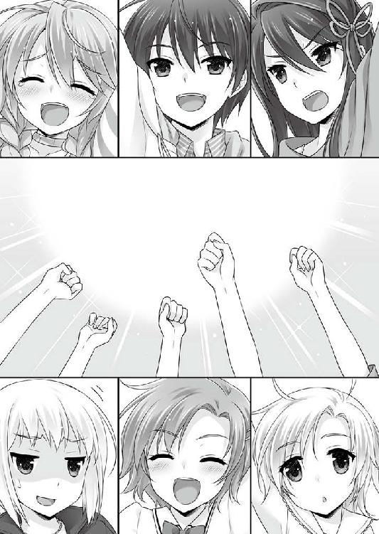
あ と が き
お久しぶりになります日野亘です。何とか間を開けず、皆様に『ＰＧ１４』三巻をお届けできることになりました。
この『ＰＧ１４』という物語は、かつて「ゲームブック」というものを楽しませて貰った者として、自分なりに得た「面白さ」を活かしてみたいというところからスタートしました。
ゲームブックに付き物の「選択」とは、時に厳しく、時にヌルく突き付けられるものですが、その向こう側に辿り着かなければ、「何か」を得ることは出来ません。
常に一つしか選べない選択肢とパラグラフを積み重ねて完成するゲームブックの在り方は、別のあるものとも似ているのでは、という思いを本作に込めました。
もっとも、そのテーマを消化するのに三巻も掛かってしまった次第です。『ＰＧ１４』はこの三冊をもって、一條と叔美の出逢いから始まった導入が一区切りいたします。奥志麻の面々のそれぞれの選択と物語は、この先も振り向くことなく進んでいきます。その物語を書く機会がありましたら、よろしくお願いします。
読んでいただければわかると思いますが、「奥志麻」も良いところです。読者の皆様も奥志麻へ是非遊びにきてください。「天河踊り」や「マチ☆ダイスキ」など見所満載のイベント期間がお勧めです。
最後に、恒例となりましたお世話になった皆様への謝辞を。
今回も『本』の表現について色々と相談に乗って頂きました編集の遠藤様。
三巻でも見事な表紙と挿絵を描いてくださった、さえき北都様。
今回もチェックや進行で大迷惑を掛けました、リサイトの皆様。
前回の『マチ★アソビ』でご協力を頂きました、南海ブックスの皆様。
日々幾つものネタを頂いている、Ｔ県民の皆様。
それから、この本を手にとってくださった、全ての皆様。
心から、感謝を捧げます。『ＰＧ１４』は皆様のお力なしには生まれませんでした。ありがとうございました。
日野 亘

日野 亘
四国の片隅で執筆中。最近近所に黒猫が住み着きました。代表作は「るいは智を呼ぶ」「ハロー・レディ」「ＰＧ１４」他。
猫と潜水艦を終生の友とするなまもの。
ＰＧ１４ ３
電子版発行 ２０１５年11月５日
著 者 日野 亘
発行者 長谷川 洋
発行所 株式会社一二三書房
〒１０２─００７２
東京都千代田区飯田橋２─14─２ 雄邦ビル
電話 ０３─３２６５─１８８１
イラスト さえき北都
デザイン erika
©HIFUMI SHOBO
本書の無断複製（コピー）は、著作権上の例外を除き、禁じられています。
●本書は『ＰＧ１４ ３』（２０１５年10月20日 初版第１刷）に基づいて制作されました。